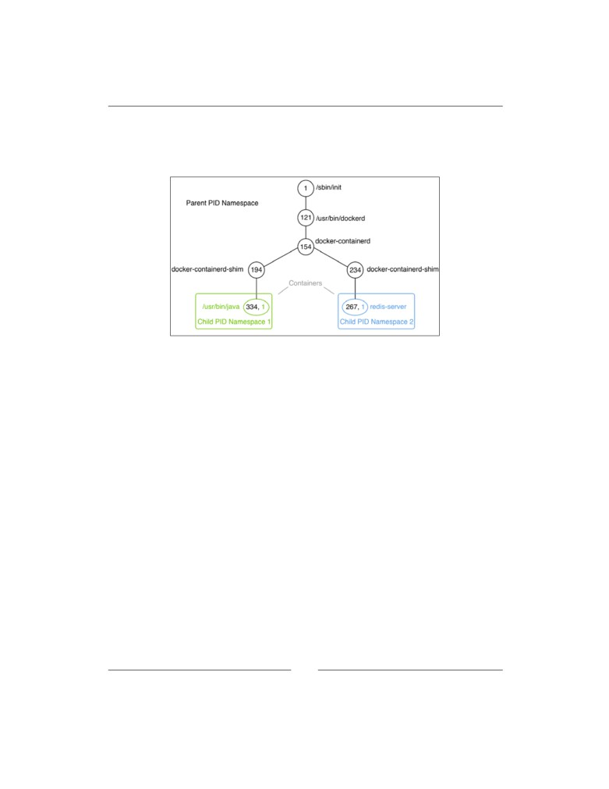
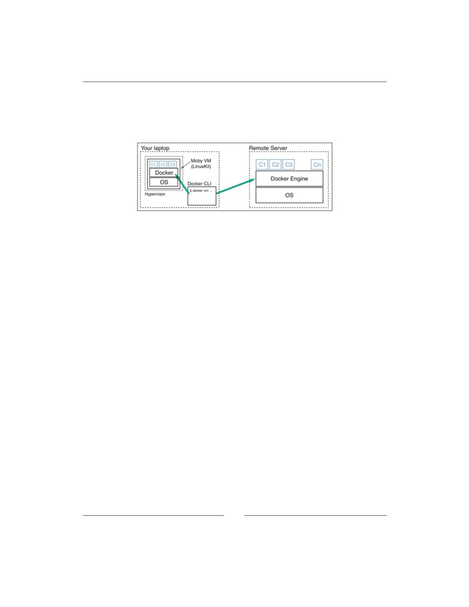
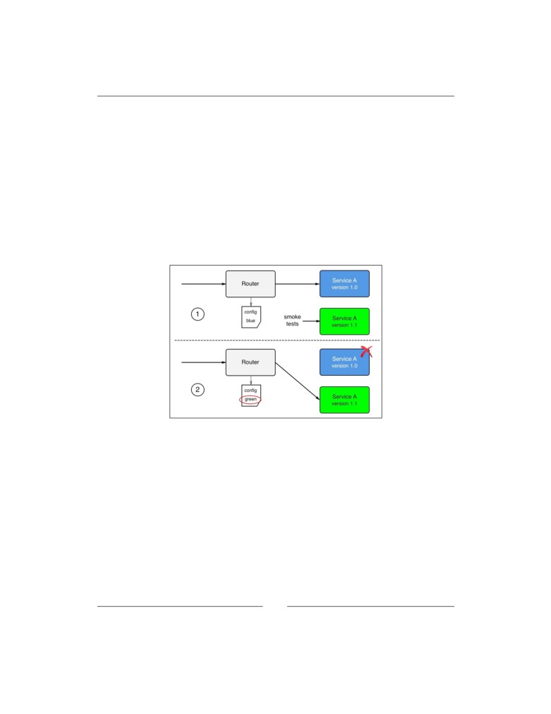
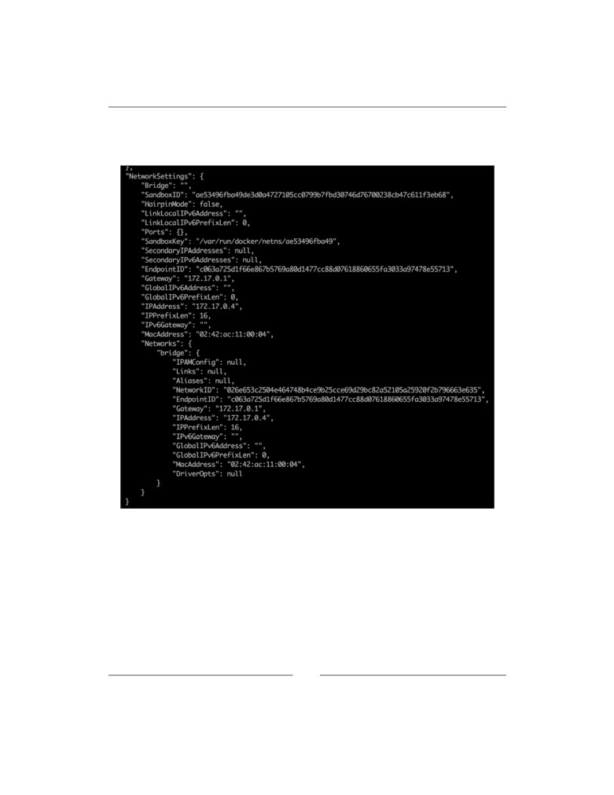
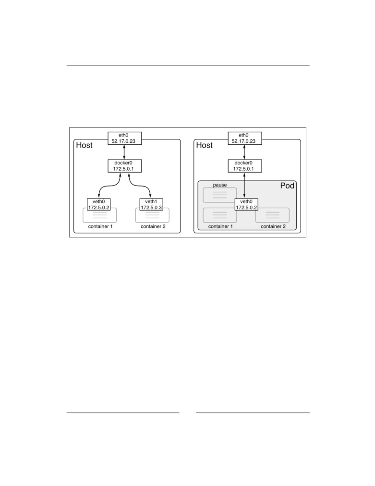
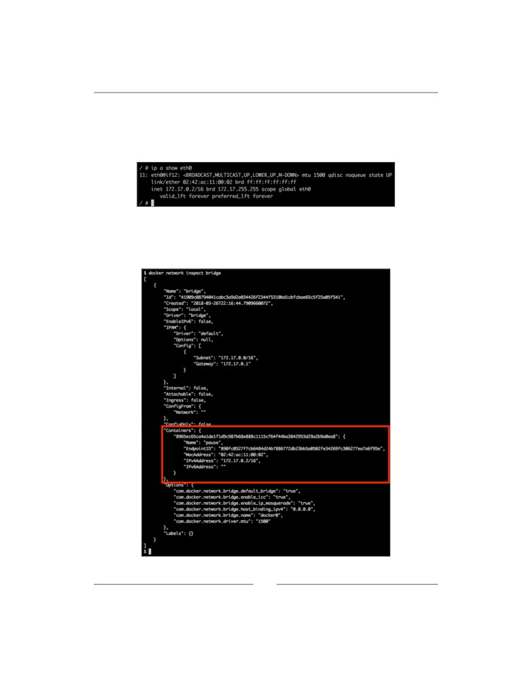
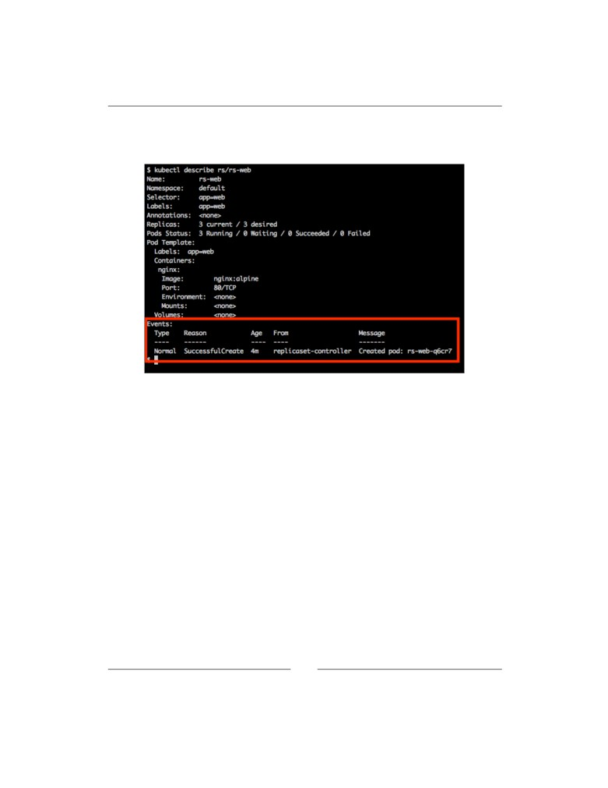
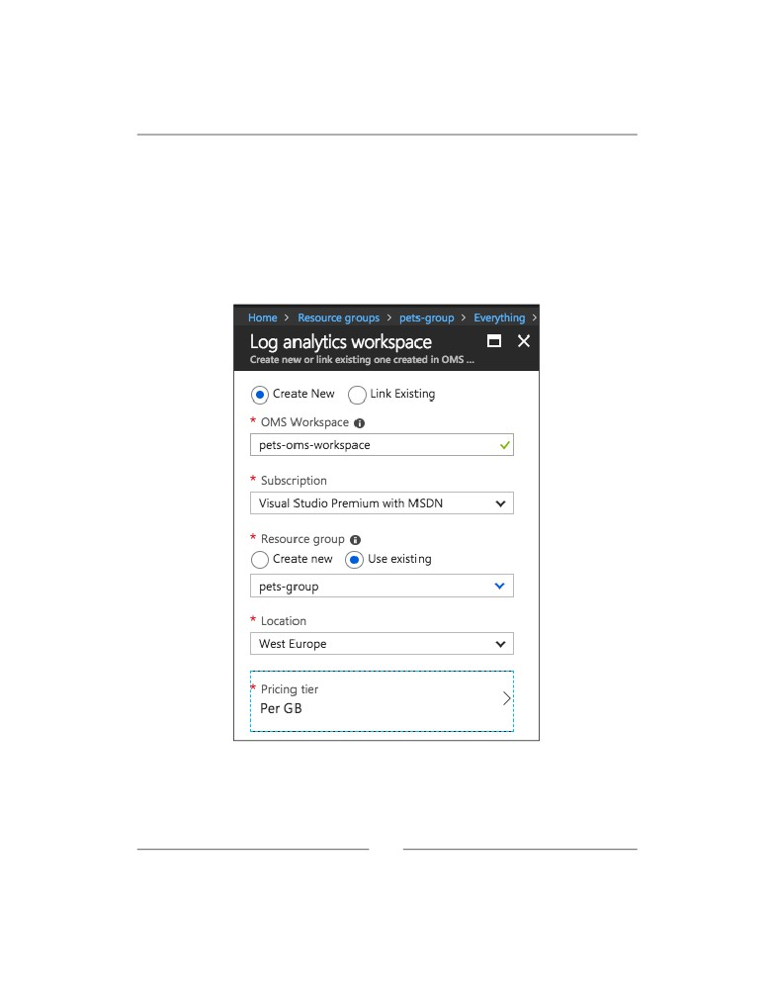

Containerize your
Apps with Docker
and Kubernetes
Deploy, scale, orchestrate, and manage containers
with Docker and Kubernetes
Dr. Gabriel N. Schenker
Containerize your Apps with
Docker and Kubernetes
Deploy, scale, orchestrate, and manage containers
with Docker and Kubernetes
Dr. Gabriel N. Schenker
BIRMINGHAM - MUMBAI
Containerize your Apps with Docker and Kubernetes
Copyright © 2018 Packt Publishing
All rights reserved. No part of this book may be reproduced, stored in a retrieval
system, or transmitted in any form or by any means, without the prior written
permission of the publisher, except in the case of brief quotations embedded in
critical articles or reviews.
Every effort has been made in the preparation of this book to ensure the accuracy
of the information presented. However, the information contained in this book is
sold without warranty, either express or implied. Neither the author, nor Packt
Publishing or its dealers and distributors, will be held liable for any damages caused
or alleged to have been caused directly or indirectly by this book.
Packt Publishing has endeavored to provide trademark information about all of the
companies and products mentioned in this book by the appropriate use of capitals.
However, Packt Publishing cannot guarantee the accuracy of this information.
Commissioning Editor: Vijin Boricha
Acquisition Editor: Shrilekha Inani
Content Development Editors: Ronn Kurien
Technical Editor: Swathy Mohan
Copy Editor: Safis Editing
Project Coordinator: Jagdish Prabhu
Proofreader: Safis Editing
Indexers: Mariammal Chettiyar
Graphics: Tom Scaria
Production Coordinator: Nilesh Mohite
First published: September 2018
Production reference: 1260918
Published by Packt Publishing Ltd.
Livery Place
35 Livery Street
Birmingham B3 2PB, UK.
ISBN 978-1-78961-036-9
Mapt is an online digital library that gives you full access to over 5,000 books and
videos, as well as industry leading tools to help you plan your personal development
and advance your career. For more information, please visit our website.
Why subscribe?
• Spend less time learning and more time coding with practical eBooks and
Videos from over 4,000 industry professionals
• Learn better with Skill Plans built especially for you
• Get a free eBook or video every month
• Mapt is fully searchable
• Copy and paste, print, and bookmark content
PacktPub.com
Did you know that Packt offers eBook versions of every book published, with PDF
and ePub files available? You can upgrade to the eBook version at www.PacktPub.
com and as a print book customer, you are entitled to a discount on the eBook copy.
Get in touch with us at customercare@packtpub.com for more details.
At www.PacktPub.com , you can also read a collection of free technical articles, sign
up for a range of free newsletters, and receive exclusive discounts and offers on
Packt books and eBooks.
Contributors
About the author
Dr. Gabriel N. Schenker has more than 25 years of experience as an independent
consultant, architect, leader, trainer, mentor, and developer. Currently, Gabriel
works as Senior Curriculum Developer at Confluent after coming from a similar
position at Docker. Gabriel has a Ph.D. in Physics, and he is a Docker Captain, a
Certified Docker Associate, and an ASP Insider. When not working, Gabriel enjoys
time with his wonderful wife Veronicah and his children.
About the reviewer
Xijing Zhang is currently a technical curriculum developer at Docker after
graduating from the University of Southern California as an electrical engineer.
Previously, she has interned on the Failure Analysis Team at SanDisk and has held
multiple research positions at USC and Tsinghua University. She has worked on
projects dealing with making air conditioners more efficient, nuclear power safety,
and single photon emission.
Peter McKee is a Software Architect and Senior Software Engineer at Docker,
Inc. He leads the technical team that delivers the Docker Success Center. He's been
leading and mentoring teams for more than 20 years. When not building things with
software, he spends his time with his wife and seven kids in beautiful Austin, TX.
Packt is searching for authors like you
com and apply today. We have worked with thousands of developers and tech
professionals, just like you, to help them share their insight with the global tech
community. You can make a general application, apply for a specific hot topic that
we are recruiting an author for, or submit your own idea.
Table of Contents
Preface
ix
Chapter 1: What Are Containers and Why Should I Use Them?
1
Technical requirements
2
What are containers?
2
Why are containers important?
5
Improving security
5
Simulating production-like environments
6
Standardizing infrastructure
6
What's the benefit for me or for my company?
6
The Moby project
7
Docker products
8
Docker CE
8
Docker EE
9
The container ecosystem
9
Container architecture
10
Summary
11
Questions
12
Further reading
13
Chapter 2: Setting up a Working Environment
15
Technical requirements
16
The Linux command shell
16
PowerShell for Windows
17
Using a package manager
17
Installing Homebrew on a macOS
17
Installing Chocolatey on Windows
18
Choosing a code editor
19
Docker Toolbox
19
[ i ]
Table of Contents
Docker for macOS and Docker for Windows
22
Installing Docker for macOS
22
Installing Docker for Windows
24
Using docker-machine on Windows with Hyper-V
24
Minikube
26
Installing Minikube on macOS and Windows
26
Testing Minikube and kubectl
27
Cloning the source code repository
28
Summary
29
Questions
29
Further reading
29
Chapter 3: Working with Containers
31
Technical requirements
32
Running the first container
32
Starting, stopping, and removing containers
33
Running a random quotes container
35
Listing containers
37
Stopping and starting containers
38
Removing containers
39
Inspecting containers
40
Exec into a running container
42
Attaching to a running container
43
Retrieving container logs
45
Logging drivers
46
Using a container-specific logging driver
47
Advanced topic - changing the default logging driver
47
Anatomy of containers
48
Architecture
49
Namespaces
50
Control groups (cgroups)
51
Union filesystem (UnionFS)
52
Container plumbing
52
Runc
52
Containerd
52
Summary
53
Questions
53
Further reading
53
[ ii ]
Table of Contents
Chapter 4: Creating and Managing Container Images
55
What are images?
56
The layered filesystem
56
The writable container layer
58
Copy-on-write
59
Graph drivers
59
Creating images
60
Interactive image creation
60
Using Dockerfiles
63
The FROM keyword
64
The RUN keyword
65
The COPY and ADD keywords
66
The WORKDIR keyword
67
The CMD and ENTRYPOINT keywords
68
A complex Dockerfile
70
Building an image
71
Multistep builds
75
Dockerfile best practices
77
Saving and loading images
79
Sharing or shipping images
79
Tagging an image
80
Image namespaces
80
Official images
82
Pushing images to a registry
82
Summary
83
Questions
83
Further reading
84
Chapter 5: Data Volumes and System Management
85
Technical requirements
86
Creating and mounting data volumes
86
Modifying the container layer
86
Creating volumes
87
Mounting a volume
89
Removing volumes
90
Sharing data between containers
91
Using host volumes
92
Defining volumes in images
95
Obtaining Docker system information
97
Listing resource consumption
100
[ iii ]
Table of Contents
Pruning unused resources
101
Pruning containers
101
Pruning images
102
Pruning volumes
103
Pruning networks
104
Pruning everything
104
Consuming Docker system events
104
Summary
106
Questions
106
Further reading
107
Chapter 6: Distributed Application Architecture
109
What is a distributed application architecture?
110
Defining the terminology
110
Patterns and best practices
113
Loosely coupled components
113
Stateful versus stateless
113
Service discovery
114
Routing
116
Load balancing
116
Defensive programming
117
Retries
117
Logging
117
Error handling
117
Redundancy
118
Health checks
118
Circuit breaker pattern
119
Running in production
120
Logging
120
Tracing
120
Monitoring
121
Application updates
121
Rolling updates
121
Blue-green deployments
122
Canary releases
122
Irreversible data changes
123
Rollback
123
Summary
124
Questions
124
Further reading
125
[ iv ]
Table of Contents
Chapter 7: Single-Host Networking
127
Technical requirements
128
The container network model
128
Network firewalling
130
The bridge network
131
The host network
141
The null network
142
Running in an existing network namespace
143
Port management
145
Summary
147
Questions
148
Further reading
148
Chapter 8: Docker Compose
149
Technical requirements
150
Demystifying declarative versus imperative
150
Running a multi-service app
151
Scaling a service
156
Building and pushing an application
159
Summary
160
Questions
160
Further reading
160
Chapter 9: Orchestrators
161
What are orchestrators and why do we need them?
162
The tasks of an orchestrator
163
Reconciling the desired state
163
Replicated and global services
164
Service discovery
165
Routing
166
Load balancing
166
Scaling
167
Self-healing
168
Zero downtime deployments
169
Affinity and location awareness
170
Security
170
Secure communication and cryptographic node identity
171
Secure networks and network policies
171
Role-based access control (RBAC)
172
Secrets
172
[ v ]
Table of Contents
Content trust
173
Reverse uptime
174
Introspection
174
Overview of popular orchestrators
175
Kubernetes
175
Docker Swarm
176
Microsoft Azure Kubernetes Service (AKS)
178
Apache Mesos and Marathon
178
Amazon ECS
179
Summary
180
Questions
180
Further reading
180
Chapter 10: Orchestrating Containerized Applications
with Kubernetes
181
Technical requirements
182
Architecture
182
Kubernetes master nodes
185
Cluster nodes
186
Introducing Minikube
188
Kubernetes support in Docker for Desktop
190
Pods
196
Comparing Docker Container and Kubernetes pod networking
197
Sharing the network namespace
198
Pod life cycle
201
Pod specification
202
Pods and volumes
204
Kubernetes ReplicaSet
206
ReplicaSet specification
207
Self-healing
208
Kubernetes deployment
209
Kubernetes service
210
Context-based routing
212
Summary
213
Questions
213
Further reading
214
Chapter 11: Deploying, Updating, and Securing an Application
with Kubernetes
215
Technical requirements
216
Deploying a first application
216
Deploying the web component
216
[ vi ]
Table of Contents
Deploying the database
220
Streamlining the deployment
225
Zero downtime deployments
226
Rolling updates
227
Blue-green deployment
230
Kubernetes secrets
235
Manually defining secrets
235
Creating secrets with kubectl
237
Using secrets in a pod
237
Secret values in environment variables
240
Summary
241
Questions
241
Further reading
242
Chapter 12: Running a Containerized App in the Cloud
243
Technical requirements
244
Creating a fully managed Kubernetes cluster in Azure
244
Running the Azure CLI
245
Azure resource groups
247
Provisioning the Kubernetes cluster
248
Pushing Docker images to the Azure Container Registry (ACR)
251
Creating an ACR
252
Tagging and pushing Docker images
253
Configuring the service principal
254
Deploying an application into the Kubernetes cluster
255
Scaling the Pets application
257
Scaling the number of app instances
257
Scaling the number of cluster nodes
258
Monitoring the cluster and application
260
Creating a log analytics workspace
261
Monitoring the container health
263
Viewing the logs of Kubernetes masters
264
Viewing the kublet and container logs
267
Upgrading the application with zero downtime
272
Upgrading Kubernetes
273
Debugging the application while it is running in AKS
275
Creating a Kubernetes cluster for development
275
Configuring the environment
277
Deploying and running a service
278
Remote debugging a service using Visual Studio Code
280
Enabling edit-and-continue style development in the cloud
282
[ vii ]
Table of Contents
Cleaning up
283
Summary
283
Questions
284
Further reading
284
Appendix: Assessment
285
Chapter 1: What Are Containers and Why Should I Use Them?
285
Chapter 2: Setting up a Working Environment
286
Chapter 3: Working with Containers
287
Chapter 4: Creating and Managing Container Images
287
Chapter 5: Data Volumes and System Management
289
Chapter 6: Distributed Application Architecture
290
Chapter 7: Single-Host Networking
291
Chapter 8: Docker Compose
292
Chapter 9: Orchestrators
293
Chapter 10: Orchestrating Containerized Applications
with Kubernetes
294
Chapter 11: Deploying, Updating, and Securing an Application
with Kubernetes
295
Chapter 12: Running a Containerized App in the Cloud
297
Other Books You May Enjoy
299
Index
303
[ viii ]
Preface
Containerization is said to be the best way to implement DevOps and the main goal of
this book is to provide end-to-end deployment solutions for your Azure environment.
This book will initiate with the implementation of deploying and managing
containers along with getting you up and running with Docker and Kubernetes.
Then, this book will explain operations for container management and orchestration
in Docker using Azure's cloud solutions. You will also learn to deploy and manage
highly scalable applications along with setting-up production ready Kubernetes
cluster on Azure in an intact environment. Lastly, The book will also help you
leverage Microsoft's Docker and Kubernetes tools to build apps that can be quickly
deployed on Azure.
By the end of the book, you will get hands-on with some more advanced topics to
further extend your knowledge about Docker and Kubernetes.
Who this book is for
If you are a developer, system administrator, or DevOps engineer who wants to use
Docker and Kubernetes to run your mission-critical applications scalable, securely,
and highly available on-prem or in the cloud, then this book is for you. In order
to learn from this book, you should have some basic Linux/Unix skills such as
installing packages, editing files, managing services, and so on. If you have some
basic virtualization experience that would be an added advantage.
[ ix ]
Preface
What this book covers
Chapter 1, What Are Containers and Why Should I Use Them?, this chapter focuses on
the software supply chain and the friction within it. It then presents containers as
a means to reduce this friction and add enterprise-grade security on top of it. In
this chapter, we also look into how containers and the ecosystem around them are
assembled. We specifically point out the distinction between the upstream OSS
components (Moby) that form the building blocks of the downstream products of
Docker and other vendors.
Chapter 2, Setting up a Working Environment, in this chapter discussed in detail how to
set up an ideal environment for developers, DevOps and operators that can be used
when working with Docker containers.
Chapter 3, Working with Containers, this chapter teaches how start, stop and remove
containers. The chapter also teaches how to inspect containers to retrieve additional
metadata of it. Furthermore, it introduces how to run additional processes or how to
attach to the main process in an already running container. It is also showing how
to retrieve logging information from a container that is produced by the processes
running inside it. Finally, the chapter introduces the inner workings of a container
including such things as Linux namespaces and cgroups.
Chapter 4, Creating and Managing Container Images, this chapter introduces the
different ways how to create container images that serve as templates for containers.
It introduces the inner structure of an image and how it is built.
Chapter 5, Data Volumes and System Management, this chapter introduces data volumes
that can be used by stateful components running in containers. The chapter also
introduces system level commands that are used to gather information about Docker
and the underlying OS as well as commands to clean the system from orphaned
resources. Finally, it introduces the system events generated by the Docker engine.
Chapter 6, Distributed Application Architecture, this chapter introduces the concept of
a distributed application architecture and discusses the various patterns and best
practices that are required to run a distributed application successfully. Finally,
it discusses the additional requirements that need to be fulfilled to run such an
application in production.
Chapter 7, Single-Host Networking, this chapter introduces the Docker container
networking model and its single host implementation in the form of the bridge
network. The chapter introduces the concept of software-defined networks and
how they are used to secure containerized applications. Finally, it introduces
how container ports can be opened to the public and thus make containerized
components accessible from the outside world.
[ x ]
Preface
Chapter 8, Docker Compose, this chapter introduces the concept of an application
consisting of multiple services each running in a container and how Docker
Compose allows us to easily build, run and scale such an application using a
declarative approach.
Chapter 9, Orchestrators, this chapter introduces the concept of orchestrators. It
teaches why orchestrators are needed and how they conceptually work. The chapter
will also provide an overview of the most popular orchestrators and name a few of
their pros and cons.
Chapter 10, Orchestrating Containerized Applications with Kubernetes, this chapter
introduces Kubernetes. Kubernetes is currently the clear leader in the container
orchestration space. It starts with a high-level overview of the architecture of a
Kubernetes cluster and then discusses the main objects used in Kubernetes to define
and run containerized applications.
Chapter 11, Deploying, Updating, and Securing an Application with Kubernetes, this
chapter teaches how to deploy, update and scale applications into a Kubernetes
cluster. It also explains how zero downtime deployments are achieved to enable
disruption free updates and rollbacks of mission-critical applications. This chapter
also introduces Kubernetes secrets as a means to configure services with and protect
sensitive data.
Chapter 12, Running a Containerized App in the Cloud, this chapter shows how to
deploy a complex containerized application into a hosted Kubernetes cluster on
Microsoft Azure using the Azure Kubernetes Service (AKS) offering. First it explains
how to provision a Kubernetes cluster, second it shows how to host the Docker
images in the Azure Container Registry and finally it demonstrates how to deploy,
run, monitor, scale and upgrade the application. The chapter also demonstrates how
to upgrade the version of Kubernetes in the cluster without causing any downtime.
To get the most out of this book
Ideally you have access to a laptop or personal computer with Windows 10
Professional or a recent version of Mac OS X installed. A computer with any popular
Linux OS installed works too. If you're on a Mac you should install Docker for Mac
and if you're on Windows then install Docker for Windows. You can download them
If you are on an older version of Windows or are using Windows 10 Home edition,
then you should install Docker Toolbox. You can find the Docker Toolbox here:
[ xi ]
Preface
On the Mac, use the Terminal application, and on Windows, use a PowerShell
console to try out the commands you will be learning. You also need a recent version
of a browser such as Google Chrome, Safari or Internet Explorer. Of course you will
need internet access to download tools and container images that we are going to use
and explore in this book.
To follow Chapter 12, Running a Containerized App in the Cloud, you need access
to Microsoft Azure. If you do not have an existing account on Azure it is possible to
Download the EPUB/mobi and example
code files
An EPUB and mobi version of this book is available free of charge on Github.
You can download the example code files for this book from your account at
to you.
You can download the code files by following these steps:
2. Select the SUPPORT tab.
3. Click on Code Downloads & Errata.
4. Enter the name of the book in the Search box and follow the on-screen
instructions.
Once the file is downloaded, please make sure that you unzip or extract the folder
using the latest version of:
• WinRAR / 7-Zip for Windows
• Zipeg / iZip / UnRarX for Mac
•
7-Zip / PeaZip for Linux
[ xii ]
Preface
We also have other code bundles from our rich catalog of books and videos available
Download the color images
We also provide a PDF file that has color images of the screenshots/diagrams used
Conventions used
There are a number of text conventions used throughout this book.
CodeInText: Indicates code words in text, database table names, folder names,
filenames, file extensions, pathnames, dummy URLs, user input, and Twitter
handles. For example; "The content of each layer is mapped to a special folder
on the host system, which is usually a subfolder of /var/lib/docker/."
A block of code is set as follows:
COPY . /app
COPY ./web /app/web
COPY sample.txt /data/my-sample.txt
ADD sample.tar /app/bin/
When we wish to draw your attention to a particular part of a code block, the
relevant lines or items are set in bold:
FROM python:2.7
RUN mkdir -p /app
WORKDIR /app
COPY ./requirements.txt /app/
RUN pip install -r requirements.txt
CMD ["python", "main.py"]
[ xiii ]
Preface
Any command-line input or output is written as follows:
az group create --name pets-group --location westeurope
Bold: Indicates a new term, an important word, or words that you see on screen. For
example, in menus or dialog boxes appear in the text like this. Here is an example:
"Select System info from the Administration panel."
Warnings or important notes appear in a box like this.
Tips and tricks appear like this.
Get in touch
Feedback from our readers is always welcome.
General feedback: Email customercare@packtpub.com, and mention the book's
title in the subject of your message. If you have questions about any aspect of this
book, please email us at customercare@packtpub.com.
Errata: Although we have taken every care to ensure the accuracy of our content,
mistakes do happen. If you have found a mistake in this book we would be grateful
errata , selecting your book, clicking on the Errata Submission Form link, and
entering the details.
Piracy: If you come across any illegal copies of our works in any form on the
Internet, we would be grateful if you would provide us with the location address
or website name. Please contact us at copyright@packtpub.com with a link to the
material.
If you are interested in becoming an author: If there is a topic that you have
expertise in and you are interested in either writing or contributing to a book,
[ xiv ]
Preface
Reviews
Please leave a review. Once you have read and used this book, why not leave a
review on the site that you purchased it from? Potential readers can then see and use
your unbiased opinion to make purchase decisions, we at Packt can understand what
you think about our products, and our authors can see your feedback on their book.
Thank you!
For more information about Packt, please visit packtpub.com .
[ xv ]
What Are Containers and
Why Should I Use Them?
This first chapter of this book will introduce you to the world of containers and
their orchestration. This book assumes you have no prior knowledge in the area
of containers, and will give you a very practical introduction into the topic.
In this chapter, we are focusing on the software supply chain and the friction within
it. We then present containers as a means to reduce this friction and add enterprise-
grade security on top of it. In this chapter, we also look into how containers and
the ecosystem around them are assembled. We specifically point out the distinction
between the upstream Operations Support System (OSS) components, united under
the code name Moby, that form the building blocks of the downstream products of
Docker and other vendors.
The chapter covers the following topics:
• What are containers?
• Why are containers important?
• What's the benefit for me or for my company?
• The Moby project
• Docker products
• The container ecosystem
• Container architecture
[ 1 ]
What Are Containers and Why Should I Use Them?
After completing this module, you will be able to:
• Explain in a few simple sentences to an interested layman what containers
are, using an analogy such as physical containers
• Justify to an interested layman why containers are so important, using an
analogy such as physical containers versus traditional shipping, or apartment
homes versus single family homes, and so on
• Name at least four upstream open source components that are used by the
Docker products, such as Docker for Mac/Windows
• Identify at least three Docker products
Technical requirements
This chapter is a theoretical introduction into the topic. Therefore, there are no
special technical requirements for this chapter.
What are containers?
A software container is a pretty abstract thing and thus it might help if we start
with an analogy that should be pretty familiar to most of the readers. The analogy
is a shipping container in the transportation industry.
We transport huge amounts of goods on trains, ships, and trucks. We unload them
at target locations, which may be another means of transportation. Goods are
often diverse and complex to handle. Before the invention of shipping containers,
this unloading from one means of transportation and loading onto another was a
really complex and tedious process. Take, for example, a farmer bringing a cart full
of apples to a central train station where the apples are then loaded onto a train,
together with all the apples from many other farmers. Or think of a winemaker
bringing his barrels of wine with a truck to the port where they are unloaded, and
then transferred to a ship that will transport the barrels overseas. Every type of good
was packaged in its own way and thus had to be handled in its own way. Any loose
goods risked being stolen or damaged in the process. Then, there came the container,
and it totally revolutionized the transportation industry.
[ 2 ]
Chapter 1
The container is just a metallic box with standardized dimensions. The length, width,
and height of each container is the same. This is a very important point. Without the
world agreeing on a standard size, shipping containers would not have become so
successful. Nowadays, companies who want to have their goods transported from
A to B package those goods into these standardized containers. Then, they call a
shipper which comes with a standardized means for transportation. This can be a
truck designed to load a container or a train whose wagons can each transport one or
several containers. Finally, we have ships that are specialized in transporting huge
amounts of containers. The shippers never need to unpack and repackage goods. For
a shipper, a container is a just a black box; they are not interested in what is in it nor
should they care in most cases. It is just a big iron box with standard dimensions. The
packaging of goods into containers is now fully delegated to the parties that want to
have their goods shipped, and they should know best how to handle and package
those goods. Since all containers have the same standardized shape and dimensions,
the shippers can use standardized tools to handle containers, that is, cranes that
unload containers, say from a train or a truck, and load them onto a ship or vice
versa. One type of crane is enough to handle all the containers that come along over
time. Also, the means of transportation can be standardized, such as container ships,
trucks, and trains. Because of all this standardization, all the processes in and around
shipping goods could be standardized, and thus made much more efficient than they
were before the age of containers.
I think by now you should have a good understanding of why shipping containers
are so important and why they revolutionized the whole transportation industry. I
chose this analogy because the software containers that we are going to look at here
fulfill the exact same role in the software supply chain as shipping containers do in
the supply chain of physical goods.
Let's discuss what developers used to do when they developed a new application.
Once an application was completed in the eyes of the developers, they would hand
this application over to the operations engineers that were then supposed to install
it on the production servers and get it running. If the operations engineers were
lucky, they even got an accurate document with installation instructions from the
developers. So far so good, and life was easy. But things got a bit out of hand when
there were many teams of developers in an enterprise that created quite different
types of applications, yet all needed to be installed on the same production servers
and kept running there. Usually, each application has some external dependencies
such as which framework it was built on or what libraries it uses and so on.
[ 3 ]
What Are Containers and Why Should I Use Them?
Sometimes, two applications would use the same framework but in different
versions that might or might not be compatible between each other. Our operations
engineer's life became much harder over time. They had to be really creative with
how they could load their servers, or their 'ship', with different applications without
breaking something. Installing a new version of a certain application was a complex
project on its own and often needed months of planning and testing. In other words,
there was a lot of friction in the software supply chain. But these days, companies
rely more and more on software and the release cycles become shorter and
shorter. We cannot afford anymore to just have a new release maybe twice a year.
Applications need to be updated in a matter of weeks or days, or sometimes even
multiple times per day. Companies that do not comply risk going out of business
due to the lack of agility. So, what's the solution?
A first approach was to use virtual machines (VMs). Instead of running multiple
applications all on the same server, companies would package and run a single
application per VM. With it, the compatibility problems were gone and life seemed
good again. Unfortunately, the happiness didn't last for long. VMs are pretty heavy
beasts on their own since they all contain a full-blown OS such as Linux or Windows
Server and all that for just a single application. This is as if in the transportation
industry you would use a gigantic ship just to transport a truck load of bananas.
What a waste. That can never be profitable. The ultimate solution to the problem
was to provide something much more lightweight than VMs but also able to
perfectly encapsulate the goods it needed to transport. Here, the goods are the actual
application written by our developers plus (and this is important) all the external
dependencies of the application, such as framework, libraries, configurations, and
more. This holy grail of a software packaging mechanism was the Docker container.
Developers use Docker containers to package their applications, frameworks, and
libraries, and then they ship those containers to the testers or to the operations
engineers. For the testers and operations engineers, the container is just a black box.
Crucially, it is a standardized black box. All containers, no matter what application
runs inside them, can be treated equally. The engineers know that if any container
runs on their servers, then any other containers should run too. And this is actually
true, apart from some edge cases which always exist. Thus, Docker containers are
a means to package applications and their dependencies in a standardized way.
Docker then coined the phrase—Build, ship and run anywhere.
[ 4 ]
Chapter 1
Why are containers important?
These days, the time between new releases of an application becomes shorter and
shorter, yet the software itself doesn't become any simpler. On the contrary, software
projects increase in complexity. Thus, we need a way to tame the beast and simplify
the software supply chain.
Improving security
We also hear every day how much more cyber crimes are on the rise. Many well-
known companies are affected by security breaches. Highly sensitive customer data
gets stolen, such as social security numbers, credit card information, and more. But
not only customer data is compromised, sensitive company secrets are also stolen.
Containers can help in many ways. First of all, Gartner has found in a recent report
that applications running in a container are more secure than their counterparts
not running in a container. Containers use Linux security primitives such as Linux
kernel namespaces to sandbox different applications running on the same computers
and control groups (cgroups), to avoid the noisy neighbor problem where one
bad application is using all available resources of a server and starving all other
applications.
Due to the fact that container images are immutable, it is easy to have them scanned
for known vulnerabilities and exposures, and in doing so, increase the overall
security of our applications.
Another way we can make our software supply chain more secure when using
containers is to use content trust. Content trust basically ensures that the author of
a container image is who they pretend to be and that the consumer of the container
image has a guarantee that the image has not been tampered with in transit. The
latter is known as a man-in-the-middle (MITM) attack.
All that I have just said is of course technically also possible without using
containers, but since containers introduce a globally accepted standard, it makes it so
much easier to implement those best practices and enforce them.
OK, but security is not the only reason why containers are important. There are other
reasons as explained in the next two sections.
[ 5 ]
What Are Containers and Why Should I Use Them?
Simulating production-like environments
One of them is the fact that containers make it easy to simulate a production-like
environment, even on a developer's laptop. If we can containerize any application,
then we can also containerize, say, a database such as Oracle or MS SQL Server.
Now, everyone who has ever had to install an Oracle database on a computer
knows that this is not the easiest thing to do and it takes a lot of space away on your
computer. You wouldn't want to do that to your development laptop just to test
whether the application you developed really works end to end. With containers at
hand, I can run a full-blown relational database in a container as easily as saying 1,
2, 3. And when I'm done with testing, I can just stop and delete the container and the
database is gone without leaving a trace on my computer.
Since containers are very lean compared to VMs, it is not uncommon to have many
containers running at the same time on a developer's laptop without overwhelming
the laptop.
Standardizing infrastructure
A third reason why containers are important is that operators can finally concentrate
on what they are really good at, provisioning infrastructure, and running and
monitoring applications in production. When the applications they have to run on a
production system are all containerized, then operators can start to standardize their
infrastructure. Every server becomes just another Docker host. No special libraries of
frameworks need to be installed on those servers, just an OS and a container runtime
such as Docker.
Also, the operators do not have to have any intimate knowledge about the internals
of the applications anymore since those applications run self-contained in containers
that ought to look like black boxes to the operations engineers, similar to how the
shipping containers look to the personnel in the transportation industry.
What's the benefit for me or for my
company?
Somebody once said that today, every company of a certain size has to acknowledge
that they need to be a software company. Software runs all businesses, period. As
every company becomes a software company, there is a need to establish a software
supply chain. For the company to remain competitive, their software supply
chain has to be secure and efficient. Efficiency can be achieved through thorough
automation and standardization. But in all three areas, security, automation, and
standardization, containers have proven their superiority.
[ 6 ]
Chapter 1
Large and well-known enterprises have reported that when containerizing existing
legacy applications (many call them traditional applications) and establishing a fully
automated software supply chain based on containers, they can reduce the cost used
for maintenance of those mission-critical applications by a factor of 50 to 60% and
they can reduce the time between new releases of these traditional applications by
up to 90%.
That said, the adoption of container technology saves these companies a lot of
money, and at the same time it speeds up the development process and reduces
the time to market.
The Moby project
Originally, when the company Docker introduced Docker containers, everything
was open source. Docker didn't have any commercial products at this time. The
Docker engine which the company developed was a monolithic piece of software.
It contained many logical parts, such as the container runtime, a network library,
a RESTful API, a command-line interface, and much more.
Other vendors or projects such as Red Hat or Kubernetes were using the Docker
engine in their own products, but most of the time they were only using part of its
functionality. For example, Kubernetes did not use the Docker network library of
the Docker engine but provided its own way of networking. Red Hat in turn did not
update the Docker engine frequently and preferred to apply unofficial patches to
older versions of the Docker engine, yet they still called it the Docker engine.
Out of all these reasons and many more, the idea emerged that Docker had to
do something to clearly separate the Docker open source part from the Docker
commercial part. Furthermore, the company wanted to prevent competitors from
using and abusing the name Docker for their own gains. This was the main reason
why the Moby project was born. It serves as the umbrella for most of the open source
components Docker developed and continues to develop. These open source projects
do not carry the name Docker in them anymore.
The Moby project encompasses components for image management, secret
management, configuration management, and networking and provisioning,
to name just a few. Also, part of the Moby project are special Moby tools that are,
for example, used to assemble components into runnable artifacts.
[ 7 ]
What Are Containers and Why Should I Use Them?
Some of the components that technically would belong to the Moby project have
been donated by Docker to the Cloud Native Computing Foundation (CNCF) and
thus do not appear in the list of components anymore. The most prominent ones are
containerd and runc which together form the container runtime.
Docker products
Docker currently separates its product lines into two segments. There is the
Community Edition (CE) which is closed source yet completely free, and then there
is the Enterprise Edition (EE) which is also a closed source and needs to be licensed
on a yearly basis. The enterprise products are backed by 24 x 7 support and are
supported with bug fixes much longer than their CE counterparts.
Docker CE
The Docker community edition includes products such as the Docker Toolbox,
Docker for Mac, and Docker for Windows. All these three products are mainly
targeting developers.
Docker for Mac and Docker for Windows are easy-to-install desktop applications
that can be used to build, debug, and test Dockerized applications or services on
a Mac or on Windows. Docker for Mac and Docker for Windows are complete
development environments which deeply integrated with their respective hypervisor
framework, networking, and filesystem. These tools are the fastest and most reliable
way to run Docker on a Mac or on Windows.
Under the umbrella of the CE, there are also two products that are more geared
towards operations engineers. Those products are Docker for Azure and Docker
for AWS.
For example, with Docker for Azure, which is a native Azure application, you can
set up Docker in a few clicks, optimized for and integrated to the underlying Azure
Infrastructure as a Service (IaaS) services. It helps operations engineers to accelerate
the time it takes to build and run Docker applications in Azure.
Docker for AWS works in a very similar way, but for Amazon's cloud.
[ 8 ]
Chapter 1
Docker EE
The Docker EE consists of the two products Universal Control Plane (UCP) and
Docker Trusted Registry (DTR) that both run on top of Docker Swarm. Both are
Swarm applications. Docker EE builds on top of the upstream components of the
Moby project and adds enterprise-grade features such as role-based access control
(RBAC), multi tenancy, mixed clusters of Docker Swarm and Kubernetes, web-based
UI, and content trust, as well as image scanning on top of it.
The container ecosystem
There has never been a new technology introduced in IT that has penetrated the
landscape as quickly and thoroughly as containers. Any company that doesn't want
to be left behind cannot ignore containers. This huge interest in containers from all
sectors of the industry has triggered a lot of innovation in this sector. Numerous
companies have specialized in containers and either provide products that build
on top of this technology or build tools that support it.
Initially, Docker didn't have a solution for container orchestration thus other
companies or projects, open source or not, tried to close this gap. The most
prominent one is Kubernetes which was initiated by Google and then later donated
to the CNCF. Other container orchestration products are Apache Mesos, Rancher,
Red Hat's Open Shift, Docker's own Swarm, and more.
More recently, the trend goes towards a service mesh. This is the new buzz word. As
we containerize more and more applications, and as we refactor those applications
into more microservice-oriented applications, we run into problems that simple
orchestration software cannot solve anymore in a reliable and scalable way. Topics
in this area are service discovery, monitoring, tracing, and log aggregation. Many
new projects have emerged in this area, the most popular one at this time being Istio,
which is also part of the CNCF.
Many say that the next step in the evolution of software is functions, or more
precisely, Functions as a Service (FaaS). Some projects exist that provide exactly
this kind of service and are built on top of containers. One prominent example
is OpenFaaS.
[ 9 ]
What Are Containers and Why Should I Use Them?
We have only scratched the surface of the container ecosystem. All big IT companies
such as Google, Microsoft, Intel, Red Hat, IBM, and more are working feverishly on
containers and related technologies. The CNCF which is mainly about containers
and related technologies, has so many registered projects, that they do not all fit on a
poster anymore. It's an exciting time to work in this area. And in my humble opinion,
this is only the beginning.
Container architecture
Now, let's discuss on a high level how a system that can run Docker containers is
designed. The following diagram illustrates what a computer on which Docker has
been installed looks like. By the way, a computer which has Docker installed is often
called a Docker host, because it can run or host Docker containers:
High-level architecture diagram of the Docker engine
In the preceding diagram, we see three essential parts:
• On the bottom, we have the Linux operating system
• In the middle dark gray, we have the container runtime
• On the top, we have the Docker engine
[ 10 ]
Chapter 1
Containers are only possible due to the fact that the Linux OS provides some
primitives, such as namespaces, control groups, layer capabilities, and more which
are leveraged in a very specific way by the container runtime and the Docker engine.
Linux kernel namespaces such as process ID (pid) namespaces or network (net)
namespaces allow Docker to encapsulate or sandbox processes that run inside the
container. Control groups make sure that containers cannot suffer from the noisy
neighbor syndrome, where a single application running in a container can consume
most or all of the available resources of the whole Docker host. Control groups allow
Docker to limit the resources, such as CPU time or the amount of RAM that each
container gets maximally allocated.
The container runtime on a Docker host consists of containerd and runc. runc is
the low-level functionality of the container runtime and containerd, which is based
on runc, provides the higher-level functionality. Both are open source and have been
donated by Docker to the CNCF.
The container runtime is responsible for the whole life cycle of a container. It pulls
a container image (which is the template for a container) from a registry if necessary,
creates a container from that image, initializes and runs the container, and eventually
stops and removes the container from the system when asked.
The Docker engine provides additional functionality on top of the container runtime,
such as network libraries or support for plugins. It also provides a REST interface
over which all container operations can be automated. The Docker command-line
interface that we will use frequently in this book is one of the consumers of this
REST interface.
Summary
In this chapter, we looked at how containers can massively reduce the friction in the
software supply chain and on top of that, make the supply chain much more secure.
In the upcoming chapter, we will familiarize ourselves with containers. We will
learn how to run, stop, and remove containers and otherwise manipulate them.
We will also have a pretty good overview over the anatomy of containers. For the
first time, we're really going to get our hands dirty and play with these containers,
so stay tuned.
[ 11 ]
What Are Containers and Why Should I Use Them?
Questions
Please solve the following questions to assess your learning progress:
1.
Which statements are correct (multiple answers are possible)?
1. A container is kind of a lightweight VM
2. A container only runs on a Linux host
3. A container can only run one process
4. The main process in a container always has PID 1
5. A container is one or more processes encapsulated by Linux
namespaces and restricted by cgroups
2.
Explain to an interested layman in your own words, maybe using analogies,
what a container is.
3.
Why are containers considered to be a game changer in IT? Name three to
four reasons.
4.
What does it mean when we claim: If a container runs on a given platform then it
runs anywhere...? Name two to three reasons why this is true.
5.
True or False: Docker containers are only really useful for modern greenfield
applications based on microservices. Please justify your answer.
6.
How much does a typical enterprise save when containerizing their legacy
applications?
1.
20%
2.
33%
3.
50%
4.
75%
7.
Which two core concepts of Linux are containers based on?
[ 12 ]
Chapter 1
Further reading
Here is a list of links that lead to more detailed information regarding topics we have
[ 13 ]
Setting up a Working
Environment
In the last chapter, we learned what Docker containers are and why they're
important. We learned what kinds of problem containers solve in a modern software
supply chain.
In this chapter, we are going to prepare our personal or working environment to
work efficiently and effectively with Docker. We will discuss in detail how to set up
an ideal environment for developers, DevOps, and operators that can be used when
working with Docker containers.
This chapter covers the following topics:
• The Linux command shell
• PowerShell for Windows
• Using a package manager
• Choosing a code editor
• Docker Toolbox
• Docker for macOS and Docker for Windows
• Minikube
• Cloning the Source Code Repository
[ 15 ]
Setting up a Working Environment
After completing this chapter, you will be able to do the following:
• Use an editor on your laptop that is able to edit simple files such as a
Dockerfile or a docker-compose.yml file
• Use a shell such as Bash on macOS and PowerShell on Windows to execute
Docker commands and other simple operations, such as navigating the folder
structure or creating a new folder
• Install Docker for macOS or Docker for Windows on your computer
• Execute simple Docker commands such as docker version or docker
container run on your Docker for macOS or Docker for Windows
• Successfully install Docker Toolbox on your computer
• Use docker-machine to create a Docker host on VirtualBox
• Configure your local Docker CLI to remote access a Docker host running
in VirtualBox
Technical requirements
For this chapter, you will need either macOS or Windows, preferably Windows
10 Professional, installed. You should also have free internet access to download
applications and the permission to install those applications on your laptop.
The Linux command shell
Docker containers were first developed on Linux for Linux. It is thus natural that
the primary command-line tool used to work with Docker, also called a shell, is a
Unix shell; remember, Linux derives from Unix. Most developers use the Bash shell.
On some lightweight Linux distributions, such as Alpine, Bash is not installed and
consequently one has to use the simpler Bourne shell, just called sh. Whenever we
are working in a Linux environment, such as inside a container or on a Linux VM,
we will use either /bin/bash or /bin/sh, depending on their availability.
Although macOS X is not a Linux OS, Linux and OS X are both flavors of Unix and
thus support the same types of tools. Among those tools are the shells. So, when
working on a macOS, you will probably be using the Bash shell.
[ 16 ]
Chapter 2
In this book, we expect from the readers a familiarity with the most basic scripting
commands in Bash, and PowerShell if you are working on Windows. If you are an
absolute beginner, then we strongly recommend that you familiarize yourself with
the following cheat sheets:
PowerShell for Windows
On a Windows computer, laptop, or server, we have multiple command-line
tools available. The most familiar is the command shell. It has been available on
any Windows computer for decades. It is a very simple shell. For more advanced
scripting, Microsoft has developed PowerShell. PowerShell is very powerful and
very popular among engineers working on Windows. On Windows 10, finally, we
have the so-called Windows Subsystem for Linux, which allows us to use any Linux
tool, such as the Bash or Bourne shells. Apart from this, there also exist other tools
that install a Bash shell on Windows, for example, the Git Bash shell. In this book, all
commands will use Bash syntax. Most of the commands also run in PowerShell.
Our recommendation for you is thus to either use PowerShell or any other Bash tool
to work with Docker on Windows.
Using a package manager
The easiest way to install software on a macOS or Windows laptop is to use a good
package manager. On a macOS, most people use Homebrew and on Windows,
Chocolatey is a good choice.
Installing Homebrew on a macOS
Installing Homebrew on a macOS is easy; just follow the instructions at
The following is the command to install Homebrew:
Homebrew/install/master/install)"
[ 17 ]
Setting up a Working Environment
Once the installation is finished, test whether Homebrew is working by entering
brew --version in the Terminal. You should see something like this:
$ brew --version
Homebrew 1.4.3
Homebrew/homebrew-core (git revision f4e35; last commit 2018-01-11)
Now, we are ready to use Homebrew to install tools and utilities. If we, for example,
want to install the Vi text editor, we can do so like this:
$ brew install vim
This will then download and install the editor for you.
Installing Chocolatey on Windows
To install the Chocolatey package manager on Windows, please follow the
a PowerShell Terminal that you have run as administrator:
PS> Set-ExecutionPolicy Bypass -Scope Process -Force; iex ((New-Object
ps1'))
Once Chocolatey is installed, test it with the command choco without additional
parameters. You should see output similar to the following:
PS> choco
Chocolatey v0.10.3
To install an application such as the Vi editor, use the following command:
PS> choco install -y vim
The -y parameter makes sure that the installation happens without asking for
reconfirmation. Please note that once Chocolatey has installed an application, you
need to open a new PowerShell window to use it.
[ 18 ]
Chapter 2
Choosing a code editor
Using a good code editor is essential to working productively with Docker. Of
course, which editor is the best is highly controversial and depends on your personal
preference. A lot of people use Vim, or others such as Emacs, Atom, Sublime, or
Visual Studio (VS) Code, to just name a few. If you have not yet decided which
editor is best suited for you, then I highly recommend that you try VS Code. This
is a free and lightweight editor, yet it is very powerful and is available for macOS,
Windows, and Linux. Give it a try. You can download VS Code from https://
But if you already have a favorite code editor, then please continue using it. As
long as you can edit text files, you're good to go. If your editor supports syntax
highlighting for Dockerfiles and JSON and YAML files, then even better.
Docker Toolbox
Docker Toolbox has been available for developers for a few years. It precedes the
newer tools such as Docker for macOS and Docker for Windows. The toolbox allows
a user to work very elegantly with containers on any macOS or Windows computer.
Containers must run on a Linux host. Neither Windows or macOS can run containers
natively. Thus, we need to run a Linux VM on our laptop, where we can then run
our containers. Docker Toolbox installs VirtualBox on our laptop, which is used to
run the Linux VMs we need.
As a Windows user, you might already be aware that there exists
so-called Windows containers that run natively on Windows. And
you are right. Recently, Microsoft has ported the Docker engine
to Windows and it is now possible to run Windows containers
directly on a Windows Server 2016 without the need for a VM.
So, now we have two flavors of containers, Linux containers and
Windows containers. The former only run on Linux host and
the latter only run on a Windows Server. In this book, we are
exclusively discussing Linux containers, but most of the things we
learn also apply to Windows containers.
[ 19 ]
Setting up a Working Environment
Let's use docker-machine to set up our environment. Firstly, we list all Docker-
ready VMs we have currently defined on our system. If you have just installed
Docker Toolbox, you should see the following output:
List of all Docker-ready VMs
The IP address used might be different in your case, but it will be definitely
in the 192.168.0.0/24 range. We can also see that the VM has Docker version
18.04.0-ce installed.
If, for some reason, you don't have a default VM or you have accidentally deleted it,
you can create it using the following command:
$ docker-machine create --driver virtualbox default
The output you should see looks as follows:
Creating the VM called default in VirtualBox
To see how to connect your Docker client to the Docker Engine running on this
virtual machine, run the following command:
$ docker-machine env default
[ 20 ]
Chapter 2
Once we have our VM called default ready, we can try to SSH into it:
$ docker-machine ssh default
When executing the preceding command, we are greeted by a boot2docker welcome
message.
Type docker --version in the Command Prompt as follows:
docker@default:~$ docker --version
Docker version 18.06.1-ce, build e68fc7a
Now, let's try to run a container:
docker@default:~$ docker run hello-world
This will produce the following output:
Running the Docker Hello World container
[ 21 ]
Setting up a Working Environment
Docker for macOS and Docker for
Windows
If you are using a macOS or have Windows 10 Professional installed on your laptop,
then we strongly recommend that you install Docker for macOS or Docker for
Windows. These tools give you the best experience when working with containers.
Note, older versions of Windows or Windows 10 Home edition cannot run Docker
for Windows. Docker for Windows uses Hyper-V to run containers transparently in
a VM but Hyper-V is not available on older versions of Windows nor is it available
in the Home edition.
Installing Docker for macOS
Navigate to the following link to download Docker for macOS at https://docs.
There is a stable version and a so-called edge version of the tool
available. In this book, we are going to use some newer features
and Kubernetes, which at the time of writing are only available
in the edge version. Thus, please select this version.
To start the installation:
1. Click on the Get Docker for Mac (Edge) button and follow the instructions.
2. Once you have successfully installed Docker for macOS, open a Terminal.
Press command + spacebar to open Spotlight and type terminal, then hit
enter. The Apple Terminal will open as follows:
Apple Terminal window
3. Type docker --version in the Command Prompt and hit enter. If Docker
for macOS is correctly installed, you should get an output similar to the
following:
$ docker -version
Docker version 18.02.0-ce-rc2, build f968a2c
[ 22 ]
Chapter 2
4. To see whether you can run containers, enter the following command into
the Terminal and hit enter:
$ docker run hello-world
If all goes well, your output should look something like the following:
Running the Hello World container on Docker for macOS
Congratulations, you are now ready to work with Docker containers.
[ 23 ]
Setting up a Working Environment
Installing Docker for Windows
Note, you can only install Docker for Windows on Windows 10 Professional or
Windows Server 2016 since it requires Hyper-V, which is not available on older
Windows versions or on the Home edition of Windows 10. If you are using
Windows 10 Home or an older version of Windows, you will need to stick
with Docker Toolbox.
1. Navigate to the following link to download Docker for Windows at
There is a stable version and a so-called edge version of the tool
available. In this book, we are going to use some newer features
and Kubernetes, which at the time of writing are only available in
the edge version. Thus, please select this version.
2. To start the installation, click on the Get Docker for Windows (Edge) button
and follow the instructions. With Docker for Windows, you can develop, run,
and test Linux containers and Windows containers. In this book, though, we
are only discussing Linux containers.
3. Once you have successfully installed Docker for Windows. Open a
PowerShell window and type docker --version in the Command Prompt.
You should see something like the following:
PS> docker --version
Docker version 18.04.0-ce, build 3d479c0
Using docker-machine on Windows with
Hyper-V
If you have Docker for Windows installed on your Windows laptop, then you also
have Hyper-V enabled. In this case, you can't use Docker Toolbox since it uses
VirtualBox, and Hyper-V and VirtualBox cannot coexist and run at the same time. In
this case, you can use docker-machine with the Hyper-V driver.
1. Open a PowerShell console as an administrator. Install docker-machine
using Chocolatey as follows:
PS> choco install -y docker-machine
[ 24 ]
Chapter 2
2.
Using Window's Hyper-V manager create a new internal switch called DM
Internal Switch, where DM stands for docker-machine.
3.
Create a VM called default in Hyper-V with the following command:
PS> docker-machine create --driver hyperv --hyperv-virtual-
switch "DM Internal Switch" default
You must run the preceding command in administrator
mode or it will fail.
You should see the following output generated by the preceding command:
Running pre-create checks...
(boot2docker) Image cache directory does not exist, creating
it at C:\Users\Docker\.docker\machine\cache...
(boot2docker) No default Boot2Docker ISO found locally,
downloading the latest release...
(boot2docker) Latest release for github.com/boot2docker/
boot2docker is v18.06.1-ce
Checking connection to Docker...
Docker is up and running!
To see how to connect your Docker Client to the Docker Engine
running on this virtual machine, run: C:\Program Files\Doc
ker\Docker\Resources\bin\docker-machine.exe env default
4.
To see how to connect your Docker client to the Docker Engine running on
this virtual machine, run the following:
C:\Program Files\Docker\Docker\Resources\bin\docker-machine.
exe env default
5.
Listing all VMs generated by docker-machine gives us the following output:
PS C:\WINDOWS\system32> docker-machine ls
NAME
ACTIVE
DRIVER
STATE
URL
SWARM
DOCKER
ERRORS
default .
-
hyperv
Running
tcp://[...]:2376
v18.06.1-ce
6.
Now, let's SSH into our boot2docker VM:
PS> docker-machine ssh default
[ 25 ]
Setting up a Working Environment
You should be greeted by the welcome screen.
We can test the VM by executing our docker version command, which is
shown as follows:
Version of the Docker client (CLI) and server
This is definitely a Linux VM, as we can see on the OS/Arch entry, and has
Docker 18.06.1-ce installed.
Minikube
If you cannot use Docker for macOS or Windows or, for some reason, you only have
access to an older version of the tool that does not yet support Kubernetes, then it is a
good idea to install Minikube. Minikube provisions a single-node Kubernetes cluster
on your workstation and is accessible through kubectl, which is the command-line
tool used to work with Kubernetes.
Installing Minikube on macOS and Windows
To install Minikube for macOS or Windows, navigate to the following link at
Follow the instructions carefully. If you have the Docker Toolbox installed, then you
already have a hypervisor on your system since the Docker Toolbox installer also
installed VirtualBox. Otherwise, I recommend that you install VirtualBox first.
[ 26 ]
Chapter 2
If you have Docker for macOS or Windows installed, then you already have kubectl
installed with it, thus you can skip that step too. Otherwise, follow the instructions
on the site.
Finally, select the latest binary for Minikube for macOS or Windows and install it.
For macOS, the latest binary is called minikube-darwin-amd64 and for Windows it
is minikube-windows-amd64.
Testing Minikube and kubectl
Once Minikube is successfully installed on your workstation, open a Terminal and
test the installation.
1. First, we need to start Minikube. Enter minikube start at the command
line. The output should look like the following:
Starting Minikube
2. Now, enter kubectl version and hit enter to see something like the
following screenshot:
Determining the version of the Kubernetes client and server
If the preceding command fails, for example, by timing out, then it could be
that your kubectl is not configured for the right context. kubectl can be
used to work with many different Kubernetes clusters. Each cluster is called
a context.
[ 27 ]
Setting up a Working Environment
3.
To find out which context kubectl is currently configured for, use the
following command:
$ kubectl config current-context
minikube
The answer should be minikube, as shown in the preceding output.
4.
If this is not the case, use kubectl config get-contexts to list all contexts
that are defined on your system and then set the current context to minikube
as follows:
$ kubectl config use-context minikube
The configuration for kubectl, where it stores the contexts, is normally
found in ~/.kube/config, but this can be overridden by defining an
environment variable called KUBECONFIG. You might need to unset this
variable if it is set on your computer.
For more in-depth information about how to configure and use Kubernetes
Assuming Minikube and kubectl work as expected, we can now use
kubectl to get information about the Kubernetes cluster.
5.
Enter the following command:
$ kubectl get nodes
NAME
STATUS
ROLES
AGE
VERSION
minikube
Ready
<none>
47d
v1.9.0
Evidently, we have a cluster of one node, which in my case has Kubernetes v1.9.0
installed on it.
Cloning the source code repository
This book is accompanied by source code publicly available in a GitHub repository
repository to your local machine.
First create a new folder for example, in your home folder such as apps-with-
docker-and-kubernetes and navigate to it:
$ mkdir -p ~/apps-with-docker-and-kubernetes \
cd apps-with-docker-and-kubernetes
[ 28 ]
Chapter 2
And then clone the repository with the following command:
git
Summary
In this chapter, we set up and configured our personal or working environment
so that we can productively work with Docker containers. This equally applies for
developers, DevOps, and operations engineers. In that context, we made sure that
we use a good editor, have Docker for macOS or Windows installed, and can also use
docker-machine to create VMs in VirtualBox or Hyper-V which we can use to run
and test containers.
In the next chapter, we're going to learn all the important facts about containers. For
example, we will explore how we can run, stop, list, and delete containers, but more
than that, we will also dive deep into the anatomy of containers.
Questions
On the basis of your reading of this chapter, please answer the following questions:
1. What is docker-machine used for? Name three to four scenarios.
2. True or false? With Docker for Windows, one can develop and run Linux
containers.
3. Why are good scripting skills (such as Bash or PowerShell) essential for a
productive use of containers?
4. Name three to four Linux distributions on which Docker is certified to run.
5. Name all the Windows versions on which you can run Windows containers.
Further reading
Consider the following link for further reading:
[ 29 ]
Working with Containers
In the previous chapter, you learned how to optimally prepare your working
environment for the productive and frictionless use of Docker. In this chapter,
we are going to get our hands dirty and learn everything that is important to work
with containers. Here are the topics we're going to cover in this chapter:
• Running the first container
• Starting, stopping, and removing containers
• Inspecting containers
• Exec into a running container
• Attaching to a running container
• Retrieving container logs
• Anatomy of containers
After finishing this chapter you will be able to do the following things:
• Run, stop, and delete a container based on an existing image, such as
NGINX, busybox, or alpine
• List all containers on the system
• Inspect the metadata of a running or stopped container
• Retrieve the logs produced by an application running inside a container
• Run a process such as /bin/sh in an already-running container.
• Attach a Terminal to an already-running container
• Explain in your own words to an interested layman the underpinnings
of a container
[ 31 ]
Working with Containers
Technical requirements
For this chapter, you should have installed Docker for Mac or Docker for Windows.
If you are on an older version of Windows or are using Windows 10 Home Edition,
then you should have Docker Toolbox installed and ready to use. On macOS, use
the Terminal application, and on Windows, a PowerShell console to try out the
commands you will be learning.
Running the first container
Before we start, we want to make sure that Docker is installed correctly on your
system and ready to accept your commands. Open a new Terminal window
and type in the following command:
$ docker -v
If everything works correctly, you should see the version of Docker installed on your
laptop output in the Terminal. At the time of writing, it looks like this:
Docker version 17.12.0-ce-rc2, build f9cde63
If this doesn't work, then something with your installation is not right. Please make
sure that you have followed the instructions in the previous chapter on how to install
Docker for Mac or Docker for Windows on your system.
So, you're ready to see some action. Please type the following command into your
Terminal window and hit return:
$ docker container run alpine echo "Hello World"
When you run the preceding command the first time, you should see an output in
your Terminal window similar to this:
Unable to find image 'alpine:latest' locally
latest: Pulling from library/alpine
2fdfe1cd78c2: Pull complete
Digest: sha256:ccba511b...
Status: Downloaded newer image for alpine:latest
Hello World
Now that was easy! Let's try to run the very same command again:
$ docker container run alpine echo "Hello World"
[ 32 ]
Chapter 3
The second, third, or nth time you run the preceding command, you should see only
this output in your Terminal:
Hello World
Try to work out why the first time you run a command you see a different output
than all the subsequent times. Don't worry if you can't figure it out, we will explain
the reasons in detail in the following sections of the chapter.
Starting, stopping, and removing
containers
You have successfully run a container in the previous section. Now we want
to investigate in detail what exactly happened and why. Let's look again at the
command we used:
$ docker container run alpine echo "Hello World"
This command contains multiple parts. First and foremost, we have the word
docker. This is the name of the Docker command-line interface (CLI), which we are
using to interact with the Docker engine that is responsible to run containers. Next,
we have the word container, which indicates the context we are working with. As
we want to run a container, our context is the word container. Next is the actual
command we want to execute in the given context, which is run.
Let me recap—so far, we have docker container run, which means, Hey Docker,
we want to run a container
Now we also need to tell Docker which container to run. In this case, this is the so-
called alpine container. Finally, we need to define what kind of process or task shall
be executed inside the container when it is running. In our case, this is the last part of
the command, echo "Hello World".
The following figure can help you to get a better approach to the whole thing:
Anatomy of the docker container run expression
[ 33 ]
Working with Containers
Now that we have understood the various parts of a command to run a container,
let's try to run another container with a different process running inside it. Type the
following command into your Terminal:
$ docker container run centos ping -c 5 127.0.0.1
You should see output in your Terminal window similar to the following:
Unable to find image 'centos:latest' locally
latest: Pulling from library/centos
85432449fd0f: Pull complete
Digest: sha256:3b1a65e9a05...
Status: Downloaded newer image for centos:latest
PING 127.0.0.1 (127.0.0.1) 56(84) bytes of data.
64 bytes from 127.0.0.1: icmp_seq=1 ttl=64 time=0.022 ms
64 bytes from 127.0.0.1: icmp_seq=2 ttl=64 time=0.019 ms
64 bytes from 127.0.0.1: icmp_seq=3 ttl=64 time=0.029 ms
64 bytes from 127.0.0.1: icmp_seq=4 ttl=64 time=0.030 ms
64 bytes from 127.0.0.1: icmp_seq=5 ttl=64 time=0.029 ms
--- 127.0.0.1 ping statistics ---
5 packets transmitted, 5 received, 0% packet loss, time 4103ms
rtt min/avg/max/mdev = 0.021/0.027/0.029/0.003 ms
What changed is that, this time, the container image we're using is centos and the
process we're executing inside the centos container is ping -c 5 127.0.0.1, which
pings the loopback address five times until it stops.
Let's analyze the output in detail:
• The first line is as follows:
Unable to find image 'centos:latest' locally
This tells us that Docker didn't find an image named centos:latest in the
local cache of the system. So, Docker knows that it has to pull the image from
some registry where container images are stored. By default, your Docker
environment is configured such as that images are pulled from the Docker
Hub at docker.io. This is expressed by the second line, as follows:
latest: Pulling from library/centos
[ 34 ]
Chapter 3
• The next three lines of output are as follows:
85432449fd0f: Pull complete
Digest: sha256:3b1a65e9a05...
Status: Downloaded newer image for centos:latest
This tells us that Docker has successfully pulled the image centos:latest from
the Docker Hub.
All the subsequent lines of the output are generated by the process we ran inside the
container, which is the ping tool in this case. If you have been attentive so far, then
you might have noticed the keyword latest occurring a few times. Each image has
a version (also called a tag), and if we don't specify a version explicitly, then Docker
automatically assumes it as latest.
If we run the preceding container again on our system, the first five lines of the
output will be missing since, this time, Docker will find the container image cached
locally and thus won't have to download it first. To verify this, try it out.
Running a random quotes container
For the subsequent sections of this chapter, we need a container that runs
continuously in the background and produces some interesting output. That's
why we have chosen an algorithm that produces random quotes. The API that
Now the goal is to have a process running inside a container that produces a new
random quote every five seconds and outputs the quote to STDOUT. The following
script will do exactly that:
while :
do
printf 'n'
sleep 5
done
Try it in a Terminal window. Stop the script by pressing Ctrl+ C. The output should
look similar to this:
{"quote":"Martha Stewart is extremely talented. Her designs are
picture perfect. Our philosophy is life is messy, and rather than
being afraid of those messes we design products that work the way we
live.","author":"Kathy Ireland","cat":"design"}
[ 35 ]
Working with Containers
{"quote":"We can reach our potential, but to do so, we must
reach within ourselves. We must summon the strength, the will,
and the faith to move forward - to be bold - to invest in our
future.","author":"John Hoeven","cat":"faith"}
Each response is a JSON-formatted string with the quote, its author, and its category.
Now, let's run this in an alpine container as a daemon in the background. For this,
we need to compact the preceding script into a one-liner and execute it using the /
bin/sh -c "..." syntax. Our Docker expression will look as follows :
$ docker container run -d --name quotes alpine \
random; printf '\n'; sleep 5; done"
In the preceding expression, we have used two new command-line parameters,
-d and --name. The -d tells Docker to run the process running in the container as
a Linux daemon. The --name parameter in turn can be used to give the container
an explicit name. In the preceding sample, the name we chose is quotes.
If we don't specify an explicit container name when we run a container, then Docker
will automatically assign the container a random but unique name. This name will be
composed of the name of a famous scientist and and adjective. Such names could be
boring_borg or angry_goldberg. Quite humorous our Docker engineers, isn't it?
One important takeaway is that the container name has to be unique on the system.
Let's make sure that the quotes container is up and running:
$ docker container ls -l
This should give us something like this:
Listing the last run container
The important part of the preceding output is the STATUS column, which in
this case is Up 16 seconds. That is, the container has been up and running
for 16 seconds now.
Don't worry if the last Docker command is not yet familiar to you, we will come back
to it in the next section.
[ 36 ]
Chapter 3
Listing containers
As we continue to run containers over time, we get a lot of them in our system.
To find out what is currently-running on our host, we can use the container list
command as follows:
$ docker container ls
This will list all currently-running containers. Such a list might look similar to this:
List of all containers running on the system
By default, Docker outputs seven columns with the following meanings:
Column
Description
Container ID
The unique ID of the container. It is a SHA-256.
The name of the container image from which this container is
Image
instantiated.
Command
The command that is used to run the main process in the container.
Created
The date and time when the container was created.
The status of the container (created, restarting, running, removing,
Status
paused, exited, or dead).
Ports
The list of container ports that have been mapped to the host.
Names
The name assigned to this container (multiple names are possible).
If we want to list not only the currently running containers but all containers that
are defined on our system, then we can use the command-line parameter -a or --all
as follows:
$ docker container ls -a
This will list containers in any state, such as created, running, or exited.
Sometimes, we want to just list the IDs of all containers. For this, we have the
parameter -q:
$ docker container ls -q
[ 37 ]
Working with Containers
You might wonder where this is useful. The following command demonstrates
where it can be very helpful:
$ docker container rm -f $(docker container ls -a -q)
Lean back and take a deep breath. Then, try to find out what the preceding command
does. Don't read any further until you find the answer or give up.
Right: the preceding command deletes all containers that are currently defined on
the system, including the stopped ones. The rm command stands for remove, and it
will be explained further down.
In the previous section, we used the parameter -l in the list command. Try to use
Docker help to find out what the -l parameter stands for. You can invoke help for
the list command as follows:
$ docker container ls -h
Stopping and starting containers
Sometimes, we want to (temporarily) stop a running container. Let's try this
out with the quotes container we used previously. Run the container again
with this command:
$ docker container run -d --name quotes alpine \
random; printf '\n'; sleep 5; done"
Now, if we want to stop this container then we can do so by issuing this command:
$ docker container stop quotes
When you try to stop the quotes container, you will probably note that it takes a
while for this command to be executed. To be precise, it takes about 10 seconds.
Why is this the case?
Docker sends a Linux SIGTERM signal to the main process running inside the
container. If the process doesn't react to this signal and terminate itself, Docker
waits for 10 seconds and then sends SIGKILL, which will kill the process forcefully
and terminate the container.
In the preceding command, we have used the name of the container to specify which
container we want to stop. But we could also have used the container ID instead.
[ 38 ]
Chapter 3
How do we get the ID of a container? There are several ways of doing so. The manual
approach is to list all running containers and find the one that we're looking for
in the list. From there, we copy its ID. A more automated way is to use some shell
scripting and environment variables. If, for example, we want to get the ID of the
quotes container, we can use this expression:
$ export CONTAINER_ID=$(docker container ls | grep quotes | awk
'{print $1}')
Now, instead of using the container name, we can use the variable $CONTAINER_ID in
our expression:
$ docker container stop $CONTAINER_ID
Once we have stopped the container, its status changes to Exited.
If a container is stopped, it can be started again using the docker container start
command. Let's do this with our quotes container. It is good to have it running again,
as we'll need it in the subsequent sections of this chapter:
$ docker container start quotes
Removing containers
When we run the docker container ls -a command, we can see quite a few
containers that are in Exited status. If we don't need these containers anymore,
then it is a good thing to remove them from memory, otherwise they unnecessarily
occupy precious resources. The command to remove a container is:
$ docker container rm <container ID>
Another command to remove a container is:
$ docker container rm <container name>
Try to remove one of your exited containers using its ID.
Sometimes, removing a container will not work as it is still running. If we want to
force a removal, no matter what the condition of the container currently is, we can
use the command-line parameter -f or --force.
[ 39 ]
Working with Containers
Inspecting containers
Containers are runtime instances of an image and have a lot of associated data that
characterizes their behavior. To get more information about a specific container, we
can use the inspect command. As usual, we have to provide either the container
ID or name to identify the container of which we want to obtain the data. So, let's
inspect our sample container:
$ docker container inspect quotes
The response is a big JSON object full of details. It looks similar to this:
[
{
"Id": "c5c1c68c87...",
"Created": "2017-12-30T11:55:51.223271182Z",
"Path": "/bin/sh",
"Args": [
"-c",
quotes/random; printf '\n'; sleep 5; done"
],
"State": {
"Status": "running",
"Running": true,
},
"Image": "sha256:e21c333399e0...",
"Mounts": [],
"Config": {
"Hostname": "c5c1c68c87dd",
"Domainname": "",
},
"NetworkSettings": {
"Bridge": "",
"SandboxID": "2fd6c43b6fe5...",
}
}
]
[ 40 ]
Chapter 3
The output has been shortened for readability.
Please take a moment to analyze what you got. You should see information such as:
• The ID of the container
• The creation date and time of the container
• From which image the container is built and so on
Many sections of the output, such as Mounts or NetworkSettings don't make much
sense right now, but we will certainly discuss those in the upcoming chapters of the
book. The data you're seeing here is also named the metadata of a container. We will
be using the inspect command quite often in the remainder of the book as a source
of information.
Sometimes, we need just a tiny bit of the overall information, and to achieve this, we
can either use the grep tool or a filter. The former method does not always result in
the expected answer, so let's look into the latter approach:
$ docker container inspect -f "{{json .State}}" quotes | jq
The -f or --filter parameter is used to define the filter. The filter expression itself
uses the Go template syntax. In this example, we only want to see the state part of
the whole output in the JSON format.
To nicely format the output, we pipe the result into the jq tool:
{
"Status": "running",
"Running": true,
"Paused": false,
"Restarting": false,
"OOMKilled": false,
"Dead": false,
"Pid": 6759,
"ExitCode": 0,
"Error": "",
"StartedAt": "2017-12-31T10:31:51.893299997Z",
"FinishedAt": "0001-01-01T00:00:00Z"
}
[ 41 ]
Working with Containers
Exec into a running container
Sometimes, we want to run another process inside an already-running container. A
typical reason could be to try to debug a misbehaving container. How can we do this?
First, we need to know either the ID or the name of the container, and then we can
define which process we want to run and how we want it to run. Once again, we use
our currently-running quotes container and we run a shell interactively inside it with
the following command:
$ docker container exec -i -t quotes /bin/sh
The flag -i signifies that we want to run the additional process interactively, and
-t tells Docker that we want it to provide us with a TTY (a terminal emulator) for
the command. Finally, the process we run is /bin/sh.
If we execute the preceding command in our Terminal, then we will be presented
with a new prompt. We're now in a shell inside the quotes container. We can easily
prove that by, for example, executing the ps command, which will list all running
processes in the context:
# / ps
The result should look somewhat similar to this:
List of Processes running inside the quotes Container
We can clearly see that the process with PID 1 is the command that we have
defined to run inside the quotes container. The process with PID 1 is also named
the main process.
Leave the container by entering exit at the prompt. We cannot only execute additional
processes interactive in a container. Please consider the following command:
$ docker container exec quotes ps
[ 42 ]
Chapter 3
The output evidently looks very similar to the preceding output:
List of Processes running inside the quotes Container
We can even run processes as daemon using the flag -d and define environment
variables using the -e flag variables as follows:
$ docker container exec -it \
-e MY_VAR="Hello World" \
quotes /bin/sh
# / echo $MY_VAR
Hello World
# / exit
Attaching to a running container
We can use the attach command to attach our Terminal's standard input, output,
and error (or any combination of the three) to a running container using the ID or
name of the container. Let's do this for our quotes container:
$ docker container attach quotes
In this case, we will see every five seconds or so a new quote appearing in
the output.
To quit the container without stopping or killing it, we can press the key combination
Ctrl + P Ctrl+ Q. This detaches us from the container while leaving it running in the
background. On the other hand, if we want to detach and stop the container at the
same time, we can just press Ctrl + C.
Let's run another container, this time an Nginx web server:
$ docker run -d --name nginx -p 8080:80 nginx:alpine
[ 43 ]
Working with Containers
Here, we run the Alpine version of Nginx as a daemon in a container named
nginx. The -p 8080:80 command-line parameter opens port 8080 on the host for
access to the Nginx web server running inside the container. Don't worry about
the syntax here as we will explain this feature in more detail in the Chapter 7,
Single-Host Networking.
Let's see whether we can access Nginx, using the curl tool and running
this command:
$ curl -4 localhost:8080
If all works correctly, you should be greeted by the welcome page of Nginx:
<html>
<head>
<title>Welcome to nginx!</title>
<style>
body {
width: 35em;
margin: 0 auto;
font-family: Tahoma, Verdana, Arial, sans-serif;
}
</style>
</head>
<body>
<h1>Welcome to nginx!</h1>
<p>If you see this page, the nginx web server is successfully
installed and
working. Further configuration is required.</p>
<p>For online documentation and support please refer to
Commercial support is available at
<p><em>Thank you for using nginx.</em></p>
</body>
</html>
Now, let's attach our Terminal to the nginx container to observe what's happening:
$ docker container attach nginx
[ 44 ]
Chapter 3
Once you are attached to the container, you first will not see anything. But now open
another Terminal, and in this new Terminal window, repeat the curl command a
few times using the following script:
$ for n in {1..10}; do curl -4 localhost:8080; done
You should see the logging output of Nginx, which looks similar to this:
172.17.0.1 - - [06/Jan/2018:12:20:00 +0000] "GET / HTTP/1.1" 200 612
"-" "curl/7.54.0" "-"
172.17.0.1 - - [06/Jan/2018:12:20:03 +0000] "GET / HTTP/1.1" 200 612
"-" "curl/7.54.0" "-"
172.17.0.1 - - [06/Jan/2018:12:20:05 +0000] "GET / HTTP/1.1" 200 612
"-" "curl/7.54.0" "-"
Quit the container by pressing Ctrl + C. This will detach your Terminal and, at the
same time, stop the nginx container.
To clean up, remove the nginx container with the following command:
$ docker container rm nginx
Retrieving container logs
It is a best practice for any good application to generate some logging information
that developers and operators alike can use to find out what the application is doing
at a given time, and whether there are any problems to help pinpoint the root cause
of the issue.
When running inside a container, the application should preferably output the log
items to STDOUT and STDERR and not into a file. If the logging output is directed
to STDOUT and STDERR, then Docker can collect this information and keep it ready
for consumption by a user or any other external system.
To access the logs of a given container, we can use the docker container logs
command. If, for example, we want to retrieve the logs of our quotes container, we
can use the following expression:
$ docker container logs quotes
This will retrieve the whole log produced by the application from the very beginning
of its existence.
[ 45 ]
Working with Containers
Stop, wait a second—this is not quite true, what I just said, that the
full log, from the beginning of the containers existence is available. By
default, Docker uses the so-called json-file logging driver. This driver
stores the logging information in a file. And if there is a file rolling policy
defined, then docker container logs only retrieves what is in the
current active log file and not what is in previous, rolled files that still
might or might not be available on the host though.
If we want to only get a few of the latest entries, we can use the -t or --tail
parameter, as follows:
$ docker container logs --tail 5 quotes
This will retrieve only the last five items the process running inside the
container produced.
Sometimes, we want to follow the log that is produced by a container. This is
possible when using the parameter -f or --follow. The following expression
will output the last five log items and then follow the log as it is produced by
the containerized process:
$ docker container logs --tail 5 --follow quotes
Logging drivers
Docker includes multiple logging mechanisms to help us get information from
running containers. These mechanisms are named logging drivers. Which logging
driver is used can be configured at the Docker daemon level. The default logging
driver is json-file. Some of the drivers that are currently supported natively are:
Driver
Description
none
No log output for the specific container is produced.
This is the default driver. The logging information is stored in files,
json-file
formatted as JSON.
If the journals daemon is running on the host machine, we can use this
journald
driver. It forwards logging to the journald daemon.
If the syslog daemon is running on the host machine, we can configure
syslog
this driver, which will forward the log messages to the syslog daemon.
When using this driver, log messages are written to a Graylog Extended
gelf
Log Format (GELF) endpoint. Popular examples of such endpoints are
Graylog and Logstash.
Assuming that the fluentd daemon is installed on the host system, this
fluentd
driver writes log messages to it.
[ 46 ]
Chapter 3
If you change the logging driver, please be aware that the docker
container logs command is only available for the json-file
and journald drivers.
Using a container-specific logging driver
We have seen that the logging driver can be set globally in the Docker daemon
configuration file. But we can also define the logging driver on a container by
container basis. In the following example, we are running a busybox container and
use the --log-driver parameter to configure the none logging driver:
$ docker container run --name test -it \
--log-driver none \
busybox sh -c 'for N in 1 2 3; do echo "Hello $N"; done'
We should see the following:
Hello 1
Hello 2
Hello 3
Now, let's try to get the logs of the preceding container:
$ docker container logs test
The output is as follows:
Error response from daemon: configured logging driver does not support
reading
This is to be expected, since the none driver does not produce any logging output.
Let's clean up and remove the test container:
$ docker container rm test
Advanced topic - changing the default
logging driver
Let's change the default logging driver of a Linux host. The easiest way to do
this is on a real Linux host. For this purpose, we're going to use Vagrant with
an Ubuntu image:
$ vagrant init bento/ubuntu-17.04
$ vagrant up
$ vagrant ssh
[ 47 ]
Working with Containers
Once inside the Ubuntu VM, we want to edit the Docker daemon configuration file.
Navigate to the folder /etc/docker and run vi as follows:
$ vi daemon.json
Enter the following content:
{
"Log-driver": "json-log",
"log-opts": {
"max-size": "10m",
"max-file": 3
}
}
Save and exit Vi by first pressing Esc and then typing :w:q and finally hitting the
Enter key.
The preceding definition tells the Docker daemon to use the json-log driver with a
maximum log file size of 10 MB before it is rolled, and the maximum number of log
files that can be present on the system is 3 before the oldest file gets purged.
Now we have to send a SIGHUP signal to the Docker daemon so that it picks up the
changes in the configuration file:
$ sudo kill -SIGHUP $(pidof dockerd)
Note that the preceding command only reloads the config file and does
not restart the daemon.
Anatomy of containers
Many individuals wrongly compare containers to VMs. However, this is a
questionable comparison. Containers are not just lightweight VMs. OK then,
what is the correct description of a container?
Containers are specially encapsulated and secured processes running on the
host system.
Containers leverage a lot of features and primitives available in the Linux OS.
The most important ones are namespaces and cgroups. All processes running in
containers share the same Linux kernel of the underlying host operating system.
This is fundamentally different compared with VMs, as each VM contains its own
full-blown operating system.
[ 48 ]
Chapter 3
The startup times of a typical container can be measured in milliseconds, while
a VM normally needs several seconds to minutes to startup. VMs are meant to be
long-living. It is a primary goal of each operations engineer to maximize the uptime
of their VMs. Contrary to that, containers are meant to be ephemeral. They come
and go in a quick cadence.
Let's first get a high-level overview of the architecture that enables us to run containers.
Architecture
Here, we have an architectural diagram on how this all fits together:
High level architecture of Docker
On the lower part of the the preceding figure, we have the Linux operating system
with its cgroups, namespaces, and layer capabilities as well as other functionality
that we do not need to explicitly mention here. Then, there is an intermediary layer
composed of containerd and runc. On top of all that now sits the Docker engine. The
Docker engine offers a RESTful interface to the outside world that can be accessed
by any tool, such as the Docker CLI, Docker for Mac, and Docker for Windows or
Kubernetes to just name a few.
Let's now describe the main building blocks in a bit more detail.
[ 49 ]
Working with Containers
Namespaces
Linux namespaces had been around for years before they were leveraged by Docker
for their containers. A namespace is an abstraction of global resources such as
filesystems, network access, process tree (also named PID namespace) or the system
group IDs, and user IDs. A Linux system is initialized with a single instance of each
namespace type. After initialization, additional namespaces can be created or joined.
The Linux namespaces originated in 2002 in the 2.4.19 kernel. In kernel version 3.8,
user namespaces were introduced and with it, namespaces were ready to be used
by containers.
If we wrap a running process, say, in a filesystem namespace, then this process has
the illusion that it owns its own complete filesystem. This of course is not true; it
is only a virtual FS. From the perspective of the host, the contained process gets a
shielded subsection of the overall FS. It is like a filesystem in a filesystem:
The same applies for all the other global resources for which namespaces exist. The
user ID namespace is another example. Having a user namespace, we can now define
a user jdoe many times on the system as long at it is living in its own namespace.
[ 50 ]

Chapter 3
The PID namespace is what keeps processes in one container from seeing or
interacting with processes in another container. A process might have the apparent
PID 1 inside a container, but if we examine it from the host system, it would have
an ordinary PID, say 334:
Process tree on a Docker host
In a given namespace, we can run one to many processes. That is important when
we talk about containers, and we have experienced that already when we executed
another process in an already-running container.
Control groups (cgroups)
Linux cgroups are used to limit, manage, and isolate resource usage of collections of
processes running on a system. Resources are CPU time, system memory, network
bandwidth, or combinations of these resources, and so on.
Engineers at Google have originally implemented this feature starting in 2006. The
cgroups functionality was merged into the Linux kernel mainline in kernel version
2.6.24, which was released in January 2008.
Using cgroups, administrators can limit the resources that containers can consume.
With this, one can avoid, for example, the classical noisy neighbor problem, where
a rogue process running in a container consumes all CPU time or reserves massive
amounts of RAM and, as such, starves all the other processes running on the host,
whether they're containerized or not.
[ 51 ]
Working with Containers
Union filesystem (UnionFS)
The UnionFS forms the backbone of what is known as container images. We will
discuss container images in detail in the next chapter. At this time, we want to just
understand a bit better what a UnionFS is and how it works. UnionFS is mainly used
on Linux and allows files and directories of distinct filesystems to be overlaid and
with it form a single coherent file system. In this context, the individual filesystems
are called branches. Contents of directories that have the same path within the
merged branches will be seen together in a single merged directory, within the new,
virtual filesystem. When merging branches, the priority between the branches is
specified. In that way, when two branches contain the same file, the one with the
higher priority is seen in the final FS.
Container plumbing
The basement on top of which the Docker engine is built; we can also call it the
container plumbing and is formed by the two component—runc and containerd.
Originally, Docker was built in a monolithic way and contained all the functionality
necessary to run containers. Over time, this became too rigid and Docker started
to break out parts of the functionality into their own components. Two important
components are runc and containerd.
Runc
Runc is a lightweight, portable container runtime. It provides full support for Linux
namespaces as well as native support for all security features available on Linux,
such as SELinux, AppArmor, seccomp, and cgroups.
Runc is a tool for spawning and running containers according to the Open
Container Initiative (OCI) specification. It is a formally specified configuration
format, governed by the Open Container Project (OCP) under the auspices of
the Linux Foundation.
Containerd
Runc is a low-level implementation of a container runtime; containerd builds on top
of it, and adds higher-level features, such as image transfer and storage, container
execution, and supervision, as well as network and storage attachments. With
this, it manages the complete life cycle of containers. Containerd is the reference
implementation of the OCI specifications and is by far the most popular and
widely-used container runtime.
[ 52 ]
Chapter 3
Containerd has been donated to and accepted by the CNCF in 2017. There exist
alternative implementations of the OCI specification. Some of them are rkt by
CoreOS, CRI-O by RedHat, and LXD by Linux Containers. However, containerd at
this time is by far the most popular container runtime and is the default runtime of
Kubernetes 1.8 or later and the Docker platform.
Summary
In this chapter, you learned how to work with containers that are based on existing
images. We showed how to run, stop, start, and remove a container. Then, we
inspected the metadata of a container, extracted the logs of it, and learned how to run
an arbitrary process in an already-running container. Last but not least, we dug a bit
deeper and investigated how containers work and what features of the underlying
Linux operating system they leverage.
In the next chapter, you're going to learn what container images are and how we
can build and share our own custom images. We're also discussing the best practices
commonly used when building custom images, such as minimizing their size and
leveraging the image cache. Stay tuned!
Questions
To assess your learning progress please answer the following questions:
1. What are the states of a container?
2. Which command helps us to find out what is currently running on our host?
3. Which command is used to list the IDs of all containers?
Further reading
The following articles give you some more information related to the topics we
discussed in this chapter:
[ 53 ]
Creating and Managing
Container Images
In the previous chapter, we learned what containers are and how to run, stop,
remove, list, and inspect them. We extracted the logging information of some
containers, ran other processes inside an already running container, and finally we
dived deep into the anatomy of containers. Whenever we ran a container, we created
it using a container image. In this chapter, we will be familiarizing ourselves with
these container images. We will learn in detail what they are, how to create them,
and how to distribute them.
This chapter will cover the following topics:
• What images are?
• Creating images
• Sharing or shipping images
After completing this chapter, you will be able to do the following:
• Name three of the most important characteristics of a container image
• Create a custom image by interactively changing the container layer and
committing it
• Author a simple Dockerfile using keywords such as FROM, COPY, RUN, CMD,
and ENTRYPOINT to generate a custom image
• Export an existing image using docker image save and import it into
another Docker host using docker image load
• Write a two-step Dockerfile that minimizes the size of the resulting image
by only including the resulting artifacts (binaries) in the final image
[ 55 ]
Creating and Managing Container Images
What are images?
In Linux, everything is a file. The whole operating system is basically a filesystem
with files and folders stored on the local disk. This is an important fact to remember
when looking at what container images are. As we will see, an image is basically a
big tarball containing a filesystem. More specifically, it contains a layered filesystem.
The layered filesystem
Container images are templates from which containers are created. These images are
not just one monolithic block, but are composed of many layers. The first layer in the
image is called the base layer:
The image as a stack of layers
Each individual layer contains files and folders. Each layer only contains the
changes to the filesystem with respect to the underlying layers. Docker uses a union
filesystem—as discussed in Chapter 3, Working with Containers—to create a virtual
filesystem out of the set of layers. A storage driver handles the details regarding the
way these layers interact with each other. Different storage drivers are available that
have advantages and disadvantages in different situations.
The layers of a container image are all immutable. Immutable means that once
generated, the layer cannot ever be changed. The only possible operation affecting
the layer is the physical deletion of it. This immutability of layers is important
because it opens up a tremendous amount of opportunities, as we will see.
[ 56 ]
Chapter 4
In the following image, we can see what a custom image for a web application using
Nginx as a web server could look like:
A sample custom image based on Alpine and Nginx
Our base layer here consists of the Alpine Linux distribution. Then, on top of that,
we have a layer where Nginx is added on top of Alpine. Finally, the third layer
contains all the files that make up the web application, such as HTML, CSS, and
JavaScript files.
As has been said previously, each image starts with a base image. Typically, this
base image is one of the official images found on Docker Hub, such as a Linux distro,
Alpine, Ubuntu, or CentOS. However, it is also possible to create an image from
scratch.
Docker Hub is a public registry for container images. It is a central hub
ideally suited for sharing public container images.
Each layer only contains the delta of changes in regard to the previous set of layers.
The content of each layer is mapped to a special folder on the host system, which is
usually a subfolder of /var/lib/docker/.
Since layers are immutable, they can be cached without ever becoming stale. This is
a big advantage, as we will see.
[ 57 ]
Creating and Managing Container Images
The writable container layer
As we have discussed, a container image is made of a stack of immutable or read-
only layers. When the Docker engine creates a container from such an image, it adds
a writable container layer on top of this stack of immutable layers. Our stack now
looks as follows:
The writable container layer
The container layer is marked as read/write. Another advantage of the immutability
of image layers is that they can be shared among many containers created from this
image. All that is needed is a thin, writable container layer for each container:
Multiple containers sharing the same image layers
This technique, of course, results in a tremendous reduction of resources that are
consumed. Furthermore, this helps to decrease the loading time of a container since
only a thin container layer has to be created once the image layers have been loaded
into memory, which only happens for the first container.
[ 58 ]
Chapter 4
Copy-on-write
Docker uses the copy-on-write technique when dealing with images. Copy-on-write
is a strategy of sharing and copying files for maximum efficiency. If a layer uses a file
or folder that is available in one of the low-lying layers, then it just uses it. If, on the
other hand, a layer wants to modify, say, a file from a low-lying layer, then it first
copies this file up to the target layer and then modifies it. In the following figure,
we can see a glimpse of what this means:
Copy-on-write
The second layer wants to modify File 2, which is present in the base layer. Thus, it
copied it up and then modified it. Now, let's say that we're sitting in the top layer of
the preceding figure. This layer will use File 1 from the base layer and File 2 and File
3 from the second layer.
Graph drivers
Graph drivers are what enable the union filesystem. Graph drivers are also called
storage drivers and are used when dealing with the layered container images. A
graph driver consolidates the multiple image layers into a root filesystem for the
mount namespace of the container. Or, put differently, the driver controls how
images and containers are stored and managed on the Docker host.
Docker supports several different graph drivers using a pluggable architecture.
The preferred driver is overlay2 followed by overlay.
[ 59 ]
Creating and Managing Container Images
Creating images
There are three ways to create a new container image on your system. The first one is
by interactively building a container that contains all the additions and changes one
desires and then committing those changes into a new image. The second and most
important way is to use a Dockerfile to describe what's in the new image and then
build this image using that Dockerfile as a manifest. Finally, the third way of
creating an image is by importing it into the system from a tarball.
Now, let's look at these three ways in detail.
Interactive image creation
The first way we can create a custom image is by interactively building a container.
That is, we start with a base image that we want to use as a template and run
a container of it interactively. Let's say that this is the alpine image.
The command to run the container would then be as follows:
$ docker container run -it --name sample alpine /bin/sh
By default, the alpine container does not have the ping tool installed. Let's assume
we want to create a new custom image that has ping installed. Inside the container,
we can then run the following command:
/ # apk update && apk add iputils
This uses the Alpine package manager apk to install the iputils library, of which
ping is a part. The output of the preceding command should look as follows:
tar.gz
APKINDEX.tar.gz
community]
OK: 9046 distinct packages available
(1/2) Installing libcap (2.25-r1)
(2/2) Installing iputils (20121221-r8)
Executing busybox-1.27.2-r6.trigger
OK: 4 MiB in 13 packages
[ 60 ]
Chapter 4
Now, we can indeed use ping, as the following snippet shows:
/ # ping 127.0.0.1
PING 127.0.0.1 (127.0.0.1) 56(84) bytes of data.
64 bytes from 127.0.0.1: icmp_seq=1 ttl=64 time=0.028 ms
64 bytes from 127.0.0.1: icmp_seq=2 ttl=64 time=0.044 ms
64 bytes from 127.0.0.1: icmp_seq=3 ttl=64 time=0.049 ms
^C
--- 127.0.0.1 ping statistics ---
3 packets transmitted, 3 received, 0% packet loss, time 2108ms
rtt min/avg/max/mdev = 0.028/0.040/0.049/0.010 ms
Once we have finished our customization, we can quit the container by typing exit
at the prompt. If we now list all containers with docker container ls -a, we can
see that our sample container has a status of Exited, but still exists on the system:
$ docker container ls -a | grep sample
eff7c92a1b98
alpine
"/bin/sh"
2 minutes ago
Exited (0)
If we want to see what has changed in our container in relation to the base image,
we can use the docker container diff command as follows:
$ docker container diff sample
The output should present a list of all modifications done on the filesystem of the
container:
C /bin
C /bin/ping
C /bin/ping6
A /bin/traceroute6
C /etc/apk
C /etc/apk/world
C /lib/apk/db
C /lib/apk/db/installed
C /lib/apk/db/lock
C /lib/apk/db/scripts.tar
C /lib/apk/db/triggers
C /root
A /root/.ash_history
C /usr/lib
A /usr/lib/libcap.so.2
A /usr/lib/libcap.so.2.25
C /usr/sbin
[ 61 ]
Creating and Managing Container Images
C /usr/sbin/arping
A /usr/sbin/capsh
A /usr/sbin/clockdiff
A /usr/sbin/getcap
A /usr/sbin/getpcaps
A /usr/sbin/ipg
A /usr/sbin/rarpd
A /usr/sbin/rdisc
A /usr/sbin/setcap
A /usr/sbin/tftpd
A /usr/sbin/tracepath
A /usr/sbin/tracepath6
C /var/cache/apk
A /var/cache/apk/APKINDEX.5022a8a2.tar.gz
A /var/cache/apk/APKINDEX.70c88391.tar.gz
C /var/cache/misc
In the preceding list, A stands for added, and C for changed. If we had any deleted files,
then those would be prefixed with D.
We can now use the docker container commit command to persist our
modifications and create a new image from them:
$ docker container commit sample my-alpine
sha256:44bca4141130ee8702e8e8efd1beb3cf4fe5aadb62a0c69a6995afd49c
2e7419
With the preceding command, we have specified that the new image shall be called
my-alpine. The output generated by the preceding command corresponds to the ID
of the newly generated image. We can verify this by listing all images on our system,
as follows:
$ docker image ls
We can see this image ID (shortened) as follows:
REPOSITORY TAG
IMAGE ID
CREATED
SIZE
my-alpine latest
44bca4141130
About a minute ago
5.64MB
We can see that the image named my-alpine, has the expected ID of 44bca4141130
and automatically got a tag latest assigned. This happens since we did not
explicitly define a tag ourselves. In this case, Docker always defaults to the tag
latest.
[ 62 ]
Chapter 4
If we want to see how our custom image has been built, we can use the history
command as follows:
$ docker image history my-alpine
This will print the list of layers our image consists of:
IMAGE
CREATED
CREATED BY
SIZE
COMMENT
44bca4141130
3 minutes ago
/bin/sh
1.5MB
e21c333399e0
6 weeks ago
/bin/sh -c #...
0B
<missing>
6 weeks ago
/bin/sh -c #...
4.14MB
The first layer in the preceding list is the one that we just created by adding the
iputils package.
Using Dockerfiles
Manually creating custom images as shown in the previous section of this chapter
is very helpful when doing exploration, creating prototypes, or making feasibility
studies. But it has a serious drawback: it is a manual process and thus is not
repeatable or scalable. It is also as error-prone as any task executed manually
by humans. There must be a better way.
This is where the so-called Dockerfile comes into play. The Dockerfile is a text file
that is usually literally called Dockerfile. It contains instructions on how to build
a custom container image. It is a declarative way of building images.
Declarative versus imperative
In computer science, in general and with Docker specifically, one often
uses a declarative way of defining a task. One describes the expected
outcome and lets the system figure out how to achieve this goal, rather
than giving step-by-step instructions to the system on how to achieve this
desired outcome. The latter is the imperative approach.
Let's look at a sample Dockerfile:
FROM python:2.7
RUN mkdir -p /app
WORKDIR /app
COPY ./requirements.txt /app/
RUN pip install -r requirements.txt
CMD ["python", "main.py"]
[ 63 ]
Creating and Managing Container Images
This is a Dockerfile as it is used to containerize a Python 2.7 application. As we can
see, the file has six lines, each starting with a keyword such as FROM, RUN, or COPY. It
is a convention to write the keywords in all caps, but that is not a must.
Each line of the Dockerfile results in a layer in the resulting image. In the following
image, the image is drawn upside down compared to the previous illustrations in
this chapter, showing an image as a stack of layers. Here, the base layer is shown
on top. Don't let yourself be confused by this. In reality, the base layer is always the
lowest layer in the stack:
The relation of Dockerfile and layers in an image
Now let's look at the individual keywords in more detail.
The FROM keyword
Most Dockerfiles start with the FROM keyword. With it, we define which base image
we want to start building our custom image from. If we want to build starting with
CentOS 7, for example, we would have the following line in the Dockerfile:
FROM centos:7
On Docker Hub, there are curated or official images for all major Linux distros, as
well as for all important development frameworks or languages, such as Python,
Node JS, Ruby, Go, and many more. Depending on our need, we should select the
most appropriate base image.
For example, if I want to containerize a Python 2.7 application, I might want to select
the relevant official python:2.7 image.
If we really want to start from scratch, we can also use the following statement:
FROM scratch
[ 64 ]
Chapter 4
This is useful in the context of building super minimal images that only, for example,
contain a single binary, the actual statically linked executable, such as Hello-World.
The scratch image is literally an empty base image.
FROM scratch is corresponds to a no-op (no operation) in the Dockerfile, and as
such does not generate a layer in the resulting container image.
The RUN keyword
The next important keyword is RUN. The argument for RUN is any valid Linux
command, such as the following:
RUN yum install -y wget
The preceding command is using the CentOS package manager yum to install the
wget package into the running container. This assumes that our base image is
CentOS or RHEL. If we had Ubuntu as our base image, then the command would
look similar to the following:
RUN apt-get update && apt-get install -y wget
It would look like this because Ubuntu uses apt-get as a package manager.
Similarly, we could define a line with RUN like this:
RUN mkdir -p /app && cd /app
We could also do this:
RUN tar -xJC /usr/src/python --strip-components=1 -f python.tar.xz
Here, the former creates a /app folder in the container and navigates to it, and the
latter untars a file to a given location. It is completely fine, and even recommended,
for you to format a Linux command using more than one physical line, such as this:
RUN apt-get update \
&& apt-get install -y --no-install-recommends \
ca-certificates \
libexpat1 \
libffi6 \
libgdbm3 \
libreadline7 \
libsqlite3-0 \
libssl1.1 \
&& rm -rf /var/lib/apt/lists/*
[ 65 ]
Creating and Managing Container Images
If we use more than one line, we need to put a backslash (\) at the end of the lines to
indicate to the shell that the command continues on the next line.
Try to find out what the preceding command does.
The COPY and ADD keywords
The COPY and ADD keywords are very important since, in the end, we want to add
some content to an existing base image to make it a custom image. Most of the time,
these are a few source files of, say, a web application or a few binaries of a compiled
application.
These two keywords are used to copy files and folders from the host into the image
that we're building. The two keywords are very similar, with the exception that the
ADD keyword also lets us copy and unpack TAR files, as well as provide a URL as
a source for the files and folders to copy.
Let's look at a few examples of how these two keywords can be used:
COPY . /app
COPY ./web /app/web
COPY sample.txt /data/my-sample.txt
ADD sample.tar /app/bin/
In the preceding lines of code:
• The first line copies all files and folders from the current directory recursively
to the /app folder inside the container image
• The second line copies everything in the web subfolder to the target folder, /
app/web
• The third line copies a single file, sample.txt, into the target folder, /data,
and at the same time, renames it to my-sample.txt
• The fourth statement unpacks the sample.tar file into the target folder, /
app/bin
• Finally, the last statement copies the remote file, sample.txt, into the target
file, /data
Wildcards are allowed in the source path. For example, the following statement
copies all files starting with sample to the mydir folder inside the image:
COPY ./sample* /mydir/
[ 66 ]
Chapter 4
From a security perspective, it is important to know that by default, all files and
folders inside the image will have a user ID (UID) and a group ID (GID) of 0. The
good thing is that for both ADD and COPY, we can change the ownership that the files
will have inside the image using the optional --chown flag, as follows:
ADD --chown=11:22 ./data/files* /app/data/
The preceding statement will copy all files starting with the name web and put them
into the /app/data folder in the image, and at the same time assign user 11 and
group 22 to these files.
Instead of numbers, one could also use names for the user and group, but then these
entities would have to be already defined in the root filesystem of the image at /etc/
passwd and /etc/group respectively, otherwise the build of the image would fail.
The WORKDIR keyword
The WORKDIR keyword defines the working directory or context that is used when
a container is run from our custom image. So, if I want to set the context to
the /app/bin folder inside the image, my expression in the Dockerfile would
have to look as follows:
WORKDIR /app/bin
All activity that happens inside the image after the preceding line will use this
directory as the working directory. It is very important to note that the following
two snippets from a Dockerfile are not the same:
RUN cd /app/bin
RUN touch sample.txt
Compare the preceding code with the following code:
WORKDIR /app/bin
RUN touch sample.txt
The former will create the file in the root of the image filesystem, while the latter
will create the file at the expected location in the /app/bin folder. Only the WORKDIR
keyword sets the context across the layers of the image. The cd command alone is
not persisted across layers.
[ 67 ]
Creating and Managing Container Images
The CMD and ENTRYPOINT keywords
The CMD and ENTRYPOINT keywords are special. While all other keywords defined for
a Dockerfile are executed at the time the image is built by the Docker builder, these
two are actually definitions of what will happen when a container is started from the
image we define. When the container runtime starts a container, it needs to know
what the process or application will be that has to run inside this container. That is
exactly what CMD and ENTRYPOINT are used for—to tell Docker what the start process
is and how to start that process.
Now, the differences between CMD and ENTRYPOINT are subtle, and honestly most
users don't fully understand them or use them in the intended way. Luckily, in most
cases, this is not a problem and the container will run anyway; it's just the handling
of it that is not as straightforward as it could be.
To better understand how to use the two keywords, let's analyze what a typical
Linux command or expression looks like—for example, let's take the ping utility
as an example, as follows:
$ ping 8.8.8.8 -c 3
In the preceding expression, ping is the command and 8.8.8.8 -c 3 are the
parameters to this command. Let's look at another expression:
Again, in the preceding expression, wget is the command and -O - http://
example.com/downloads/script.sh are the parameters.
Now that we have dealt with this, we can get back to CMD and ENTRYPOINT.
ENTRYPOINT is used to define the command of the expression while CMD is used to
define the parameters for the command. Thus, a Dockerfile using alpine as the base
image and defining ping as the process to run in the container could look as follows:
FROM alpine:latest
ENTRYPOINT ["ping"]
CMD ["8.8.8.8", "-c", "3"]
For both ENTRYPOINT and CMD, the values are formatted as a JSON array of strings,
where the individual items correspond to the tokens of the expression that are
separated by whitespace. This is the preferred way of defining CMD and ENTRYPOINT.
It is also called the exec form.
Alternatively, one can also use what's called the shell form, for example:
CMD command param1 param2
[ 68 ]
Chapter 4
We can now build an image from the preceding Dockerfile, as follows:
$ docker image build -t pinger .
Then, we can run a container from the pinger image we just created:
$ docker container run --rm -it pinger
PING 8.8.8.8 (8.8.8.8): 56 data bytes
64 bytes from 8.8.8.8: seq=0 ttl=37 time=19.298 ms
64 bytes from 8.8.8.8: seq=1 ttl=37 time=27.890 ms
64 bytes from 8.8.8.8: seq=2 ttl=37 time=30.702 ms
The beauty of this is that I can now override the CMD part that I have defined in
the Dockerfile (remember, it was ["8.8.8.8", "-c", "3"]) when I create a new
container by adding the new values at the end of the docker container run
expression:
$ docker container run --rm -it pinger -w 5 127.0.0.1
This will now cause the container to ping the loopback for 5 seconds.
If we want to override what's defined in the ENTRYPOINT in the Dockerfile, we need
to use the --entrypoint parameter in the docker container run expression. Let's
say we want to execute a shell in the container instead of the ping command. We
could do so by using the following command:
$ docker container run --rm -it --entrypoint /bin/sh pinger
We will then find ourselves inside the container. Type exit to leave the container.
As I already mentioned, we do not necessarily have to follow best practices and
define the command through ENTRYPOINT and the parameters through CMD, but we
can instead enter the whole expression as a value of CMD and it will work:
FROM alpine:latest
Here, I have even used the shell form to define the CMD. But what does really
happen in this situation where ENTRYPOINT is undefined? If you leave ENTRYPOINT
undefined, then it will have the default value of /bin/sh -c, and whatever is
the value of CMD will be passed as a string to the shell command. The preceding
definition would thereby result in entering the following process to run inside the
container:
[ 69 ]
Creating and Managing Container Images
Consequently, /bin/sh is the main process running inside the container, and it will
start a new child process to run the wget utility.
A complex Dockerfile
We have discussed the most important keywords commonly used in Dockerfiles.
Let's look at a realistic and somewhat complex example of a Dockerfile. The
interested reader might note that it looks very similar to the first Dockerfile that we
presented in this chapter. Here is the content:
FROM node:9.4
RUN mkdir -p /app
WORKDIR /app
COPY package.json /app/
RUN npm install
COPY . /app
ENTRYPOINT ["npm"]
CMD ["start"]
OK, so what is happening here? Evidently, this is a Dockerfile that is used to build an
image for a Node.js application; we can deduce this from the fact that the base image
node:9.4 is used. Then the second line is an instruction to create a /app folder in
the filesystem of the image. The third line defines the working directory or context
in the image to be this new /app folder. Then, on line four, we copy a package.json
file into the /app folder inside the image. After this, on line five, we execute the npm
install command inside the container; remember, our context is the /app folder
and thus, npm will find the package.json file there that we copied on line four.
After all Node.js dependencies are installed, we copy the rest of the application files
from the current folder of the host into the /app folder of the image.
Finally, on the last two lines, we define what the startup command shall be when
a container is run from this image. In our case, it is npm start, which will start the
Node application.
[ 70 ]
Chapter 4
Building an image
Follow the below steps to build an image:
1. In your home directory, create a FundamentalsOfDocker folder and
navigate to it:
$ mkdir ~/FundamentalsOfDocker
$ cd ~/FundamentalsOfDocker
2. In the preceding folder, create a sample1 subfolder and navigate to it:
$ mkdir sample1 && cd sample1
3. Use your favorite editor to create a file called Dockerfile inside this
sample folder with the following content:
FROM centos:7
RUN yum install -y wget
4. Save the file and exit your editor. Back in the Terminal, we can now build
a new container image using the preceding Dockerfile as a manifest or
construction plan:
$ docker image build -t my-centos .
Please note that there is a period at the end of the preceding command. This
command means that the Docker builder is creating a new image called my-centos
using the Dockerfile that is present in the current directory. Here, the period at the
end of the command stands for current directory. We could also write the preceding
command as follows, with the same result:
$ docker image build -t my-centos -f Dockerfile .
But we can omit the -f parameter, since the builder assumes that the Dockerfile is
literally called Dockerfile. We only ever need the -f parameter if our Dockerfile
has a different name or is not located in the current directory.
The preceding command gives us this (shortened) output:
Sending build context to Docker daemon 2.048kB
Step 1/2 : FROM centos:7
7: Pulling from library/centos
af4b0a2388c6: Pull complete
Digest: sha256:2671f7a3eea36ce43609e9fe7435ade83094291055f1c96d9d1d1d
7c0b986a5d
Status: Downloaded newer image for centos:7
---> ff426288ea90
[ 71 ]
Creating and Managing Container Images
Step 2/2 : RUN yum install -y wget
---> Running in bb726903820c
Loaded plugins: fastestmirror, ovl
Determining fastest mirrors
* base: mirror.dal10.us.leaseweb.net
* extras: repos-tx.psychz.net
* updates: pubmirrors.dal.corespace.com
Resolving Dependencies
--> Running transaction check
---> Package wget.x86_64 0:1.14-15.el7_4.1 will be installed
Installed:
wget.x86_64 0:1.14-15.el7_4.1
Complete!
Removing intermediate container bb726903820c
---> bc070cc81b87
Successfully built bc070cc81b87
Successfully tagged my-centos:latest
Let's analyze this output:
1. First, we have the following line:
Sending build context to Docker daemon 2.048kB
The first thing the builder does is package the files in the current build
context, excluding the files and folder mentioned in the .dockerignore file,
if present, and sends the resulting .tar file to the Docker daemon.
2. Next, we have the following lines:
Step 1/2 : FROM centos:7
7: Pulling from library/centos
af4b0a2388c6: Pull complete
Digest: sha256:2671f7a...
Status: Downloaded newer image for centos:7
---> ff426288ea90
[ 72 ]
Chapter 4
The first line tells us which step of the Dockerfile the builder is currently
executing. Here, we only have two statements in the Dockerfile, and we are
on step 1 of 2. We can also see what the content of that section is. Here is the
declaration of the base image, on top of which we want to build our custom
image. What the builder then does is pull this image from Docker Hub if it is
not already available in the local cache. The last line of the preceding snippet
indicates which ID the just-built layer gets assigned by the builder.
3.
Here's the next step. I have shortened it even more than the preceding one to
concentrate on the essential part:
Step 2/2 : RUN yum install -y wget
---> Running in bb726903820c
Removing intermediate container bb726903820c
---> bc070cc81b87
Here, again, the first line indicates to us that we are in step 2 of 2. It also
shows us the respective entry from the Dockerfile. On line two, we can see
Running in bb726903820c, which tells us that the builder has created a
container with ID bb726903820c inside, which it executes the RUN command.
We have omitted the output of the yum install -y wget command in
the snippet since it is not important in this section. When the command
is finished, the builder stops the container, commits it to a new layer, and
then removes the container. The new layer has ID bc070cc81b87, in this
particular case.
4.
At the very end of the output, we encounter the following two lines:
Successfully built bc070cc81b87
Successfully tagged my-centos:latest
This tells us that the resulting custom image has been given the ID
bc070cc81b87, and has been tagged with the name my-centos:latest.
[ 73 ]
Creating and Managing Container Images
So, how does the builder work, exactly? It starts with the base image. From this base
image, once downloaded into the local cache, it creates a container and runs the
first statement of the Dockerfile inside this container. Then, it stops the container
and persists the changes made in the container into a new image layer. The builder
then creates a new container from the base image and the new layer, and runs the
second statement inside this new container. Once again, the result is committed to
a new layer. This process is repeated until the very last statement in the Dockerfile
is encountered. After having committed the last layer of the new image, the builder
creates an ID for this image and tags the image with the name we provided in the
build command:
The image build process visualized
[ 74 ]
Chapter 4
Multistep builds
To demonstrate why a Dockerfile with multiple build steps is useful, let's make an
example Dockerfile. Let's take a Hello World application written in C. Here is the
code found inside the hello.c file:
#include <stdio.h>
int main (void)
{
printf ("Hello, world!\n");
return 0;
}
Now, we want to containerize this application and write this Dockerfile:
FROM alpine:3.7
RUN apk update &&
apk add --update alpine-sdk
RUN mkdir /app
WORKDIR /app
COPY . /app
RUN mkdir bin
RUN gcc -Wall hello.c -o bin/hello
CMD /app/bin/hello
Now, let's build this image:
$ docker image build -t hello-world .
This gives us a fairly long output, since the builder has to install the Alpine
SDK, which, among other tools, contains the C++ compiler we need to build the
application.
Once the build is done we can list the image and see its size shown as follows:
$ docker image ls | grep hello-world
hello-world
latest
e9b...
2 minutes ago
176MB
With a size of 176 MB, the resulting image is way too big. In the end, it is just a Hello
World application. The reason for it being so big is that the image not only contains
the Hello World binary, but also all the tools to compile and link the application
from the source code. But this is really not desirable when running the application,
say, in production. Ideally, we only want to have the resulting binary in the image
and not a whole SDK.
[ 75 ]
Creating and Managing Container Images
It is precisely for this reason that we should define Dockerfiles as multistage. We
have some stages that are used to build the final artifacts and then a final stage where
we use the minimal necessary base image and copy the artifacts into it. This results
in very small images. Have a look at this revised Dockerfile:
FROM alpine:3.7 AS build
RUN apk update && \
apk add --update alpine-sdk
RUN mkdir /app
WORKDIR /app
COPY . /app
RUN mkdir bin
RUN gcc hello.c -o bin/hello
FROM alpine:3.7
COPY --from=build /app/bin/hello /app/hello
CMD /app/hello
Here, we have a first stage with an alias build that is used to compile the application,
and then the second stage uses the same base image alpine:3.7, but does not
install the SDK, and only copies the binary from the build stage, using the --from
parameter, into this final image.
Let's build the image again as follows:
$ docker image build -t hello-world-small .
When we compare the sizes of the images, we get the following output:
$ docker image ls | grep hello-world
hello-world-small
latest
f98...
20 seconds ago
4.16MB
hello-world
latest
469...
10 minutes ago
176MB
We have been able to reduce the size from 176 MB down to 4 MB. This is reduction
in size by a factor of 40. A smaller image size has many advantages, such as a smaller
attack surface area for hackers, reduced memory and disk consumption, faster
startup times of the corresponding containers, and a reduction of the bandwidth
needed to download the image from a registry, such as Docker Hub.
[ 76 ]
Chapter 4
Dockerfile best practices
There are a few recommended best practices to consider when authoring
a Dockerfile, which are as follows:
•
Remember that containers are meant to be ephemeral. By ephemeral, we
mean that a container can be stopped and destroyed and a new one built and
put in place with absolute minimum setup and configuration needed. That
means that we should try hard to keep the time that is needed to initialize the
application running inside the container to a minimum, as well as the time
needed to terminate or clean up the application.
•
Order the individual commands in the Dockerfile so that we leverage
caching as much as possible. Building a layer of an image can take a
considerable amount of time, sometimes a number of minutes. While
developing an application, we will have to build the container image for our
application multiple times. We want to keep the build times to a minimum.
When we're rebuilding a previously built image, the only layers that are
rebuilt are the ones that have changed, but if one layer needs to be rebuilt,
all subsequent layers also need to be rebuilt. This is very important to
remember. Consider the following example:
FROM node:9.4
RUN mkdir -p /app
WORKIR /app
COPY . /app
RUN npm install
CMD ["npm", "start"]
In this example, the npm install command on line five of the Dockerfile
usually takes the longest. A classical Node.js application has many external
dependencies, and those are all downloaded and installed in this step. This
can take minutes until it is done. Therefore, we want to avoid running npm
install each time we rebuild the image, but a developer changes their
source code all the time during development of the application. That means
that line four, the result of the COPY command, changes all the time and
this layer has to be rebuilt each time. But as we discussed previously, that
also means that all subsequent layers have to be rebuilt, which in this case
includes the npm install command. To avoid this, we can slightly modify
the Dockerfile and have the following:
FROM node:9.4
RUN mkdir -p /app
WORKIR /app
[ 77 ]
Creating and Managing Container Images
COPY package.json /app/
RUN npm install
COPY . /app
CMD ["npm", "start"]
What we have done here is, on line four, we've only copied the single file
that the npm install command needs as a source, which is the package.
json file. This file rarely changes in a typical development process. As a
consequence, the npm install command also has to be executed only when
the package.json file changes. All the remaining, frequently changed
content is added to the image after the npm install command.
•
Keep the number of layers that make up your image relatively small.
The more layers an image has, the more the graph driver needs to work to
consolidate the layers into a single root filesystem for the corresponding
container. Of course, this takes time, and thus the fewer layers an image has,
the faster the startup time for the container can be.
But how can we keep our number of layers low? Remember that in a Dockerfile,
each line that starts with a keyword, such as FROM, COPY, or RUN, creates
a new layer. The easiest way to reduce the number of layers is to combine
multiple individual RUN commands into a single one—for example, say that
we had the following in a Dockerfile:
RUN apt-get update
RUN apt-get install -y ca-certificates
RUN rm -rf /var/lib/apt/lists/*
We could combine these into a single concatenated expression, as follows:
RUN apt-get update \
&& apt-get install -y ca-certificates \
&& rm -rf /var/lib/apt/lists/*
The former will generate three layers in the resulting image, while the latter
only creates a single layer.
The next three best practices all result in smaller images. Why is this important?
Smaller images reduce the time and bandwidth needed to download the image from
a registry. They also reduce the amount of disk space needed to store a copy locally
on the Docker host and the memory needed to load the image. Finally, smaller
images also means a smaller attack surface for hackers. Here are the best practices
for reducing image size:
[ 78 ]
Chapter 4
• Use a .dockerignore file. We want to avoid copying unnecessary files
and folders into an image to keep it as lean as possible. A .dockerignore
file works in exactly the same way as a .gitignore file, for those who are
familiar with Git. In a .dockerignore file, we can configure patterns to
exclude certain files or folders from being included in the context when
building the image.
• Avoid installing unnecessary packages into the filesystem of the image. Once
again, this is to keep the image as lean as possible.
• Use multistage builds so that the resulting image is as small as possible
and only contains the absolute minimum needed to run your application or
application service.
Saving and loading images
The third way to create a new container image is by importing or loading it from a
file. A container image is nothing more than a tarball. To demonstrate this, we can
use the docker image save command to export an existing image to a tarball:
$ docker image save -o ./backup/my-alpine.tar my-alpine
The preceding command takes our my-alpine image that we previously built and
exports it into a ./backup/my-alpine.tar file.
If, on the other hand, we have an existing tarball and want to import it as an image
into our system, we can use the docker image load command as follows:
$ docker image load -i ./backup/my-alpine.tar
Sharing or shipping images
To be able to ship our custom image to other environments, we need to first give it a
globally unique name. This action is often called tagging an image. We then need to
publish the image to a central location from which other interested or entitled parties
can pull it. These central locations are called image registries.
[ 79 ]
Creating and Managing Container Images
Tagging an image
Each image has a so-called tag. A tag is often used to version images, but it has a
broader reach than just being a version number. If we do not explicitly specify a tag
when working with images, then Docker automatically assumes we're referring to
the latest tag. This is relevant when pulling an image from Docker Hub, for example:
$ docker image pull alpine
The preceding command will pull the alpine:latest image from the Hub. If we
want to explicitly specify a tag, we do so like this:
$ docker image pull alpine:3.5
This will now pull the alpine image that has been tagged with 3.5.
Image namespaces
So far, you have been pulling various images and haven't worried so much about
where those images originated from. Your Docker environment is configured so that,
by default, all images are pulled from Docker Hub. We also only pulled so-called
official images from the Docker Hub, such as alpine or busybox.
Now it is time to widen our horizon a bit and learn about how images are
namespaced. The most generic way to define an image is by its fully qualified name,
which looks as follows:
<registry URL>/<User or Org>/<name>:<tag>
Let's look at this in a bit more detail:
•
<registry URL>: This is the URL to the registry from which we want to
Other than Docker Hub, there are quite a few public registries out there that
you could pull images from. The following is a list of some of them, in no
particular order:
°°
°°
°°
Microsoft Azure at
[ 80 ]
Chapter 4
°°
°°
•
<User or Org>: This is the private Docker ID of either an individual or an
organization defined on Docker Hub, or any other registry for that matter,
such as microsoft or oracle.
•
<name>: This is the name of the image that is often also called a repository.
•
<tag>: This is the tag of the image.
Let's look at an example:
Here, we have an image, web-app, that is tagged with version 1.0 and belongs to the
engineering organization on the private registry at https://registry.acme.com.
Now, there are some special conventions:
• If we omit the registry URL, then Docker Hub is automatically taken
• If we omit the tag, then latest is taken
• If it is an official image on Docker Hub, then no user or organization
namespace is needed
A few samples in tabular form are as follows:
Image
Description
Official alpine image on Docker Hub with the latest
alpine
tag.
Official ubuntu image on Docker Hub with the 16.04
ubuntu:16.04
tag or version.
nanoserver image of Microsoft on Docker Hub with
microsoft/nanoserver
the latest tag.
web-api image version 12.0 associated with the acme
acme/web-api:12.0
org. The image is on Docker Hub.
sample-app image with the 1.1 tag belonging to
gcr.io/gnschenker/
an individual with the gnschenker ID on Google's
sample-app:1.1
container registry.
[ 81 ]
Creating and Managing Container Images
Official images
In the preceding table, we mentioned official image a few times. This needs an
explanation. Images are stored in repositories on the Docker Hub registry. Official
repositories are a set of repositories that are hosted on Docker Hub and are curated
by individuals or organizations that are also responsible for the software that is
packaged inside the image. Let's look at an example of what that means. There is an
official organization behind the Ubuntu Linux distro. This team also provides official
versions of Docker images that contain their Ubuntu distros.
Official images are meant to provide essential base OS repositories, images for
popular programming language runtimes, frequently used data storage, and other
important services.
Docker sponsors a team whose task it is to review and publish all those curated
images in public repositories on Docker Hub. Furthermore, Docker scans all official
images for vulnerabilities.
Pushing images to a registry
Creating custom images is all well and good, but at some point, we want to actually
share or ship our images to a target environment, such as a test, QA, or production
system. For this, we typically use a container registry. One of the most popular and
public registries out there is Docker Hub. It is configured as a default registry in your
Docker environment, and it is the registry from which we have pulled all our images
so far.
On a registry, one can usually create personal or organizational accounts. For
example, my personal account at Docker Hub is gnschenker. Personal accounts
are good for personal use. If we want to use the registry professionally, then we
probably want to create an organizational account, such as acme, on Docker Hub.
The advantage of the latter is that organizations can have multiple teams. Teams can
have differing permissions.
To be able to push an image to my personal account on Docker Hub, I need to tag it
accordingly. Let's say I want to push the latest version of alpine to my account and
give it a tag of 1.0. I can do this in the following way:
$ docker image tag alpine:latest gnschenker/alpine:1.0
Now, to be able to push the image, I have to log in to my account:
$ docker login -u gnschenker -p <my secret password>
[ 82 ]
Chapter 4
After a successful login, I can then push the image:
$ docker image push gnschenker/alpine:1.0
I will see something similar to this in the terminal:
The push refers to repository [docker.io/gnschenker/alpine]
04a094fe844e: Mounted from library/alpine
1.0: digest: sha256:5cb04fce... size: 528
For each image that we push to Docker Hub, we automatically create a repository.
A repository can be private or public. Everyone can pull an image from a public
repository. From a private repository, one can only pull an image if one is logged in
to the registry and has the necessary permissions configured.
Summary
In this chapter, we have discussed in detail what container images are and how
we can build and ship them. As we have seen, there are three different ways that
an image can be created—either manually, automatically, or by importing a tarball
into the system. We also learned some of the best practices commonly used when
building custom images.
In the next chapter, we're going to introduce Docker volumes that can be used to
persist the state of a container, and we will also introduce some helpful system
commands that can be used to inspect the Docker host more deeply, work with
events generated by the Docker daemon, and clean up unused resources.
Questions
Please try to answer the following questions to assess your learning progress:
1. How will you create a Dockerfile that inherits from Ubuntu version 17.04,
and that installs ping and runs ping when a container starts. The default
address to ping will be 127.0.0.1.
2. How will you create a new container image that uses alpine:latest and
installs curl. Name the new image my-alpine:1.0.
3. Create a Dockerfile that uses multiple steps to create an image of a Hello
World app of minimal size, written in C or Go.
4. Name three essential characteristics of a Docker container image.
[ 83 ]
Creating and Managing Container Images
5. You want to push an image named foo:1.0 to your jdoe personal account
on Docker Hub. Which of the following is the right solution?
1.
$ docker container push foo:1.0
2.
$ docker image tag foo:1.0 jdoe/foo:1.0
$ docker image push jdoe/foo:1.0
3.
$ docker login -u jdoe -p <your password>
$ docker image tag foo:1.0 jdoe/foo:1.0
$ docker image push jdoe/foo:1.0
4.
$ docker login -u jdoe -p <your password>
$ docker container tag foo:1.0 jdoe/foo:1.0
$ docker container push jdoe/foo:1.0
5.
$ docker login -u jdoe -p <your password>
$ docker image push foo:1.0 jdoe/foo:1.0
Further reading
The following list of references gives you some material that dives more deeply into
the topic of authoring and building container images:
[ 84 ]
Data Volumes and System
Management
In the last chapter, we learned how to build and share our own container images.
Particular focus was put on how to build images that are as small as possible by only
containing artifacts that are really needed by the containerized application.
In this chapter, we are going to learn how we can work with stateful containers, that
is containers that consume and produce data. We will also learn how to keep our
Docker environment clean and free from unused resources. Last but not least, we
will be looking into the stream of events that a Docker engine is producing.
Here is a list of the topics we're going to discuss:
• Creating and mounting data volumes
• Sharing data between containers
• Using host volumes
• Defining volumes in images
• Obtaining exhaustive Docker system information
• Listing resource consumption
• Pruning unused resources
• Consuming Docker system events
[ 85 ]
Distributed Application Architecture
After working through this chapter, you will be able to:
• Create, delete, and list data volumes
• Mount an existing data volume into a container
• Create durable data from within a container using a data volume
• Share data between multiple containers using data volumes
• Mount any host folder into a container using data volumes
• Define the access mode (read/write or read-only) for a container when
accessing data in a data volume
• List the amount of space consumed by Docker resources on a given host,
such as images, containers, and volumes
• Free your system from unused Docker resources, such as containers, images,
and volumes
• Display Docker system events in a console in real time
Technical requirements
For this chapter, you need either Docker Toolbox installed on your machine or access
to a Linux VM running Docker on your laptop or in the cloud. There is no code
accompanying this chapter.
Creating and mounting data volumes
All meaningful applications consume or produce data. Yet containers are preferably
meant to be stateless. How are we going to deal with this? One way is to use Docker
volumes. Volumes allow containers to consume, produce, and modify state. Volumes
have a life cycle that goes beyond the life cycle of containers. When a container that
uses a volume dies, the volume continues to exist. This is great for the durability
of state.
Modifying the container layer
Before we dive into volumes, let's first discuss what's happening if an application
in a container changes something in the filesystem of the container. In this case, the
changes are all happening in the writable container layer. Let's quickly demonstrate
this by running a container and execute a script in it that is creating a new file:
$ docker container run --name demo \
alpine /bin/sh -c 'echo "This is a test" > sample.txt'
[ 86 ]
Chapter 5
The preceding command creates a container named demo and inside this container
creates a file called sample.txt with the content This is a test. The container
exits after this but remains in memory available for us to do our investigations. Let's
use the diff command to find out what has changed in the container's filesystem in
relation to the filesystem of the image:
$ docker container diff demo
The output should look like this:
A /sample.txt
Evidently a new file, A, has been added to the filesystem of the container as expected.
Since all layers that stem from the underlying image (alpine in this case) are
immutable, the change could only happen in the writeable container layer.
If we now remove the container from memory, its container layer will also be
removed and with it all the changes will be irreversibly deleted. If we need our
changes to persist even beyond the lifetime of the container, this is not a solution.
Luckily, we have better options in the form of Docker volumes. Let's get to know
them.
Creating volumes
Since, at this time, when using Docker for Mac or Windows containers are not running
natively on OS X or Windows but rather in a (hidden) VM created by Docker for Mac
and Windows, it is best we use docker-machine to create and use an explicit VM
running Docker. At this point, we assume that you have Docker Toolbox installed
on your system. If not, then please go back to Chapter 2, Setting up a Working
Environment, where we provide detailed instructions on how to install Toolbox.
Use docker-machine to list all VMs currently running in VirtualBox:
$ docker-machine ls
If you do not have a VM called node-1 listed then create one:
$ docker-machine create --driver virtualbox node-1
If you have a VM called node-1 but it is not running then please start it:
$ docker-machine start node-1
Now that everything is ready, SSH into this VM called node-1:
$ docker-machine ssh node-1
You should be greeted by a boot2docker welcome image.
[ 87 ]
Distributed Application Architecture
To create a new data volume, we can use the docker volume create command.
This will create a named volume which can then be mounted into a container and be
used for persistent data access or storage. The following command creates a volume,
my-data using the default volume driver:
$ docker volume create my-data
The default volume driver is the so-called local driver which stores the data locally in
the host filesystem. The easiest way to find out where the data is stored on the host
is by using the inspect command on the volume we just created. The actual location
can differ from system to system and so, this is the safest way to find the target
folder:
$ docker volume inspect my-data
[
{
"CreatedAt": "2018-01-28T21:55:41Z",
"Driver": "local",
"Labels": {},
"Mountpoint": "/mnt/sda1/var/lib/docker/volumes/my-data/_
data",
"Name": "my-data",
"Options": {},
"Scope": "local"
}
]
The host folder can be found in the output under Mountpoint. In our case, when
using docker-machine with a LinuxKit-based VM running in VirtualBox, the folder
is /mnt/sda1/var/lib/docker/volumes/my-data/_data.
The target folder often is a protected folder and we thus might need to use sudo to
navigate to this folder and execute any operations in it. In our case, we do not need
to use sudo:
$ cd /mnt/sda1/var/lib/docker/volumes/my-data/_data
If you are using Docker for Mac to create a volume on your laptop and
then do a docker volume inspect on the volume you just created, the
Mountpoint is shown as /var/lib/docker/volumes/my-data/_
data. But you will discover that there is no such folder on the Mac. The
reason is that the path is in relation to the hidden VM that Docker for Mac
uses to run containers. At this time, containers cannot run natively on OS
X. The same applies to volumes created with Docker for Windows.
[ 88 ]
Chapter 5
There are other volume drivers available from third parties in the form of plugins.
We can use the --driver parameter in the create command to select a different
volume driver. Other volume drivers use different types of storage systems to back
a volume, such as cloud storage, NFS drives, software-defined storage and more.
Mounting a volume
Once we have created a named volume, we can mount it into a container. For this,
we can use the -v parameter in the docker container run command:
$ docker container run --name test -it \
-v my-data:/data alpine /bin/sh
The preceding command mounts the my-data volume to the /data folder inside
the container. Inside the container, we can now create files in the /data folder and
then exit:
# / cd /data
# / echo "Some data" > data.txt
# / echo "Some more data" > data2.txt
# / exit
If we navigate to the host folder that contains the volume data and list its content, we
should see the two files we just created inside the container:
$ cd /mnt/sda1/var/lib/docker/volumes/my-data/_data
$ ls -l
total 8
-rw-r--r-- 1 root root 10 Jan 28 22:23 data.txt
-rw-r--r-- 1 root root 15 Jan 28 22:23 data2.txt
We can even try to output the content of say, the second file:
$ cat data2.txt
Let's try to create a file in this folder from the host and then use the volume with
another container:
$ echo "This file we create on the host" > host-data.txt
[ 89 ]
Distributed Application Architecture
Now, let's delete the test container and run another one based on CentOS. This time
we are even mounting our volume to a different container folder, /app/data:
$ docker container rm test
$ docker container run --name test2 -it \
-v my-data:/app/data \
Centos:7 /bin/bash
Once inside the CentOS container, we can navigate to the folder /app/data where
we have mounted the volume to and list its content:
# / cd /app/data
# / ls -l
As expected, we should see these three files:
-rw-r--r-- 1 root root 10 Jan 28 22:23 data.txt
-rw-r--r-- 1 root root 15 Jan 28 22:23 data2.txt
-rw-r--r-- 1 root root 32 Jan 28 22:31 host-data.txt
This is the definitive proof that data in a Docker volume persists beyond the
lifetime of a container, and also that volumes can be reused by other, even different
containers from the one that used it first.
It is important to note that the folder inside the container to which we mount a
Docker volume is excluded from the union filesystem. That is, each change inside
this folder and any of its subfolders will not be part of the container layer, but
persisted in the backing storage provided by the volume driver. This fact is really
important since the container layer is deleted when the corresponding container is
stopped and removed from the system.
Removing volumes
Volumes can be removed using the docker volume rm command. It is important to
remember that removing a volume destroys the containing data irreversibly and thus
is to be considered a dangerous command. Docker helps us a bit in this regard as it
does not allow us to delete a volume that is still in use by a container. Always make
sure before you remove or delete a volume that you either have a backup of its data
or you really don't need this data anymore.
The following command deletes our my-data volume that we created earlier:
$ docker volume rm my-data
[ 90 ]
Chapter 5
After executing the preceding command, double-check that the folder on the host has
been deleted.
To remove all running containers to clean up the system, run the following
command:
$ docker container rm -f $(docker container ls -aq)
Sharing data between containers
Containers are like sandboxes for the applications running inside them. This is
mostly beneficial and wanted in order to protect applications running in different
containers from each other. That also means that the whole filesystem visible to an
application running inside a container is private to this application and no other
application running in a different container can interfere with it.
At times though, we want to share data between containers. Say an application
running in container A produces some data that will be consumed by another
application running in container B. How can we achieve this? Well I'm sure you've
already guessed it—we can use Docker volumes for this purpose. We can create
a volume and mount it to container A as well as to container B. In this way, both
applications A and B have access to the same data.
Now, as always when multiple applications or processes concurrently access data,
we have to be very careful to avoid inconsistencies. To avoid concurrency problems,
such as race conditions, we ideally have only one application or process that is
creating or modifying data, while all other processes concurrently accessing this
data only read it. We can enforce a process running in a container to only be able to
read the data in a volume by mounting this volume as read only. Have a look at the
following command:
$ docker container run -it --name writer \
-v shared-data:/data \
alpine /bin/sh
Here we create a container called writer which has a volume, shared-data,
mounted in default read/write mode. Try to create a file inside this container:
# / echo "I can create a file" > /data/sample.txt
It should succeed. Exit this container and then execute the following command:
$ docker container run -it --name reader \
-v shared-data:/app/data:ro \
ubuntu:17.04 /bin/bash
[ 91 ]
Distributed Application Architecture
And we have a container called reader that has the same volume mounted as
read-only (ro). Firstly, make sure you can see the file created in the first container:
$ ls -l /app/data
total 4
-rw-r--r-- 1 root root 20 Jan 28 22:55 sample.txt
And then try to create a file:
# / echo "Try to break read/only" > /app/data/data.txt
It will fail with the following message:
bash: /app/data/data.txt: Read-only file system
Let's exit the container by typing exit at the Command Prompt. Back on the host,
let's clean up all containers and volumes:
$ docker container rm -f $(docker container ls -aq)
$ docker volume rm $(docker volume ls -q)
Once this is done, exit the docker-machine VM by also typing exit at the
Command Prompt. You should be back on your Docker for Mac or Windows.
Use docker-machine to stop the VM:
$ docker-machine stop node-1
Using host volumes
In certain scenarios, such as when developing new containerized applications or
when a containerized application needs to consume data from a certain folder
produced, say, by a legacy application, it is very useful to use volumes that mount
a specific host folder. Let's look at the following example:
$ docker container run --rm -it \
-v $(pwd)/src:/app/src \
alpine:latest /bin/sh
The preceding expression interactively starts an alpine container with a shell and
mounts the subfolder src of the current directory into the container at /app/src. We
need to use $(pwd) (or 'pwd' for that matter) which is the current directory, as when
working with volumes we always need to use absolute paths.
[ 92 ]
Chapter 5
Developers use these techniques all the time when they are working on their
application that runs in a container, and want to make sure that the container always
contains the latest changes they make to the code, without the need to rebuild the
image and rerun the container after each change.
Let's make a sample to demonstrate how that works. Let's say we want to create a
simple static website using Nginx as our web server. First, let's create a new folder
on the host where we will put our web assets, such as HTML, CSS, and JavaScript
files and navigate to it:
$ mkdir ~/my-web
$ cd ~/my-web
Then we create a simple web page like this:
$ echo "<h1>Personal Website</h1>" > index.html
Now, we add a Dockerfile which will contain the instructions on how to build the
image containing our sample website. Add a file called Dockerfile to the folder with
this content:
FROM nginx:alpine
COPY . /usr/share/nginx/html
The Dockerfile starts with the latest Alpine version of Nginx and then copies all files
from the current host directory into the containers folder, /usr/share/nginx/html.
This is where Nginx expects web assets to be located. Now let's build the image with
the following command:
$ docker image build -t my-website:1.0 .
And finally, we run a container from this image. We will run the container in
detached mode:
$ docker container run -d \
-p 8080:80 --name my-site\
my-website:1.0
Note the -p 8080:80 parameter. We haven't discussed this yet but we will do it
in detail in Chapter 7, Single-Host Networking. At the moment, just know that this
maps the container port 80 on which Nginx is listening for incoming requests to port
8080 of your laptop where you can then access the application. Now, open a browser
website which currently consists only of a title, Personal Website.
[ 93 ]
Distributed Application Architecture
Now, edit the file index.html in your favorite editor to look like this:
<h1>Personal Website</h1>
<p>This is some text</p>
And save it. Then refresh the browser. OK, that didn't work. The browser still
displays the previous version of the index.html which consists only of the title.
So let's stop and remove the current container, then rebuild the image, and rerun
the container:
$ docker container rm -f my-site
$ docker image build -t my-website:1.0 .
$ docker container run -d \
-p 8080:80 --name my-site\
my-website:1.0
This time when you refresh the browser the new content should be shown. Well, it
worked, but there is way too much friction involved. Imagine you have to do this
each and every time that you make a simple change in your website. That's not
sustainable.
Now is the time to use host-mounted volumes. Once again, remove the current
container and rerun it with the volume mount:
$ docker container rm -f my-site
$ docker container run -d \
-v $(pwd):/usr/share/nginx/html \
-p 8080:80 --name my-site\
my-website:1.0
Now, append some more content to the index.html and save it. Then refresh your
browser. You should see the changes. And this is exactly what we wanted to achieve;
we also call this an edit-and-continue experience. You can make as many changes in
your web files and always immediately see the result in the browser without having
to rebuild the image and restart the container containing your website.
It is important to note that the updates are now propagated bi-directionally. If you
make changes on the host they will be propagated to the container and vice versa.
Also important is the fact that when you mount the current folder into the container
target folder, /usr/share/nginx/html, the content that is already there is replaced
by the content of the host folder.
[ 94 ]
Chapter 5
Defining volumes in images
If we go for a moment back to what we have learned about containers in Chapter 3,
Working with Containers, then we have this: the filesystem of each container when
started is made up of the immutable layers of the underlying image plus a writable
container layer specific to this very container. All changes that the processes running
inside the container make to the filesystem will be persisted in this container layer.
Once the container is stopped and removed from the system, the corresponding
container layer is deleted from the system and irreversibly lost.
Some applications, such as databases running in containers, need to persist their
data beyond the lifetime of the container. In this case they can use volumes. To make
things a bit more explicit let's look at a concrete sample. MongoDB is a popular open
source document database. Many developers use MongoDB as a storage service
for their applications. The maintainers of MongoDB have created an image and
published it on Docker Hub which can be used to run an instance of the database in a
container. This database will be producing data that needs to be persisted long term.
But the MongoDB maintainers do not know who uses this image and how it is used.
So they have no influence over the docker container run command with which
the users of the database will start this container. How can they now define volumes?
Luckily, there is a way of defining volumes in the Dockerfile. The keyword to do
so is VOLUME and we can either add the absolute path to a single folder or a comma-
separated list of paths. These paths represent folders of the container's filesystem.
Let's look at a few samples of such volume definitions:
VOLUME /app/data
VOLUME /app/data, /app/profiles, /app/config
VOLUME ["/app/data", "/app/profiles", "/app/config"]
The first line defines a single volume to be mounted at /app/data. The second line
defines three volumes as a comma-separated list and the last one defines the same as
the second line, but this time the value is formatted as a JSON array.
When a container is started, Docker automatically creates a volume and mounts
it to the corresponding target folder of the container for each path defined in the
Dockerfile. Since each volume is created automatically by Docker, it will have an
SHA-256 as ID.
At container runtime, the folders defined as volumes in the Dockerfile are excluded
from the union filesystem and thus any changes in those folders do not change the
container layer but are persisted to the respective volume. It is now the responsibility
of the operations engineers to make sure that the backing storage of the volumes is
properly backed up.
[ 95 ]
Distributed Application Architecture
We can use the docker image inspect command to get information about the
volumes defined in the Dockerfile. Let's see what MongoDB gives us. First, we pull
the image with the following command:
$ docker image pull mongo:3.7
Then we inspect this image and use the --format parameter to only extract the
essential part from the massive amount of data:
$ docker image inspect \
--format='{{json .ContainerConfig.Volumes}}' \
mongo:3.7 | jq
Which will return the following result:
{
"/data/configdb": {},
"/data/db": {}
}
Evidently, the Dockerfile for MongoDB defines two volumes at /data/configdb and
/data/db.
Now, let's run an instance of MongoDB as follows:
$ docker run --name my-mongo -d mongo:3.7
We can now use the docker container inspect command to get information
about the volumes that have been created, among other things. Use this command to
just get the volume information:
$ docker inspect --format '{{json .Mounts}}' my-mongo | jq
The expression should output something like this:
[
{
"Type": "volume",
"Name": "b9ea0158b5...",
"Source": "/var/lib/docker/volumes/b9ea0158b.../_data",
"Destination": "/data/configdb",
"Driver": "local",
"Mode": "",
"RW": true,
"Propagation": ""
[ 96 ]
Chapter 5
},
{
"Type": "volume",
"Name": "5becf84b1e...",
"Source": "/var/lib/docker/volumes/5becf84b1.../_data",
"Destination": "/data/db",
"Driver": "local",
"Mode": "",
"RW": true,
"Propagation": ""
}
]
Note that the values of the Name and Source fields have been trimmed for
readability. The Source field gives us the path to the host directory where
the data produced by the MongoDB inside the container will be stored.
Obtaining Docker system information
Whenever we need to troubleshoot our system, the commands presented in this
section are essential. They provide us with a lot about the Docker engine installed
on the host and about the host operating system. Let's first introduce the docker
version command. It provides abundant information about the Docker client and
server that your current configuration is using. If you enter the command in the CLI,
you should see something similar to this:
Version Information about Docker
[ 97 ]

Distributed Application Architecture
In my case, I can see that on both client and server, I am using version 18.04.0-ce-
rc2 of the Docker engine. I can also see that my orchestrator is Swarm and more.
Now to clarify what the client and what the server is, let's look at the following
diagram:
CLI accessing different Docker Hosts
You can see that the client is the little CLI through which we send Docker commands
to the remote API of the Docker host. The Docker host is the container runtime which
hosts the containers and might run on the same machine as the CLI, or it might
run on a remote server, on-premise or in the cloud. We can use the CLI to manage
different servers. We do this by setting a bunch of environment variables such as
DOCKER_HOST, DOCKER_TLS_VERIFY, and DOCKER_CERT_PATH. If these environment
variables are not set on your working machine and you're using Docker for Mac or
Windows then that means that you are using the Docker engine that runs on your
machine.
The next important command is the docker system info command. This command
provides information about what mode the Docker engine is operating in (swarm
mode or not), what storage driver is used for the union filesystem, what version of
the Linux kernel we have on our host, and much more. Please have a careful look at
the output generated by your system when running the command. Analyze what
kind of information is shown:
[ 98 ]
Chapter 5
Output of the Command docker system info
[ 99 ]
Distributed Application Architecture
Listing resource consumption
Over time, a Docker host can accumulate quite a bit of resources such as images,
containers, and volumes in memory and on disk. As in every good household, we
should keep our environment clean and free unused resources to reclaim space.
Otherwise, there will come the moment when Docker does not allow us to add any
more new resources, meaning actions such as pulling an image can fail due to lack of
available space on disk or in memory.
The Docker CLI provides a handy little system command that lists how much
resources currently are used on our system and how much of this space can possibly
be reclaimed. The command is:
$ docker system df
If you execute this command on your system, you should see an output similar to
this:
TYPE
TOTAL
ACTIVE
SIZE
RECLAIMABLE
Images
21
9
1.103GB
845.3MB (76%)
Containers
14
11
9.144kB
4.4kB (48%)
Local Volumes 14
14
340.3MB
0B (0%)
Build Cache
0B
0B
The last line in the output, the Build Cache, is only displayed on newer versions
of Docker. This information has been added recently. The preceding output is
explained as follows:
• In my case, the output tells me that on my system I am currently having 21
images locally cached of which 9 are in active use. An image is considered
to be in active use if currently at least one running or stopped container is
based on it. These images occupy 1.1 GB disk space. Close to 845 MB can
technically be reclaimed since the corresponding images are not currently
used.
• Further, I have 11 running containers on my system and three stopped ones
for a total of 14 containers. I can reclaim the space occupied by the stopped
containers which is 4.4 kB in my case.
• I also have 14 active volumes on my host that together consume about 340
MB of disk space. Since all volumes are in use, I cannot reclaim any space at
this time.
• Finally, my Build Cache is currently empty and thus of course I cannot
reclaim any space there too.
[ 100 ]
Chapter 5
If I want even more detailed information about the resource consumption on my
system, I can run the same command in verbose mode using the -v flag:
$ docker system df -v
This will give me a detailed list of all images, containers, and volumes with their
respective size. A possible output could look like this:
Verbose output of the system resources consumed by Docker
This verbose output should give us enough detailed information to make an
informed decision as to whether or not we need to start cleaning up our system,
and which parts we might need to clean up.
Pruning unused resources
Once we have concluded that some clean up is needed Docker provides us with
so-called pruning commands. For each resource, such as images, containers,
volumes, and networks there exists a prune command.
Pruning containers
In this section we want to regain unused system resources by pruning containers.
Let's start with this command:
$ docker container prune
[ 101 ]
Distributed Application Architecture
The preceding command will remove all containers from the system that are not in
running status. Docker will ask for confirmation before deleting the containers that
are currently in exited or created status. If you want to skip this confirmation step
you can use the -f (or --force) flag:
$ docker container prune -f
Under certain circumstances, we might want to remove all containers from our
system, even the running ones. We cannot use the prune command for this. Instead
we should use a command, such as the following combined expression:
$ docker container rm -f $(docker container ls -aq)
Please be careful with the preceding command. It removes all containers without
warning, even the running ones! Please, before you proceed look at the preceding
command again in detail and try to explain what exactly happens and why.
Pruning images
Next in line are images. If we want to free all space occupied by unused image layers
we can use the following command:
$ docker image prune
After we reconfirm to Docker that we indeed want to free space occupied by unused
image layers, those get removed. Now I have to specify what we mean when talking
about unused image layers. As you recall from the previous chapter, an image
is made up of a stack of immutable layers. Now, when we are building a custom
image multiple times, each time making some changes in, say, the source code of
the application for which we're building the image, then we are recreating layers
and previous versions of the same layer become orphaned. Why is this the case? The
reason is that layers are immutable, as discussed in detail in the previous chapter.
Thus, when something in the source that is used to build a layer is changed, the very
layer has to be rebuilt and the previous version will be abandoned.
On a system where we often build images, the number of orphaned image layers
can increase substantially over time. All these orphaned layers are removed with the
preceding prune command.
Similar to the prune command for containers, we can avoid Docker asking us for a
confirmation by using the force flag:
$ docker image prune -f
[ 102 ]
Chapter 5
There is an even more radical version of the image prune command. Sometimes
we do not just want to remove orphaned image layers but all images that are not
currently in use on our system. For this, we can use the -a (or --all) flag:
$ docker image prune --force --all
After execution of the preceding command, only images that are currently used by
one or more containers will remain in our local image cache.
Pruning volumes
Docker volumes are used to allow for persistent access of data by containers. This
data can be important and thus the commands discussed in this section should be
applied with special care.
If you know that you want to reclaim space occupied by volumes and with it
irreversibly destroy the underlying data, you can use the following command:
$ docker volume prune
This command will remove all volumes that are not currently in use by at least one
container.
This is a destructive command and cannot be undone. You should
always create a backup of the data associated with the volumes
before you delete them except when you're sure that the data has
no further value.
To avoid system corruption or malfunctioning applications, Docker does not allow
you to remove volumes that are currently in use by at least one container. This
applies even to the situation where a volume is used by a stopped container. You
always have to remove the containers that use a volume first.
A useful flag when pruning volumes is the -f or --filter flag which allows us
to specify the set of volumes which we're considering for pruning. Look at the
following command:
$ docker volume prune --filter 'label=demo'
This will only apply the command to volumes that have a label with the demo
value. The filtering flag format is key=value. If there is more than one filter needed,
then we can use multiple flags:
$ docker volume prune --filter 'label=demo' --filter 'label=test'
[ 103 ]
Distributed Application Architecture
The filter flag can also be used when pruning other resources such as containers
and images.
Pruning networks
The last resource that can be pruned are networks. We will discuss networks in detail
in Chapter 7, Single-Host Networking. To remove all unused networks, we use the
following command:
$ docker network prune
This will remove the networks on which currently no container or service is attached.
Please don't worry about networks too much at this time. We will come back to them
and all this will make much more sense to you.
Pruning everything
If we just want to prune everything at once without having to enter multiple
commands, we can use the following command:
$ docker system prune
The Docker CLI will ask us for a confirmation and then remove all unused
containers, images, volumes, and networks in one go and in the right order.
Once again, to avoid Docker asking us for a confirmation, we can just use the force
flag with the command.
Consuming Docker system events
The Docker engine, when creating, running, stopping, and removing containers and
other resources such as volumes or networks, produces a log of events. These events
can be consumed by external systems, such as some infrastructure services that use
them to make informed decisions. An example of such a service could be a tool that
creates an inventory of all containers that are currently running on the system.
We can hook ourselves into this stream of system events and output them, for
example in a terminal, by using the following command:
$ docker system events
This command is a blocking command. Thus, when you execute it in your terminal
session the according session is blocked. Therefore, we recommend that you always
open an extra window when you want to use this command.
[ 104 ]
Chapter 5
Assuming we have executed the preceding command in an extra terminal window,
we can now test it and run a container like this:
$ docker container run --rm alpine echo "Hello World"
The output produced should look like this:
2018-01-28T15:08:57.318341118-06:00 container create
8e074342ef3b20cfa73d17e4ef7796d424aa8801661765ab5024acf166c6ecf3
(image=alpine,
name=confident_hopper)
2018-01-28T15:08:57.320934314-06:00 container attach
8e074342ef3b20cfa73d17e4ef7796d424aa8801661765ab5024acf166c6ecf3
(image=alpine, name=confident_hopper)
2018-01-28T15:08:57.354869473-06:00 network connect
c8fd270e1a776c5851c9fa1e79927141a1e1be228880c0aace4d0daebccd190f
(container=8e074342ef3b20cfa73d17e4ef7796d424aa8801661765ab5024acf
166c6ecf3, name=bridge, type=bridge)
2018-01-28T15:08:57.818494970-06:00 container start
8e074342ef3b20cfa73d17e4ef7796d424aa8801661765ab5024acf166c6ecf3
(image=alpine, name=confident_hopper)
2018-01-28T15:08:57.998941548-06:00 container die
8e074342ef3b20cfa73d17e4ef7796d424aa8801661765ab5024acf166c6ecf3
(exitCode=0, image=alpine, name=confident_hopper)
2018-01-28T15:08:58.304784993-06:00 network disconnect
c8fd270e1a776c5851c9fa1e79927141a1e1be228880c0aace4d0daebccd190f
(container=8e074342ef3b20cfa73d17e4ef7796d424aa8801661765ab5024acf
166c6ecf3, name=bridge, type=bridge)
2018-01-28T15:08:58.412513530-06:00 container destroy
8e074342ef3b20cfa73d17e4ef7796d424aa8801661765ab5024acf166c6ecf3
(image=alpine, name=confident_hopper)
In this output, we can follow the exact life cycle of the container. The container is
created, started, and then destroyed. If the output generated by this command is not
to your liking you can always change it by using the --format parameter. The value
of the format has to be written using the Go template syntax. The following sample
outputs the type, image, and action of the event:
$ docker system events --format 'Type={{.Type}} Image={{.Actor.
Attributes.image}} Action={{.Action}}'
[ 105 ]
Distributed Application Architecture
If we run the exact same container run command as before, the output generated
now looks like this:
Type=container Image=alpine
Action=create
Type=container Image=alpine
Action=attach
Type=network
Image=<no value> Action=connect
Type=container Image=alpine
Action=start
Type=container Image=alpine
Action=die
Type=network
Image=<no value> Action=disconnect
Type=container Image=alpine
Action=destroy
Summary
In this chapter, we have introduced Docker volumes that can be used to persist states
produced by containers and make it durable. We can also use volumes to provide
containers with data originating from various sources. We have learned how to
create, mount and use volumes. We have learned various techniques of defining
volumes such as by name, by mounting a host directory, or by defining volumes in a
container image.
In this chapter, we have also discussed various system-level commands that either
provide us with abundant information to troubleshoot a system, or to manage and
prune resources used by Docker. Lastly, we have learned how we can visualize and
potentially consume the event stream generated by the container runtime.
In the next chapter, we are going to get an introduction into the fundamentals of
container orchestration. There we're going to discuss what's needed when we have to
manage and run not just one or a few containers but potentially hundreds of them on
many nodes in a cluster. We will see that there are a lot of challenges to solve. This is
where orchestration engines come into play.
Questions
Please try to answer the following questions to assess your learning progress:
1. How will you create a named data volume with a name, for example my-
products, using the default driver?
2. How will you run a container using the image alpine and mount the volume
my-products in read-only mode into the /data container folder?
[ 106 ]
Chapter 5
3. How will you locate the folder which is associated with the volume my-
products and navigate to it? Also, how will you create a file, sample.txt
with some content?
4. How will you run another alpine container to which you mount the my-
products volume to the /app-data folder, in read/write mode? Inside this
container, navigate to the /app-data folder and create a hello.txt file with
some content.
5. How will you mount a host volume, for example ~/my-project, into a
container?
6. How will you remove all unused volumes from your system?
7. How will you determine the exact version of the Linux kernel and of Docker
running on your system?
Further reading
[ 107 ]
Distributed Application
Architecture
In the previous chapter, we learned how we can use Docker volumes to persist
created or modified state, as well as share data between applications running in
containers. We also learned how to work with events generated by the Docker
daemon and clean up unused resources.
In this chapter, we introduce the concept of a distributed application architecture and
discuss the various patterns and best practices that are required to run a distributed
application successfully. Finally, we will discuss the additional requirements that
need to be fulfilled to run such an application in production.
In this chapter, we will cover the following topics:
• What is a distributed application architecture?
• Patterns and best practices
• Running in production
After finishing this chapter, you will be able to do the following:
• Name at least four characteristics of a distributed application architecture
• Name at least four patterns that need to be implemented for a production-
ready distributed application
[ 109 ]
Distributed Application Architecture
What is a distributed application
architecture?
In this section, we are going to explain in detail what we mean when we talk about
a distributed application architecture. First, we need to make sure that all words or
acronyms we use have a meaning and that we are all talking the same language.
Defining the terminology
In this and the subsequent chapters, we will talk a lot about concepts that might not
be familiar to everyone. To make sure we all talk the same language, let's briefly
introduce and describe the most important of these concepts or words:
VM
Acronym for virtual machine. This is a virtual computer.
Individual server used to run applications. This can be a physical server,
often called bare metal, or a VM. A node can be a mainframe, supercomputer,
Node
standard business server, or even a Raspberry Pi. Nodes can be computers
in a company's own data center or in the cloud. Normally, a node is part of a
cluster.
Cluster
Group of nodes connected by a network used to run distributed applications.
Physical and software-defined communication paths between individual
Network
nodes of a cluster and programs running on those nodes.
Channel on which an application such a web server listens for incoming
Port
requests.
This, unfortunately, is a very overloaded term and its real meaning depends
on the context in which it is used. If we use the term service in the context of
an application such as an application service, then it usually means that this
Service
is a piece of software that implements a limited set of functionality which
is then used by other parts of the application. As we progress through this
book, other types of services that have a slightly different definition will be
discussed.
[ 110 ]
Chapter 6
Naively said, a distributed application architecture is the opposite of a monolithic
application architecture, but it's not unreasonable to look at this monolithic
architecture first. Traditionally, most business applications have been written in
such a way that the result can be seen as one single, tightly coupled program that
runs on a named server somewhere in a data center. All its code is compiled into
a single binary or a few very tightly coupled binaries that need to be co-located
when running the application. The fact that the server, or more general host, on
which the application is running has a well-defined name or static IP address is also
important in this context. Let's look at the following diagram to illustrate this type of
application architecture a bit more clearly:
Monolithic application architecture
In the preceding diagram, we see a server named blue-box-12a with an IP address
of 172.52.13.44 running an application called pet-shop, which is a monolith
consisting of a main module and a few tightly coupled libraries.
[ 111 ]
Distributed Application Architecture
Now, let's look at the following diagram:
Distributed application architecture
Here, all of a sudden, we don't have only a single named server anymore, but we
have a lot of them and they don't have human-friendly names, but rather some
unique IDs that can be something like a universal unique identifier (UUID). The
pet-shop application, all of a sudden, also does not consist of a single monolithic
block anymore but rather of a plethora of interacting yet loosely coupled services
such as pet-api, pet-web, and pet-inventory. Furthermore, each service runs in
multiple instances in this cluster of servers or hosts.
You might be wondering why we are discussing this in a book about Docker
containers, and you are right to ask. While all the topics we're going to investigate
apply equally to a world where containers do not (yet) exist, it is important to realize
that containers and container orchestration engines help to address all the problems
in a much more efficient and straightforward way. Most of the problems that used to
be very hard to solve in a distributed application architecture become quite simple in
a containerized world.
[ 112 ]
Chapter 6
Patterns and best practices
A distributed application architecture has many compelling benefits, but it has also
one very significant drawback compared to a monolithic application architecture—
the former is way more complex. To tame this complexity, the industry has come up
with some important best practices and patterns. In the following sections, we are
going to look into some of the most important ones in more detail.
Loosely coupled components
The best way to address a complex subject has always been to divide it into smaller
sub problems that are more manageable. As an example, it would be insanely
complex to build a house in one single step. It is much easier to build the house up
from simple parts that are then combined into the final result.
The same also applies to software development. It is much easier to develop a very
complex application if we divide this application into smaller components that
interoperate and together make up the overall application. Now, it is much easier to
develop these components individually if they are only loosely coupled to each other.
What this means is that component A makes no assumptions about the inner workings
of, say, components B and C, but is only interested in how it can communicate
with those two components across a well-defined interface. If each component has
a well-defined and simple public interface through which communication with the
other components in the system and the outside world happens, then this enables
us to develop each component individually, without implicit dependencies to other
components. During the development process, other components in the system can be
replaced by stubs or mocks to allow us to test our component.
Stateful versus stateless
Every meaningful business application creates, modifies, or uses data. Data is also
called state. An application service that creates or modifies persistent data is called
a stateful component. Typical stateful components are database services or services
that create files. On the other hand, application components that do not create or
modify persistent data are called stateless components.
In a distributed application architecture, stateless components are much simpler to
handle than stateful components. Stateless components can be easily scaled up and
scaled down. They can also be quickly and painlessly torn down and restarted on
a completely different node of the cluster—all this because they have no persistent
data associated with them.
[ 113 ]
Distributed Application Architecture
Given that fact, it is helpful to design a system in a way that most of the application
services are stateless. It is best to push all the stateful components to the boundary of
the application and limit their number. Managing stateful components is hard.
Service discovery
As we build applications that consist of many individual components or services
that communicate with each other, we need a mechanism that allows the individual
components to find each other in the cluster. Finding each other usually means that
one needs to know on which node the target component is running and on which
port it is listening for communication. Most often, nodes are identified by an IP
address and a port, which is just a number in a well-defined range.
Technically, we could tell Service A, which wants to communicate with a target,
Service B, what the IP address and port of the target are. This could happen, for
example, through an entry in a configuration file:
Components are hardwired
[ 114 ]
Chapter 6
While this might work very well in the context of a monolithic application that
runs on one or only a few well-known and curated servers, it totally falls apart in
a distributed application architecture. First of all, in this scenario, we have many
components, and keeping track of them manually becomes a nightmare. It is
definitely not scalable. Furthermore, Service A typically should or will never know
on which node of the cluster the other components run. Their location may not even
be stable as component B could be moved from node X to another node Y, due to
various reasons external to the application. Thus, we need another way in which
Service A can locate Service B, or any other service for that matter. What is most
commonly used is an external authority that is aware of the topology of the system
at any given time. This external authority or service knows all the nodes and their IP
addresses that currently pertain to the cluster; it knows all services that are running
and where they are running. Often, this kind of service is called a DNS service,
where DNS stands for Domain Name System. As we will see, Docker has a DNS
service implemented as part of the underlying engine. Kubernetes also uses a DNS
service to facilitate communication between components running in the cluster:
Components consult an external locator service
In the preceding diagram, we see how Service A wants to communicate with Service
B. But it can't do this directly; it has to first query the external authority, a registry
service, here called a DNS Service, about the whereabouts of Service B. The registry
service will answer with the requested information and hand out the IP address
and port number with which Service A can reach Service B. Service A then uses
this information and establishes communication with Service B. Of course, this is a
naive picture of what's really happening on a low level, but it is a good picture to
understand the architectural pattern of service discovery.
[ 115 ]
Distributed Application Architecture
Routing
Routing is the mechanism of sending packets of data from a source component
to a target component. Routing is categorized into different types. One uses the
so-called OSI model (see reference in the Further reading section of this chapter)
to distinguish between different types of routing. In the context of containers and
container orchestration, routing at layers 2, 3, 4, and 7 is relevant. We will dive into
more detail about routing in the subsequent chapters. Here, let's just say that layer
2 routing is the most low-level type of routing, which connects a MAC address to a
MAC address, while layer 7 routing, which is also called application-level routing,
is the most high-level one. The latter is, for example, used to route requests having
a target identifier that is a URL such as example.com/pets to the appropriate target
component in our system.
Load balancing
Load balancing is used whenever Service A requests a service from Service B, but the
latter is running in more than one instance, as shown in the following diagram:
Request of Service A load balanced to Service B
If we have multiple instances of a service such as Service B running in our system,
we want to make sure that every, of those instances gets an equal amount of
workload assigned to it. This task is a generic one, which means that we don't
want the caller to have to do the load balancing, but rather an external service that
intercepts the call and takes over the part of deciding to which of the target service
instances to forward the call. This external service is called a load balancer. Load
balancers can use different algorithms to decide how to distribute the incoming calls
to the target service instances. The most common algorithm used is called round
robin. This algorithm just assigns requests in a repetitive way, starting with instance
1 then 2 until instance n. After the last instance has been served, the load balancer
starts over with instance number 1.
[ 116 ]
Chapter 6
Defensive programming
When developing a service for a distributed application, it is important to remember
that this service is not going to be standalone, but is dependent on other application
services or even on external services provided by third parties, such as credit card
validation services or stock information services, to just name two. All these other
services are external to the service we are developing. We have no control over their
correctness or their availability at any given time. Thus, when coding, we always
need to assume the worst and hope for the best. Assuming the worst means that we
have to deal with potential failures explicitly.
Retries
When there is a possibility that an external service might be temporarily unavailable
or not responsive enough, then the following procedure can be used. When the call
to the other service fails or times out, the calling code should be structured in such
a way that the same call is repeated after a short wait time. If the call fails again,
the wait should be a bit longer before the next trial. The calls should be repeated up
until a maximum number of times, each time increasing the wait time. After that, the
service should give up and provide a degraded service, which could mean to return
some stale cached data or no data at all, depending on the situation.
Logging
Important operations in a service should always be logged. Logging information
needs to be categorized to be of a real value. A common list of categories is debug,
info, warning, error, and fatal. Logging information should be collected by a central
log aggregation service and not be stored on an individual node of the cluster.
Aggregated logs are easy to parse and filter for relevant information.
Error handling
As mentioned earlier, each application service in a distributed application is
dependent on other services. As developers, we should always expect the worst
and have appropriate error handling in place. One of the most important best
practices is to fail fast. Code the service in such a way that unrecoverable errors are
discovered as early as possible and, if such an error is detected, have the service fail
immediately. But don't forget to log meaningful information to STDERR or STDOUT,
which can be used by developers or system operators later to track malfunctions
of the system. Also, return a helpful error to the caller, indicating as precisely as
possible why the call failed.
[ 117 ]
Distributed Application Architecture
One sample of fail fast is to always check the input values provided by the caller.
Are the values in the expected ranges and complete? If not, then do not try to continue
processing, but immediately abort the operation.
Redundancy
A mission-critical system has to be available all the time, around the clock, 365 days a
year. Downtime is not acceptable, since it might result in a huge loss of opportunities
or reputation for the company. In a highly distributed application, the likelihood of a
failure of at least one of the many involved components is non-neglectable. One can
say that the question is not whether a component will fail, but rather when a failure
will occur.
To avoid downtime when one of the many components in the system fails, each
individual part of the system needs to be redundant. This includes the application
components as well as all infrastructure parts. What that means is that if we, say,
have a payment service as part of our application, then we need to run this service
redundantly. The easiest way to do that is to run multiple instances of this very
service on different nodes of our cluster. The same applies, say, for an edge router or
a load balancer. We cannot afford for this to ever go down. Thus the router or load
balancer must be redundant.
Health checks
We have mentioned various times that in a distributed application architecture,
with its many parts, failure of an individual component is highly likely and it is only
a matter of time until it happens. For that reason, we run every single component
of the system redundantly. Proxy services then load balance the traffic across the
individual instances of a service.
But now there is another problem. How does the proxy or router know whether a certain
service instance is available or not? It could have crashed or it could be unresponsive.
To solve this problem, one uses so-called health checks. The proxy, or some other
system service on behalf of the proxy, periodically polls all the service instances and
checks their health. The questions are basically Are you still there? Are you healthy?
The answer of each service is either Yes or No, or the health check times out if the
instance is not responsive anymore.
If the component answers with No or a timeout occurs, then the system kills the
corresponding instance and spins up a new instance in its place. If all this happens in
a fully automated way, then we say that we have an auto-healing system in place.
[ 118 ]
Chapter 6
Circuit breaker pattern
A circuit breaker is a mechanism that is used to avoid a distributed application
going down due to a cascading failure of many essential components. Circuit
breakers help to avoid one failing component tearing down other dependent services
in a domino effect. Like circuit breakers in an electrical system, which protect a house
from burning down due to the failure of a malfunctioning plugged-in appliance by
interrupting the power line, circuit breakers in a distributed application interrupt
the connection from Service A to Service B if the latter is not responding or is
malfunctioning.
This can be achieved by wrapping a protected service call in a circuit breaker object.
This object monitors for failures. Once the number of failures reaches a certain
threshold, the circuit breaker trips. All subsequent calls to the circuit breaker will
return with an error, without the protected call being made at all:
Circuit breaker pattern
[ 119 ]
Distributed Application Architecture
Running in production
To successfully run a distributed application in production, we need to consider a
few more aspects beyond the best practices and patterns presented in the preceding
sections. One specific area that comes to mind is introspection and monitoring. Let's
go through the most important aspects in detail.
Logging
Once a distributed application is in production, it is not possible to debug it. But how
can we then find out what exactly is the root cause of a malfunction of the application that
has been reported by a user? The solution to this problem is to produce abundant and
meaningful logging information. Developers need to instrument their application
services in such a way that they output helpful information, such as when an error
happens or a potentially unexpected or unwanted situation is encountered. Often,
this information is output to STDOUT and STDERR, from where it is then collected
by system daemons that write the information to local files or forward it to a central
log aggregation service.
If there is sufficient information in the logs, developers can use those logs to track
down the root cause of errors in the system that have been reported.
In a distributed application architecture, with its many components, logging is even
more important than in a monolithic application. The paths of execution of a single
request through all the components of the application can be very complex. Also,
remember that the components are distributed across a cluster of nodes. Thus, it
makes sense to log everything of importance and to each log entry add things such
as the exact time when it happened, the component in which it happened, and the
node on which the component ran, to name just a few. Furthermore, the logging
information should be aggregated in a central location so that it is readily available
for developers and system operators to analyze.
Tracing
Tracing is used to find out how an individual request is funneled through a
distributed application and how much time is spent overall for the request and in
every individual component. This information, if collected, can be used as one of
the sources for dashboards that show the behavior and health of the system.
[ 120 ]
Chapter 6
Monitoring
Operators like to have dashboards showing live key metrics of the system, which
show them the overall health of the application in one glance. These metrics can
be non-functional metrics such as memory and CPU usage, number of crashes of a
system or application component, health of a node, and so on, as well as functional
and thus application-specific metrics such as the number of checkouts in an ordering
system or the number of items out of stock in an inventory service.
Most often, the base data used to aggregate the numbers that are used for a
dashboard are extracted from logging information. This can either be system logs,
which will mostly be used for non-functional metrics, and application-level logs, for
functional metrics.
Application updates
One of the competitive advantages for a company is to be able to react in a timely
manner to changing market situations. Part of this is to be able to quickly adjust an
application to fulfill new and changed needs or to add new functionality. The faster
we can update our applications, the better. Many companies these days roll out new
or changed features multiple times per day.
Since application updates are so frequent, these updates have to be non-disruptive.
We cannot allow the system to go down for maintenance when upgrading. It all has
to happen seamlessly and transparently.
Rolling updates
One way of updating an application or an application service is to use rolling
updates. The assumption here is that the particular piece of software that has to be
updated runs in multiple instances. Only then can we use this type of update.
What happens is that the system stops one instance of the current service and
replaces it with an instance of the new service. As soon as the new instance is ready,
it will be served traffic. Usually, the new instance is monitored for some time to see
whether or not it works as expected and, if it does, the next instance of the current
service is taken down and replaced by a new instance. This pattern is repeated until
all service instances have been replaced.
Since there are always a few instances running at any given time, current or new, the
application is operational all the time. No downtime is needed.
[ 121 ]

Distributed Application Architecture
Blue-green deployments
In blue-green deployments, the current version of the application service, called blue,
handles all the application traffic. We then install the new version of the application
service, called green, on the production system. The new service is not yet wired
with the rest of the application.
Once green is installed, one can execute smoke tests against this new service and,
if those succeed, the router can be configured to funnel all traffic that previously
went to blue to the new service, green. The behavior of green is then observed
closely and, if all success criteria are met, blue can be decommissioned. But if, for
some reason, green shows some unexpected or unwanted behavior, the router can be
reconfigured to return all traffic to blue. Green can then be removed and fixed, and a
new blue-green deployment can be executed with the corrected version:
Blue-green deployment
Canary releases
Canary releases are releases where we have the current version of the application
service and the new version installed on the system in parallel. As such, they
resemble blue-green deployments. At first, all traffic is still routed through the
current version. We then configure a router so that it funnels a small percentage, say
1%, of the overall traffic to the new version of the application service. The behavior
of the new service is then monitored closely to find out whether or not it works as
expected. If all the criteria for success are met, then the router is configured to funnel
more traffic, say 5% this time, through the new service. Again, the behavior of the
new service is closely monitored and, if it is successful, more and more traffic is
routed to it until we reach 100%. Once all traffic is routed to the new service and it
has been stable for some time, the old version of the service can be decommissioned.
[ 122 ]
Chapter 6
Why do we call this a canary release? It is named after the coal miners who would use
canary birds as an early warning system in the mines. Canary birds are particularly
sensitive to toxic gas and if such a canary bird died, the miners knew they had to
abandon the mine immediately.
Irreversible data changes
If part of our update process is to execute an irreversible change in our state, such
as an irreversible schema change in a backing relational database, then we need
to address this with special care. It is possible to execute such changes without
downtime if one uses the right approach. It is important to recognize that, in such
a situation, one cannot deploy the code changes that require the new data structure
in the data store at the same time as the changes to the data. Rather, the whole
update has to be separated into three distinct steps. In the first step, one rolls out a
backward-compatible schema and data change. If this is successful, then one rolls
out the new code in the second step. Again, if that is successful, one cleans up the
schema in the third step and removes the backwards-compatibility:
Rolling out an irreversible data or schema change
Rollback
If we have frequent updates to our application services that run in production,
sooner or later there will be a problem with one of those updates. Maybe a
developer, while fixing a bug, introduced a new one, which was not caught by all
the automated, and maybe manual, tests, so the application is misbehaving and it is
imperative that we roll back the service to the previous good version. In this regard,
a rollback is a recovery from a disaster.
[ 123 ]
Distributed Application Architecture
Again, in a distributed application architecture, it is not a question of whether a
rollback will ever be needed, but rather when a rollback will have to occur. Thus we
need to absolutely be sure that we can always roll back to a previous version of any
service that makes up our application. Rollbacks cannot be an afterthought but have
to be a tested and proven part of our deployment process.
If we are using blue-green deployments to update our services, then rollbacks should
be fairly simple. All we need to do is switch the router from the new green version of
the service back to the previous blue version.
Summary
In this chapter, we learned what a distributed application architecture is and what
patterns and best practices are helpful or needed to successfully run a distributed
application. Lastly, we discussed what is needed in addition to run such an
application in production.
In the next chapter, we will dive into networking limited to a single host. We're
going to discuss in detail how containers living on the same host can communicate
with each other and how external clients can access containerized applications if
necessary.
Questions
Please answer the following questions to assess your understanding of this
chapter's content.
1. When and why does every part in a distributed application architecture have
to be redundant? Explain in a few short sentences.
2. Why do we need DNS services? Explain in 3 to 5 sentences.
3. What is a circuit breaker and why is it needed?
4. What are some important differences between a monolithic application and a
distributed or multi-service application?
5. What is a blue-green deployment?
[ 124 ]
Chapter 6
Further reading
The following articles provide more in-depth information:
[ 125 ]
Single-Host Networking
In the last chapter, we learned about the most important architectural patterns and
best practices that are used when dealing with a distributed application architecture.
In this chapter, we will introduce the Docker container networking model and its
single-host implementation in the form of the bridge network. This chapter also
introduces the concept of software-defined networks and how they are used to
secure containerized applications. Finally, it demonstrates how container ports
can be opened to the public and thus make containerized components accessible
to the outside world.
This chapter will contain the following topics:
• The container network model
• Network firewalling
• The bridge network
• The host network
• The null network
• Running in an existing network namespace
• Port management
After completing this module, you will be able to do the following:
• Draft the container networking model—along with all the essential
components onto a whiteboard
• Create and delete a custom bridge network
• Run a container attached to a custom bridge network
• Inspect a bridge network
[ 127 ]
Single-Host Networking
• Isolate containers from each other by running them on different
bridge networks
• Publish a container port to a host port of your choice
Technical requirements
For this chapter, the only thing you will need is a Docker host that is able to run
Linux containers. You can use your laptop with either Docker for Mac or Windows
or Docker Toolbox installed.
The container network model
So far, we have worked with single containers. But in reality, a containerized
business application consists of several containers that need to collaborate to achieve
a goal. Therefore, we need a way for individual containers to communicate with each
other. This is achieved by establishing pathways that we can use to send data packets
back and forth between containers. These pathways are called networks. Docker has
defined a very simple networking model, the so-called container network model
(CNM), to specify the requirements that any software that implements a container
network has to fulfill. The following is a graphical representation of the CNM:
The Docker container network model
The CNM has three elements—sandbox, endpoint, and network:
• Sandbox: The sandbox perfectly isolates a container from the outside world.
No inbound network connection is allowed into the sandboxed container.
Yet, it is very unlikely that a container will be of any value in a system if
absolutely no communication with it is possible. To work around this, we
have element number two, which is the endpoint.
[ 128 ]
Chapter 7
• Endpoint: An endpoint is a controlled gateway from the outside world into
the network's sandbox that shields the container. The endpoint connects the
network sandbox (but not the container) to the third element of the model,
which is the network.
• Network: The network is the pathway that transports the data packets of an
instance of communication from endpoint to endpoint, or ultimately from
container to container.
It is important to note that a network sandbox can have zero to many endpoints, or,
said differently, each container living in a network sandbox can either be attached
to no network at all or it can be attached to multiple different networks at the same
time. In the preceding diagram, the middle of the three network sandboxes is
attached to both networks 1 and 2 through a respective endpoint.
This networking model is very generic and does not specify where the individual
containers that communicate with each other run over a network. All containers
could, for example, run on one and the same host (local) or they could be distributed
across a cluster of hosts (global).
Of course, the CNM is just a model describing how networking works among
containers. To be able to use networking with our containers, we need real
implementations of the CNM. For both local and global scope, we have multiple
implementations of the CNM. In the following table, we give a short overview
of the existing implementations and their main characteristics. The list is in no
particular order:
Network
Company
Scope
Description
Bridge
Docker
Local
Simple network based on Linux bridges
allowing networking on
a single host
Macvlan
Docker
Local
Configures multiple layer 2 (that is,
MAC) addresses on a single physical host
interface
Overlay
Docker
Global
Multinode-capable container network
based on Virtual Extensible LAN
(VXLan)
Weave Net
Weaveworks
Global
Simple, resilient, multihost Docker
networking
Contiv Network
Cisco
Global
Open source container networking
Plugin
All network types not directly provided by Docker can be added to a Docker host
as a plugin.
[ 129 ]
Single-Host Networking
Network firewalling
Docker has always had the mantra of security first. This philosophy had a direct
influence on how networking in a single and multihost Docker environment was
designed and implemented. Software-defined networks are easy and cheap to create,
yet they perfectly firewall containers that are attached to this network from other
non-attached containers, and from the outside world. All containers that belong
to the same network can freely communicate with each other, while others have
no means to do so:
Docker networks
In the preceding diagram, we have two networks called front and back. Attached to
the front network, we have containers c1 and c2, and attached to the back network,
we have containers c3 and c4. c1 and c2 can freely communicate with each other, as
can c3 and c4. But c1 and c2 have no way to communicate with either c3 or c4, and
vice versa.
Now what about the situation where we have an application consisting of three
services, webAPI, productCatalog, and database? We want webAPI to be able
to communicate with productCatalog, but not with the database, and we want
productCatalog to be able to communicate with the database service. We can solve
this situation by placing webAPI and the database on different networks and attach
productCatalog to both of these networks, as shown in the following diagram:
Container attached to multiple networks
[ 130 ]
Chapter 7
Since creating SDNs is cheap, and each network provides added security by isolating
resources from unauthorized access, it is highly recommended that you design
and run applications so that they use multiple networks and run only services on
the same network that absolutely need to communicate with each other. In the
preceding example, there is absolutely no need for the web API component to ever
communicate directly with the database service, so we have put them on different
networks. If the worst-case scenario happens and a hacker compromises the web
API, they have no ability to access the database from there without first also hacking
the product catalog service.
The bridge network
The Docker bridge network is the first implementation of the container network
model that we're going to look at in detail. This network implementation is based
on the Linux bridge. When the Docker daemon runs for the first time, it creates a
Linux bridge and calls it docker0. This is the default behavior, and can be changed
by changing the configuration. Docker then creates a network with this Linux bridge
and calls the network bridge. All the containers that we create on
a Docker host and that we do not explicitly bind to another network leads to
Docker automatically attaching to this bridge network.
To verify that we indeed have a network called bridge of type bridge defined
on our host, we can list all networks on the host with the following command:
$ docker network ls
This should provide an output similar to the following:
Listing of all Docker networks available by default
In your case, the IDs will be different, but the rest of the output should look the
same. We do indeed have a first network called bridge using the driver bridge. The
scope being local just means that this type of network is restricted to a single host
and cannot span across multiple hosts. In a later chapter, we will also discuss other
types of networks that have a global scope, meaning they can span whole clusters of
hosts.
[ 131 ]
Single-Host Networking
Now, let's look a little bit deeper into what this bridge network is all about. For this,
we are going to use the Docker inspect command:
$ docker network inspect bridge
When executed, this outputs a big chunk of detailed information about the network
in question. This information should look like the following:
Output generated when inspecting the Docker bridge network
[ 132 ]
Chapter 7
We have already seen the ID, Name, Driver, and Scope values when we listed all the
networks, so that is nothing new. But let's have a look at the IP address management
(IPAM) block. IPAM is software that is used to track IP addresses that are used on
a computer. The important part in the IPAM block is the Config node with its values
for Subnet and Gateway. The subnet for the bridge network is defined by default as
172.17.0.0/16.
This means that all containers attached to this network will get an IP address
assigned by Docker that is taken from the given range, which is 172.17.0.2 to
172.17.255.255. The 172.17.0.1 address is reserved for the router of this network
whose role in this type of network is taken by the Linux bridge. One can expect that
the very first container that will be attached to this network by Docker will get the
172.17.0.2 address. All subsequent containers
will get a higher number; the following diagram illustrates this fact:
The bridge network
In the preceding diagram, we can see the network namespace of the host, which
includes the host's eth0 endpoint, which is typically a NIC if the Docker host runs
on bare metal or a virtual NIC if the Docker host is a VM. All traffic to the host comes
through eth0. The Linux bridge is responsible for the routing of the network traffic
between the host's network and the subnet of the bridge network.
[ 133 ]
Single-Host Networking
By default, only traffic from the egress is allowed, and all ingress is blocked.
What this means is that while containerized applications can reach the internet,
they cannot be reached by any outside traffic. Each container attached to the network
gets its own virtual ethernet (veth) connection with the bridge. This is illustrated
in the following diagram:
Details of the bridge network
The preceding diagram shows us the world from the perspective of the host. We will
explore how the situation looks from within a container later on in this section.
We are not limited to just the bridge network, as Docker allows us to define our
own custom bridge networks. This is not just a feature that is nice to have, but it is
a recommended best practice to not run all containers on the same network, but to
use additional bridge networks to further isolate containers that have no need to
communicate with each other. To create a custom bridge network called sample-
net, use the following command:
$ docker network create --driver bridge sample-net
[ 134 ]
Chapter 7
If we do this, we can then inspect what subnet Docker has created for this new
custom network as follows:
$ docker network inspect sample-net | grep Subnet
This returns the following value:
"Subnet": "172.18.0.0/16",
Evidently, Docker has just assigned the next free block of IP addresses to our new
custom bridge network. If, for some reason, we want to specify our own subnet
range when creating a network, we can do so by using the --subnet parameter:
$ docker network create --driver bridge --subnet "10.1.0.0/16"
test-net
To avoid conflicts due to duplicate IP addresses, make sure you avoid creating
networks with overlapping subnets.
Now that we have discussed what a bridge network is and how one can create a
custom bridge network, we want to understand how we can attach containers to
these networks. First, let's interactively run an Alpine container without specifying
the network to be attached:
$ docker container run --name c1 -it --rm alpine:latest /bin/sh
In another Terminal window, let's inspect the c1 container:
$ docker container inspect c1
[ 135 ]

Single-Host Networking
In the vast output, let's concentrate for a moment on the part that provides network-
related information. It can be found under the NetworkSettings node. I have it
listed in the following output:
Network settings section of the container metadata
In the preceding output, we can see that the container is indeed attached to the
bridge network since the NetworkID is equal to 026e65..., which we can see
from the preceding code is the ID of the bridge network. We can also see that
the container got the IP address of 172.17.0.4 assigned as expected and that the
gateway is at 172.17.0.1. Please note that the container also had a MacAddress
associated with it. This is important as the Linux bridge uses the
Mac address for routing.
[ 136 ]
Chapter 7
So far, we have approached this from the outside of the container's network
namespace. Now, let's see how the situation looks when we're not only inside the
container, but inside the container's network namespace. Inside the c1 container, let's
use the ip tool to inspect what's going on. Run the ip addr command and observe
the output that is generated as follows:
Container namespace as seen by the IP tool
The interesting part of the preceding output is the number 19, the eth0 endpoint.
The veth0 endpoint that the Linux bridge created outside of the container
namespace is mapped to eth0 inside the container. Docker always maps the
first endpoint of a container network namespace to eth0, as seen from inside
the namespace. If the network namespace is attached to an additional network,
then that endpoint will be mapped to eth1, and so on.
Since at this point we're not really interested in any endpoint other than eth0,
we could have used a more specific variant of the command, which would have
given us the following:
/ # ip addr show eth0
195: eth0@if196: <BROADCAST,MULTICAST,UP,LOWER_UP,M-DOWN> mtu 1500
qdisc noqueue state UP
link/ether 02:42:ac:11:00:02 brd
ff:ff:ff:ff:ff:ff
inet 172.17.0.2/16 brd 172.17.255.255 scope
global eth0
valid_lft forever preferred_lft forever.
In the output, we can also see what MAC address (02:42:ac:11:00:02) and
what IP (172.17.0.2) have been associated with this container network namespace
by Docker.
[ 137 ]
Single-Host Networking
We can also get some information about how requests are routed by using the ip
route command:
/ # ip route
default via 172.17.0.1 dev eth0
172.17.0.0/16 dev eth0 scope link src 172.17.0.2
This output tells us that all traffic to the gateway at 172.17.0.1 is routed through
the eth0 device.
Now, let's run another container called c2 on the same network:
$ docker container run --name c2 -d alpine:latest ping 127.0.0.1
The c2 container will also be attached to the bridge network, since we have not
specified any other network. Its IP address will be the next free one from the subnet,
which is 172.17.0.3, as we can readily test:
$ docker container inspect --format "{{.NetworkSettings.
IPAddress}}" c2
172.17.0.3
Now, we have two containers attached to the bridge network. We can try to inspect
this network once again to find a list of all containers attached to it in the output.:
$ docker network inspect bridge
The information is found under the Containers node:
The containers section of the output of docker network inspect bridge
[ 138 ]
Chapter 7
Once again, we have shortened the output to the essentials for readability.
Now, let's create two additional containers, c3 and c4, and attach them to the test-
net. For this, we use the --network parameter:
$ docker container run --name c3 -d --network test-net \
alpine:latest ping 127.0.0.1
$ docker container run --name c4 -d --network test-net \
alpine:latest ping 127.0.0.1
Let's inspect network test-net and confirm that the containers c3 and c4 are
indeed attached to it:
$ docker network inspect test-net
This will give us the following output for the Containers section:
Containers section of the command docker network inspect test-net
The next question we're going to ask ourselves is whether the two c3 and c4
containers can freely communicate with each other. To demonstrate that this is
indeed the case, we can exec into the container c3:
$ docker container exec -it c3 /bin/sh
Once inside the container, we can try to ping container c4 by name and by
IP address:
/ # ping c4
PING c4 (10.1.0.3): 56 data bytes
64 bytes from 10.1.0.3: seq=0 ttl=64 time=0.192 ms
64 bytes from 10.1.0.3: seq=1 ttl=64 time=0.148 ms
[ 139 ]
Single-Host Networking
The following is the result of the ping using the IP address of the container c4:
/ # ping 10.1.0.3
PING 10.1.0.3 (10.1.0.3): 56 data bytes
64 bytes from 10.1.0.3: seq=0 ttl=64 time=0.200 ms
64 bytes from 10.1.0.3: seq=1 ttl=64 time=0.172 ms
The answer in both cases confirms to us that the communication between containers
attached to the same network is working as expected. The fact that we can even use
the name of the container we want to connect to shows us that the name resolution
provided by the Docker DNS service works inside this network.
Now we want to make sure that the bridge and the test-net networks are
firewalled from each other. To demonstrate this, we can try to ping the c2 container
from the c3 container, either by its name or by its IP address:
/ # ping c2
ping: bad address 'c2'
The following is the result of the ping using the IP address of the target container c2
instead:
/ # ping 172.17.0.3
PING 172.17.0.3 (172.17.0.3): 56 data bytes
^C
--- 172.17.0.3 ping statistics ---
43 packets transmitted, 0 packets received, 100% packet loss
The preceding command remained hanging and I had to terminate the command
with Ctrl+C. From the answer to pinging c2, we can also see that the name resolution
does not work across networks. This is the expected behavior. Networks provide an
extra layer of isolation, and thus security, to containers.
Earlier, we learned that a container can be attached to multiple networks. Let's attach
a c5 container to the sample-net and test-net networks at the same time:
$ docker container run --name c5 -d \
--network sample-net \
--network test-net \
alpine:latest ping 127.0.0.1
[ 140 ]
Chapter 7
We can then test that c5 is reachable from the c2 container similar to when we
tested the same for containers c4 and c2. The result will show that the connection
indeed works.
If we want to remove an existing network, we can use the docker network rm
command, but note that one cannot accidentally delete a network that has containers
attached to it:
$ docker network rm test-net
Error response from daemon: network test-net id 863192... has
active endpoints
Before we continue, let's clean up and remove all containers:
$ docker container rm -f $(docker container ls -aq)
Then we remove the two custom networks that we created:
$ docker network rm sample-net
$ docker network rm test-net
The host network
There exist occasions where we want to run a container in the network namespace
of the host. This can be necessary when we need to run some software in a container
that is used to analyze or debug the host network's traffic. But keep in mind that these
are very specific scenarios. When running business software in containers, there is no
good reason to ever run the respective containers attached to the host's network. For
security reasons, it is strongly recommended that you do not run any such container
attached to the host network on a production or production-like environment.
That said, how can we run a container inside the network namespace of the host? Simply by
attaching the container to the host network:
$ docker container run --rm -it --network host alpine:latest /bin/
sh
If we now use the ip tool to analyze the network namespace from within the
container, we will see that we get exactly the same picture as we would if we were
running the ip tool directly on the host. For example, if I inspect the eth0 device on
my host, I get this:
/ # ip addr show eth0
2: eth0: <BROADCAST,MULTICAST,UP,LOWER_UP> mtu 1500 qdisc pfifo_
fast state UP qlen 1000
link/ether 02:50:00:00:00:01 brd
[ 141 ]
Single-Host Networking
ff:ff:ff:ff:ff:ff
inet 192.168.65.3/24 brd 192.168.65.255 scope
global eth0
valid_lft forever preferred_lft forever
inet6 fe80::c90b:4219:ddbd:92bf/64 scope link
valid_lft forever preferred_lft forever
Here, I find that 192.168.65.3 is the IP address that the host has been assigned and
that the MAC address shown here also corresponds to that of the host.
We can also inspect the routes to get the following (shortened):
/ # ip route
default via 192.168.65.1 dev eth0 src 192.168.65.3 metric 202
10.1.0.0/16 dev cni0 scope link src 10.1.0.1
127.0.0.0/8 dev lo scope host
172.17.0.0/16 dev docker0 scope link src 172.17.0.1
192.168.65.0/24 dev eth0 scope link src 192.168.65.3 metric 202
Before I let you go on to the next section of this chapter, I want to once more
point out that the use of the host network is dangerous and needs to be avoided
if possible.
The null network
Sometimes, we need to run a few application services or jobs that do not need any
network connection at all to execute the task. It is strongly advised that you run
those applications in a container that is attached to the none network. This container
will be completely isolated, and thus safe from any outside access. Let's run such
a container:
$ docker container run --rm -it --network none alpine:latest /bin/
sh
Once inside the container, we can verify that there is no eth0 network endpoint
available:
/ # ip addr show eth0
ip: can't find device 'eth0'
[ 142 ]
Chapter 7
There is also no routing information available, as we can demonstrate by using the
following command:
/ # ip route
This returns nothing.
Running in an existing network
namespace
Normally, Docker creates a new network namespace for each container we run. The
network namespace of the container corresponds to the sandbox of the container
network model we described earlier on. As we attach the container to a network, we
define an endpoint that connects the container network namespace with the actual
network. This way, we have one container per network namespace.
Docker provides an additional way to define the network namespace in which a
container runs. When creating a new container, we can specify that it should be
attached to or maybe we should say included in the network namespace of an
existing container. With this technique, we can run multiple containers in a single
network namespace:
Multiple containers running in a single network namespace
In the preceding diagram, we can see that in the leftmost network namespace, we
have two containers. The two containers, since they share the same namespace, can
communicate on localhost with each other. The network namespace (and not the
individual containers) is then attached to Network 1.
[ 143 ]
Single-Host Networking
This is useful when we want to debug the network of an existing container without
running additional processes inside that container. We can just attach a special utility
container to the network namespace of the container to inspect. This feature is also
used by Kubernetes when it creates a pod. We will hear more about Kubernetes and
pods in subsequent chapters of this book.
Now, let's demonstrate how this works.
1. First, we create a new bridge network:
$ docker network create --driver bridge test-net
2. Next, we run a container attached to this network:
$ docker container run --name web -d --network test-net
nginx:alpine
3. Finally, we run another container and attach it to the network of our web
container:
$ docker container run -it --rm --network container:web
alpine:latest /bin/sh
Specifically, note how we define the network: --network container:web. This
tells Docker that our new container shall use the same network namespace as the
container called web.
Since the new container is in the same network namespace as the web container
running Nginx, we're now able to access Nginx on localhost! We can prove this by
using the wget tool, which is part of the Alpine container, to connect to Nginx. We
should see the following:
/ # wget -qO - localhost
<!DOCTYPE html>
<html>
<head>
<title>Welcome to nginx!</title>
</html>
Note that we have shortened the output for readability. Please also note that there
is an important difference between running two containers attached to the same
network and two containers running in the same network namespace. In both cases,
the containers can freely communicate with each other, but in the latter case, the
communication happens over localhost.
[ 144 ]
Chapter 7
To clean up the container and network we can use the following command:
$ docker container rm --force web
$ docker network rm test-net
Port management
Now that we know how we can isolate or firewall containers from each other by
placing them on different networks, and that we can have a container attached to
more than one network, we have one problem that remains unsolved. How can we
expose an application service to the outside world? Imagine a container running a web
server hosting our webAPI from before. We want customers from the internet to
be able to access this API. We have designed it to be a publicly accessible API. To
achieve this, we have to, figuratively speaking, open a gate in our firewall through
which we can funnel external traffic to our API. For security reasons, we don't just
want to open the doors wide, but to have only a single controlled gate through
which traffic flows.
We can create such a gate by mapping a container port to an available port on the
host. We're also calling this container port to publish a port. Remember, the container
has its own virtual network stack, as does the host. Therefore, container ports and
host ports exist completely independently, and by default have nothing in common
at all. But we can now wire a container port with a free host port and funnel external
traffic through this link, as illustrated in the following screenshot:
Mapping container ports to host ports
[ 145 ]
Single-Host Networking
But now it is time to demonstrate how one can actually map a container port to
a host port. This is done when creating a container. We have different ways of
doing so:
• First, we can let Docker decide which host port our container port shall be
mapped to. Docker will then select one of the free host ports in the range of
32xxx. This automatic mapping is done by using the -P parameter:
$ docker container run --name web -P -d nginx:alpine
The preceding command runs an Nginx server in a container. Nginx is
listening at port 80 inside the container. With the -P parameter, we're telling
Docker to map all the exposed container ports to a free port in the 32xxx
range. We can find out which host port Docker is using by using the docker
container port command:
$ docker container port web
80/tcp -> 0.0.0.0:32768
The Nginx container only exposes port 80, and we can see that it has been
mapped to the host port 32768. If we open a new browser window and
navigate to localhost:32768, we should see the following screenshot:
The welcome page of Nginx
• An alternative way to find out which host port Docker is using for our
container is to inspect it. The host port is part of the NetworkSettings node:
$ docker container inspect web | grep HostPort
"HostPort": "32768"
[ 146 ]
Chapter 7
• Finally, the third way of getting this information is to list the container:
$ docker container ls
CONTAINER ID
IMAGE
PORTS
NAMES
56e46a14b6f7
nginx:alpine ...
0.0.0.0:32768->80/tcp web
Please note that in the preceding output, the /tcp part tells us that the port has been
opened for communication with the TCP protocol, but not for the UDP protocol. TCP
is the default, and if we want to specify that we want to open the port for UDP, then
we have to specify this explicitly. The 0.0.0.0 in the mapping tells us that traffic
from any host IP address can now reach the container port 80 of the web container.
Sometimes, we want to map a container port to a very specific host port. We can do
this by using the parameter-p (or --publish). Let's look at how this is done with the
following command:
$ docker container run --name web2 -p 8080:80 -d nginx:alpine
The value of the -p parameter is in the form of <host port>:<container port>.
Therefore, in the preceding case, we map container port 80 to host port 8080.
Once the web2 container runs, we can test it in the browser by navigating to
localhost:8080, and we should be greeted by the same Nginx welcome page
that we saw in the previous example that dealt with automatic port mapping.
When using the UDP protocol for communication over a certain port, then the
publish parameter will look like -p 3000:4321/udp. Note that if we want to allow
communication with both TCP and UDP protocols over the same port, then we have
to map each protocol separately.
Summary
In this chapter, we have learned about how containers running on a single host
can communicate with each other. First, we looked at the CNM that defines the
requirements of a container network and then we looked at several implementations
of the CNM, such as the bridge network. We then looked at how the bridge network
functions in detail and also what kind of information Docker provides us with about
the networks and the containers attached to those networks. We also learned about
adopting two different perspectives, from both outside and inside the container.
In the next chapter, we're going to introduce Docker Compose. We will learn
about creating an application that consists of multiple services, each running in
a container, and how Docker Compose allows us to easily build, run, and scale
such an application using a declarative approach.
[ 147 ]
Single-Host Networking
Questions
To assess your skills, please try to answer the following questions:
1. Name the three core elements of the container network model (CNM).
2. How will you create a custom bridge network called for example, frontend?
3. How will you run two nginx:alpine containers attached to the frontend
network.
4. For the frontend network, get the following:
1. IPs of all attached containers.
2. The subnet associated with the network.
5. What is the purpose of the host network?
6. Name one or two scenarios where the use of the host network is appropriate.
7. What is the purpose of the none network?
8. In what scenarios should the none network be used?
Further reading
Here are some articles that describe the topics presented in this chapter in
more detail:
[ 148 ]
Docker Compose
In the previous chapter, we learned a lot about how container networking works on
a single Docker host. We introduced the Container Network Model (CNM), which
forms the basis of all networking between Docker containers, and then we dove deep
into different implementations of the CNM, specifically the bridge network.
This chapter introduces the concept of an application consisting of multiple services,
each running in a container, and how Docker Compose allows us to easily build, run,
and scale such an application using a declarative approach.
The chapter covers the following topics:
• Demystifying declarative versus imperative
• Running a multi-service application
• Scaling a service
• Building and pushing an application
After completing this chapter, the reader will be able to do the following:
• Explain in a few short sentences the main differences between an imperative
and declarative approach for defining and running an application
• Describe in their own words the difference between a container and a Docker
Compose service
• Author a Docker Compose YAML file for a simple multi-service application
• Build, push, deploy, and tear down a simple multi-service application using
Docker Compose
• Use Docker Compose to scale an application service up and down
[ 149 ]
Docker Compose
Technical requirements
Demystifying declarative versus
imperative
Docker Compose is a tool provided by Docker that is mainly used where one needs
to run and orchestrate containers running on a single Docker host. This includes but
is not limited to development, continuous integration (CI), automated testing, and
manual QA.
Docker Compose uses files formatted in YAML as input. By default, Docker
Compose expects these files to be called docker-compose.yml, but other names are
possible. The content of a docker-compose.yml is said to be a declarative way of
describing and running a containerized application potentially consisting of more
than a single container.
So, what is the meaning of declarative?
First of all, declarative is the antonym of imperative. Well, that doesn't help much. Now
that I have introduced another definition, I need to explain both of them:
• Imperative: It's a way in which we can solve problems by specifying the
exact procedure which has to be followed by the system.
If I tell a system such as the Docker daemon imperatively how to run an
application then that means that I have to describe step by step what the
system has to do and how it has to react if some unexpected situation occurs.
I have to be very explicit and precise in my instructions. I need to cover all
edge cases and how they need to be treated.
• Declarative: It's a way in which we can solve problems without requiring the
programmer to specify an exact procedure to be followed.
A declarative approach means that I tell the Docker engine what my desired
state for an application is and it has to figure out on its own how to achieve
this desired state and how to reconcile it if the system deviates from it.
Docker clearly recommends the declarative approach when dealing with
containerized applications. Consequently, the Docker Compose tool uses this
approach.
[ 150 ]
Chapter 8
Running a multi-service app
In most cases, applications do not consist of only one monolithic block, but rather of
several application services that work together. When using Docker containers, each
application service runs in its own container. When we want to run such a multi-
service application, we could start all the participating containers with the well-
known docker container run command. But this is inefficient at best. With the
Docker Compose tool, we are given a way to define the application in a declarative
way in a file that uses the YAML format.
Let's have a look at the content of a simple docker-compose.yml file:
version: "3.5"
services:
web:
image: appswithdockerandkubernetes/ch08-
web:1.0
ports:
- 3000:3000
db:
image: appswithdockerandkubernetes/ch08-db:1.0
volumes:
- pets-data:/var/lib/postgresql/data
volumes:
pets-data:
The lines in the file are explained as follows:
• version: In this line, we specify the version of the Docker Compose format
we want to use. At the time of writing, this is version 3.5.
• services: In this section, we specify the services that make up our
application in the services block. In our sample, we have two application
services and we call them web and db:
°°
web: The web service is using the image
appswithdockerandkubernetes/ch08-web:1.0 from the Docker
Hub and is publishing container port 3000 to the host port, also 3000.
°°
db: The db service, on the other hand, is using the image
appswithdockerandkubernetes/ch08-db:1.0, which is a
customized PostgreSQL database. We are mounting a volume called
pets-data into the container of the db service.
[ 151 ]
Docker Compose
• volumes: The volumes used by any of the services have to be declared in
this section. In our sample, this is the last section of the file. The first time the
application is run, a volume called pets-data will be created by Docker and
then, in subsequent runs, if the volume is still there, it will be reused. This
could be important when the application, for some reason, crashes and has to
be restarted. Then, the previous data is still around and ready to be used by
the restarted database service.
Navigate to the subfolder ch08 of the labs folder and start the application using
Docker Compose:
$ docker-compose up
If we enter the preceding command, then the tool will assume that there must be a
file in the current directory called docker-compose.yml and it will use that one to
run. In our case, this is indeed the case and the application will start. We should see
the output as follows:
Running the sample application, part 1
[ 152 ]
Chapter 8
Running the sample application, part 2
[ 153 ]
Docker Compose
The preceding output is explained as follows:
• In the first part of the output, we can see how Docker Compose pulls the two
images that constitute our application. This is followed by the creation of a
network ch08_default and a volume ch08_pets-data, followed by the
two containers ch08_web_1 and ch08_db_1, one for each service, web and db.
All the names are automatically prefixed by Docker Compose with the name
of the parent directory, which in this case is called ch08.
• After that, we see the logs produced by the two containers. Each line of
the output is conveniently prefixed with the name of the service, and each
service's output is in a different color. Here, the lion's share is produced by
the database and only one line is from the web service.
We can now open a browser tab and navigate to localhost:3000/pet. We should
be greeted by a nice cat image and some additional information about the container
it came from, as shown in the following screenshot:
The sample application in the browser
[ 154 ]
Chapter 8
Refresh the browser a few times to see other cat images. The application selects
the current image randomly from a set of 12 images whose URLs are stored in
the database.
As the application is running in interactive mode and thus the Terminal where we
ran Docker Compose is blocked, we can cancel the application by pressing Ctrl+C. If
we do so, we will see the following:
^CGracefully stopping... (press Ctrl+C again to force)
Stopping ch08_web_1 ... done
Stopping ch08_db_1 ... done
We will notice that the database service stops immediately while the web service
takes about 10 seconds to do so. The reason for this being that the database service
listens to and reacts to the SIGTERM signal sent by Docker while the web service
doesn't, and thus Docker kills it after 10 seconds.
If we run the application again, the output will be much shorter:
Output of docker-compose up
This time, we didn't have to download the images and the database didn't have to
initialize from scratch, but it was just reusing the data that was already present in the
volume pets-data from the previous run.
We can also run the application in the background. All containers will run as
daemons. For this, we just need to use the -d parameter, as shown in the following
code:
$ docker-compose up -d
[ 155 ]
Docker Compose
Docker Compose offers us many more commands than just up. We can use it to list
all services that are part of the application:
Output of docker-compose ps
This command is similar to docker container ls, with the only difference being
that it only lists containers that are part of the application.
To stop and clean up the application, we use the docker-compose down command:
$ docker-compose down
Stopping ch08_web_1 ... done
Stopping ch08_db_1 ... done
Removing ch08_web_1 ... done
Removing ch08_db_1 ... done
Removing network ch08_default
If we also want to remove the volume for the database, then we can use the
following command:
$ docker volume rm ch08_pets-data
Why is there a ch08 prefix in the name of the volume? In the docker-compose.yml file,
we have called the volume to use pets-data. But as we have already mentioned,
Docker Compose prefixes all names with the name of the parent folder of the
docker-compose.yml file plus an underscore. In this case, the parent folder
is called ch08.
Scaling a service
Now, let's, for a moment, assume that our sample application has been live on
the web and become very successful. Loads of people want to see our cute animal
images. So now we're facing a problem since our application has started to slow
down. To counteract this problem, we want to run multiple instances of the web
service. With Docker Compose, this is readily done.
[ 156 ]
Chapter 8
Running more instances is also called scaling up. We can use this tool to scale our
web service up to, say, three instances:
$ docker-compose up --scale web=3
If we do this, we are in for a surprise. The output will look similar to the following
screenshot:
Output of docker-compose --scale
The second and third instances of the web service fail to start. The error message
tells us why: we cannot use the same host port more than once. When instances 2
and 3 try to start, Docker realizes that port 3000 is already taken by the first instance.
What can we do? Well, we can just let Docker decide which host port to use for each
instance.
If, in the ports section of the compose file, we only specify the container port and
leave out the host port, then Docker automatically selects an ephemeral port. Let's do
exactly this:
1. First, let's tear down the application:
$ docker-compose down
2. Then, we modify the docker-compose.yml file to look as follows:
version: "3.5"
services:
web:
image: appswithdockerandkubernetes/ch08-web:1.0
ports:
- 3000
db:
[ 157 ]
Docker Compose
image: appswithdockerandkubernetes/ch08-db:1.0
volumes:
- pets-data:/var/lib/postgresql/data
volumes:
pets-data:
3. Now, we can start the application again and scale it up immediately
after that:
$ docker-compose up -d
$ docker-compose scale web=3
Starting ch08_web_1 ... done
Creating ch08_web_2 ... done
Creating ch08_web_3 ... done
4. If we now do a docker-compose ps, we should see the following screenshot:
Output of docker-compose ps
5. As we can see, each service has been associated to a different host port. We
can try to see whether they work, for example, using curl. Let's test the third
instance, ch08_web_3:
$ curl -4 localhost:32770
Pets Demo Application
The answer, Pets Demo Application, tells us that, indeed, our application is still
working as expected. Try it out for the other two instances to be sure.
[ 158 ]
Chapter 8
Building and pushing an application
We can also use the docker-compose build command to just build the images of an
application defined in the underlying compose file. But to make this work, we'll have
to add the build information to the docker-compose file. In the folder, we have a file,
docker-compose.dev.yml, which has those instructions already added:
version: "3.5"
services:
web:
build: web
image: appswithdockerandkubernetes/ch08-
web:1.0
ports:
- 3000:3000
db:
build: database
image: appswithdockerandkubernetes/ch08-db:1.0
volumes:
- pets-data:/var/lib/postgresql/data
volumes:
pets-data:
Please note the build key for each service. The value of that key indicates the
context or folder where Docker is expecting to find the Dockerfile to build the
corresponding image.
Let's use that file now:
$ docker-compose -f docker-compose.dev.yml build
The -f parameter will tell the Docker Compose application which compose file
to use.
To push all images to Docker Hub, we can use docker-compose push. We need to
be logged in to Docker Hub so that this succeeds, otherwise we get an authentication
error while pushing. Thus, in my case, I do the following:
$ docker login -u appswithdockerandkubernetes -p <password>
Assuming the login succeeds, I can then push the following code:
$ docker-compose -f docker-compose.dev.yml push
[ 159 ]
Docker Compose
The preceding command pushes the two images to the account
appswithdockerandkubernetes on Docker Hub. You can find these two images at
Summary
In this chapter, we introduced the tool docker-compose. This tool is mostly used
to run and scale multi-service applications on a single Docker host. Typically,
developers and CI servers work with single hosts and those two are the main
users of Docker Compose. The tool is using YAML files as input that contain the
description of the application in a declarative way.
The tool can also be used to build and push images among many other helpful tasks.
The code accompanying this chapter can be found in labs/ch08.
In the next chapter, we are going to introduce orchestrators. An orchestrator is an
infrastructure software that is used to run and manage containerized applications
in a cluster and it makes sure that these applications are in their desired state at all
the time.
Questions
To assess your learning progress please answer the following questions:
1. How will you use docker-compose to run an application in daemon mode?
2. How will you use docker-compose to display the details of the running
service?
3. How will you scale up a particular web service to say, three instances?
Further reading
The following links provide additional information on the topics discussed in this
chapter:
[ 160 ]
Orchestrators
In the previous chapter, we introduced Docker Compose, a tool that allows us
to work with multi-service applications that are defined in a declarative way on
a single Docker host.
This chapter introduces the concept of orchestrators. It teaches why orchestrators are
needed and how they work conceptually. This chapter will also provide an overview
of the most popular orchestrators and names a few of their pros and cons.
In this chapter, we will cover the following topics:
• What are orchestrators and why do we need them?
• The tasks of an orchestrator
• Overview of popular orchestrators
After finishing this chapter, you will be able to:
• Name three to four tasks an orchestrator is responsible for
• List two to three of the most popular orchestrators
• Explain to an interested layman in your own words and with appropriate
analogies why we need container orchestrators
[ 161 ]
Orchestrators
What are orchestrators and why do we
need them?
In Chapter 6, Distributed Application Architecture, we learned which patterns and
best practices are commonly used to successfully build, ship, and run a highly
distributed application. Now, if our highly distributed application is containerized,
then we're facing the exact same problems or challenges that a non-containerized
distributed application faces. Some of these challenges are those discussed in
Chapter 6, Distributed Application Architecture, service discovery, load balancing,
scaling, and so on.
Similar to what Docker did with containers—standardizing the packaging and
shipping of software with the introduction of containers—we would like to have
some tool or infrastructure software that handles all or most of the challenges
mentioned. This software turns out to be what we call orchestrators or, as we
also call them, orchestration engines.
If what I just said doesn't make much sense to you yet, then let's look at it from a
different angle. Take an artist who plays an instrument. They can play wonderful
music to an audience all on their own, just the artist and their instrument. But now
take an orchestra of musicians. Put them all in a room, give them the notes of a
symphony, ask them to play it, and leave the room. Without any director, this group
of very talented musicians would not be able to play this piece in harmony; it would
sound like a cacophony. Only if the orchestra has a conductor who orchestrates the
group of musicians will the resulting music of the orchestra be enjoyable to our ears:
A container orchestrator is like the conductor of an orchestra
[ 162 ]
Chapter 9
Instead of musicians, we now have containers, and instead of different instruments,
we have containers that have different requirements to the container hosts to run.
And instead of the music being played in varying tempi, we have containers that
communicate with each other in particular ways and have to scale up and scale
down. In this regard, a container orchestrator has very much the same role as a
conductor of an orchestra. It makes sure that the containers and other resources
in a cluster play together in harmony.
I hope you can now see more clearly what a container orchestrator is and why we
need one. We can now ask ourselves how the orchestrator is going to achieve the
expected outcome, namely to make sure all the containers in the cluster play with
each other in harmony. Well, the answer is, the orchestrator has to execute very
specific tasks, similar to the way in which the conductor of an orchestra also has a set
of tasks they execute in order to tame and at the same time elevate the orchestra.
The tasks of an orchestrator
So, what are the tasks that we expect an orchestrator worth its money to execute for us? Let's
look at them in detail. The following list shows the most important tasks that, at the
time of writing, enterprise users typically expect from their orchestrator.
Reconciling the desired state
When using an orchestrator, one tells it in a declarative way how one wants it
to run a given application or application service. We learned what declarative
versus imperative means in Chapter 8, Docker Compose. Part of this declarative way
of describing the application service we want to run is elements such as which
container image to use, how many instances to run of this service, which ports
to open, and more. This declaration of the properties of our application service
is what we call the desired state.
So, when we now tell the orchestrator the first time to create such a new application
service based on the declaration, then the orchestrator makes sure to schedule as
many containers in the cluster as requested. If the container image is not yet available
on the target nodes of the cluster where the containers are supposed to run, then the
scheduler makes sure they're downloaded from the image registry first. Next, the
containers are started with all the settings, such as networks to which to attach, or
ports to expose. The orchestrator works as hard as it can to exactly match in reality
in the cluster what it got in our declaration.
[ 163 ]
Orchestrators
Once our service is up and running as requested, that is, it is running in the desired
state, then the orchestrator continues to monitor it. Each time the orchestrator
discovers a discrepancy between the actual state of the service and its desired
state, it again tries its best to reconcile the desired state.
What could such a discrepancy between the actual and desired states of an application service
be? Well, let's say one of the replicas of the service, that is, one of the containers,
crashes due to, say, a bug, then the orchestrator will discover that the actual state
differs from the desired state in the number of replicas—there is one replica missing.
The orchestrator will immediately schedule a new instance to another cluster node,
which replaces the crashed instance. Another discrepancy could be that there are
too many instances of the application service running, if the service has been scaled
down. In this case, the orchestrator will just randomly kill as many instances as
needed to achieve parity between the actual and the desired number of instances.
Another discrepancy could be when the orchestrator discovers that there is an
instance of the application service running a wrong (maybe old) version of the
underlying container image. By now, you should get the picture, right?
Thus, instead of us actively monitoring our application's services running in the
cluster and correcting any deviation from the desired state, we delegate this tedious
task to the orchestrator. This works very well, if we use a declarative and not an
imperative way of describing the desired state of our application services.
Replicated and global services
There are two quite different types of services that we might want to run in a cluster
managed by an orchestrator. They are replicated and global services. A replicated
service is a service which is required to run in a specific number of instances, say 10.
A global service, in turn, is a service that is required to have an instance running on
every single worker node of the cluster. I have used the term worker node here. In a
cluster managed by an orchestrator, we typically have two types of nodes, managers
and workers. A manager node is usually exclusively used by the orchestrator to
manage the cluster and does not run any other workload. Worker nodes, in turn,
run the actual applications.
So, the orchestrator makes sure that, for a global service, an instance of it is running
on every single worker node, no matter how many there are. We do not need to care
about the number of instances, but only that on each node it is guaranteed to run a
single instance of the service.
[ 164 ]
Chapter 9
Once again, we can fully rely on the orchestrator to take care of this feat. In a
replicated service, we will always be guaranteed to find the exact desired number of
instances, while for a global service, we can be assured that on every worker node,
there will always run exactly one instance of the service. The orchestrator will always
work as hard as it can to guarantee this desired state.
In Kubernetes, a global service is also called a daemon set.
Service discovery
When we describe an application service in a declarative way, we are never
supposed to tell the orchestrator on which cluster nodes the different instances of the
service have to run. We leave it up to the orchestrator to decide which nodes best fit
this task.
It is, of course, technically possible to instruct the orchestrator to use very deterministic
placement rules, but this would be an anti-pattern and is not recommended at all.
So, if we now assume that the orchestration engine has complete and free will as
to where to place individual instances of the application service and, furthermore,
that instances can crash and be rescheduled by the orchestrator to different nodes,
then we will realize that it is a futile task for us to keep track of where the individual
instances are running at any given time. Even better, we shouldn't even try to know
this since it is not important.
OK, you might say, but what about if I have two services, A and B, and Service A
relies on Service B; shouldn't any given instance of Service A know where it can find an
instance of Service B?
There I have to say loudly and clearly—no, it shouldn't. This kind of knowledge is not
desirable in a highly distributed and scalable application. Rather, we should rely on the
orchestrator to provide us the information we need to reach other service instances we
depend on. It is a bit like in the old days of telephony, when we could not directly call
our friends but had to call the phone company's central office, where some operator
would then route us to the correct destination. In our case, the orchestrator plays the
role of the operator, routing a request coming from an instance of Service A to an
available instance of Service B. This whole process is called service discovery.
[ 165 ]
Orchestrators
Routing
We have learned so far that in a distributed application, we have many interacting
services. When Service A interacts with Service B, it happens through the exchange
of data packets. These data packets need to somehow be funneled from Service A to
Service B. This process of funneling the data packets from a source to a destination
is also called routing. As authors or operators of an application, we do expect the
orchestrator to take over this task of routing. As we will see in later chapters, routing
can happen on different levels. It is like in real life. Suppose you're working in a big
company in one of their office buildings. Now, you have a document that needs to be
forwarded to another employee of the company. The internal post service will pick
up the document from your outbox and take it to the post office located in the same
building. If the target person works in the same building, the document can then be
directly forwarded to that person. If, on the other hand, the person works in another
building of the same block, the document will be forwarded to the post office in that
target building, from where it is then distributed to the receiver through the internal
post service. Thirdly, if the document is targeted at an employee working in another
branch of the company located in a different city or even country, then the document
is forwarded to an external postal service such as UPS, which will transport it to
the target location, from where, once again, the internal post service takes over and
delivers it to the recipient.
Similar things happen when routing data packets between application services
running in containers. The source and target containers can be located on the same
cluster node, which corresponds to the situation where both employees work in the
same building. The target container can be running on a different cluster node, which
corresponds to the situation where the two employees work in different buildings of
the same block. Finally, the third situation is when a data packet comes from outside
of the cluster and has to be routed to the target container running inside the cluster.
All these situations and more have to be handled by the orchestrator.
Load balancing
In a highly available distributed application, all components have to be redundant.
That means that every application service has to be run in multiple instances so that
if one instance fails, the service as a whole is still operational.
[ 166 ]
Chapter 9
To make sure that all instances of a service are actually doing work and not just
sitting around idle, one has to make sure that the requests for service are distributed
equally to all the instances. This process of distributing workload among service
instances is called load balancing. Various algorithms exist for how the workload
can be distributed. Usually, a load balancer works using the so-called round robin
algorithm, which makes sure that the workload is distributed equally to the instances
using a cyclic algorithm.
Once again, we expect the orchestrator to take care of load balancing requests from
one service to another or from external sources to internal services.
Scaling
When running our containerized, distributed application in a cluster managed by an
orchestrator, we also want an easy way to handle expected or unexpected increases
in workload. To handle an increased workload, we usually just schedule additional
instances of a service that is experiencing this increased load. Load balancers will
then automatically be configured to distribute the workload over more available
target instances.
But in real-life scenarios, the workload varies over time. If we look at a shopping site
such as Amazon, it might have a high load during peak hours in the evening, when
everyone is at home and shopping online; it may experience extreme loads during
special days such as Black Friday; and it may experience very little traffic early in
the morning. Thus, services need to not just be able to scale up, but also to scale
down when the workload goes down.
We also expect orchestrators to distribute the instances of a service in a meaningful
way when scaling up or down. It would not be wise to schedule all instances of the
service on the same cluster node, since if that node goes down, the whole service
goes down. The scheduler of the orchestrator, which is responsible for the placement
of the containers, needs to also consider not placing all instances into the same rack
of computers, since if the power supply of the rack fails, again the whole service is
affected. Furthermore, service instances of critical services should even be distributed
across datacenters to avoid outages. All these decisions and many more are the
responsibility of the orchestrator.
[ 167 ]
Orchestrators
Self-healing
These days, orchestrators are very sophisticated and can do a lot for us to maintain
a healthy system. Orchestrators monitor all containers running in the cluster and
they automatically replace crashed or unresponsive ones with new instances.
Orchestrators monitor the health of cluster nodes and take them out of the scheduler
loop if a node becomes unhealthy or is down. A workload that was located on those
nodes is automatically rescheduled to different available nodes.
All these activities where the orchestrator monitors the current state and
automatically repairs the damage or reconciles the desired state lead to a so-called
self-healing system. We do not, in most cases, have to actively engage and repair
damage. The orchestrator will do this for us automatically.
But there are a few situations that the orchestrator cannot handle without our help.
Imagine a situation where we have a service instance running in a container. The
container is up and running and, from the outside, looks perfectly healthy. But the
application inside is in an unhealthy state. The application did not crash, it just is
not able to work as designed anymore. How could the orchestrator possibly know about
this without us giving it a hint? It can't! Being in an unhealthy or invalid state means
something completely different for each application service. In other words, the
health status is service dependent. Only the authors of the service or its operators
know what health means in the context of a service.
Now, orchestrators define seams or probes, over which an application service
can communicate to the orchestrator in what state it is. Two fundamental types
of probe exist:
• The service can tell the orchestrator that it is healthy or not
• The service can tell the orchestrator that it is ready or temporarily unavailable
How the service determines either of the preceding answers is totally up to the
service. The orchestrator only defines how it is going to ask, for example, through
an HTTP GET request, or what type of answers it is expecting, for example, OK or
NOT OK.
If our services implement logic to answer the preceding health or availability
questions, then we have a truly self-healing system, since the orchestrator can kill
unhealthy service instances and replace them with new healthy ones, and it can
take service instances that are temporarily unavailable out of the load balancer's
round robin.
[ 168 ]
Chapter 9
Zero downtime deployments
These days, it gets harder and harder to justify a complete downtime for a mission-
critical application that needs to be updated. Not only does that mean missed
opportunities, but it can also result in a damaged reputation for the company.
Customers using the application are just not ready to accept such an inconvenience
anymore and will turn away quickly. Furthermore, our release cycles get shorter
and shorter. Where, in the past, we would have one or two new releases per year,
nowadays, a lot of companies update their applications multiple times a week or
even multiple times per day.
The solution to that problem is to come up with a zero downtime application update
strategy. The orchestrator needs to be able to update individual application services
batch-wise. This is also called rolling updates. At any given time, only one or a few
of the total number of instances of a given service are taken down and replaced by
the new version of the service. Only if the new instances are operational and do
not produce any unexpected errors or show any misbehavior will the next batch
of instances be updated. This is repeated until all instances are replaced with their
new version. If, for some reason, the update fails, we expect the orchestrator to
automatically roll the updated instances back to their previous version.
Other possible zero downtime deployments are so-called canary releases and blue-
green deployments. In both cases, the new version of a service is installed in parallel
with the current, active version. But initially, the new version is only accessible
internally. Operations can then run smoke tests against the new version and when
the new version seems to be running just fine, then, in the case of blue-green
deployment, the router is switched from the current blue to the new green version.
For some time, the new green version of the service is closely monitored and, if
everything is fine, the old blue version can be decommissioned. If, on the other hand,
the new green version does not work as expected, then it is only a matter of setting
the router back to the old blue version to achieve a complete rollback.
In the case of a canary release, the router is configured in such a way that it funnels a
tiny percentage, say 1%, of the overall traffic through the new version of the service,
while 99% of the traffic is still routed through the old version. The behavior of the
new version is closely monitored and compared to the behavior of the old version. If
everything looks good, then the percentage of the traffic funneled through the new
service is slightly increased. This process is repeated until 100% of the traffic is routed
through the new service. If the new service has run for a while and everything looks
good, then the old service can be decommissioned.
Most orchestrators support at least the rolling update type of zero downtime
deployment out of the box. Blue-green and canary releases are often quite easy
to implement.
[ 169 ]
Orchestrators
Affinity and location awareness
Sometimes, certain application services require the availability of dedicated
hardware on the nodes they run on. For example I/O-bound services require cluster
nodes with an attached high-performance solid-state drive (SSD), or some services
require an Accelerated Processing Unit (APU). Orchestrators allow us to define
node affinities per application service. The orchestrator will then make sure that its
scheduler only schedules containers on cluster nodes that fulfill the required criteria.
Defining an affinity to a particular node should be avoided; this would introduce a
single point of failure and thus compromise high availability. Always define a set
of multiple cluster nodes as the target for an application service.
Some orchestration engines also support what is called location awareness or
geo-awareness. What this means is that one can request the orchestrator to equally
distribute instances of a service over a set of different locations. One could, for
example, define a label datacenter with the possible values west, center, and
east and apply the label to all cluster nodes with the value that corresponds to the
geographical region in which the respective node is located. Then, one instructs the
orchestrator to use this label for geo-awareness of a certain application service. In
this case, if one requests nine replicas of the service, the orchestrator would make
sure that three instances are deployed to nodes in each of the three datacenters,
west, center, and east.
Geo-awareness can even be defined hierarchically; for example, one can have a
datacenter as the top-level discriminator, followed by the availability zone and
then the server rack.
Geo-awareness or location awareness is used to decrease the probability of outages
due to power supply failures or datacenter outages. If the application instances are
distributed across server racks, availability zones, or even datacenters, it is extremely
unlikely that everything goes down at once. One region will always be available.
Security
These days, security in IT is a very hot topic. Cyberwarfare is at an all-time high.
Most high-profile companies have been victims of hacker attacks, with very costly
consequences. One of the worst nightmares of each chief information officer (CIO)
or chief technology officer (CTO) is to wake up in the morning and hear in the
news that their company has become a victim of a hacker attack and that sensitive
information has been stolen or compromised.
[ 170 ]
Chapter 9
To counter most of these security threats, we need to establish a secure software
supply chain and enforce security defense in depth. Let's look at some of the tasks
one can expect from an enterprise-grade orchestrator.
Secure communication and cryptographic node
identity
First and foremost, we want to make sure that our cluster managed by the
orchestrator is secure. Only trusted nodes can join the cluster. Each node that joins
the cluster gets a cryptographic node identity, and all communication between the
nodes must be encrypted. For this, nodes can use mutual transport layer security
(MTLS). To authenticate nodes of the cluster with each other, certificates are used.
These certificates are automatically rotated periodically or on request to protect the
system in case a certificate is leaked.
The communication that happens in a cluster can be separated into three types. One
talks about communication planes. There are management, control, and data planes:
• The management plane is used by the cluster managers or masters to, for
example, schedule service instances, execute health checks, or create and
modify any other resources in the cluster, such as data volumes, secrets,
or networks.
• The control plane is used to exchange important state information between
all nodes of the cluster. This kind of information is, for example, used to
update the local IP tables on clusters which are used for routing purposes.
• The data plane is where the application services communicate with each
other and exchange data.
Normally, orchestrators mainly care about securing the management and control
plane. Securing the data plane is left to the user, yet the orchestrator may facilitate
this task.
Secure networks and network policies
When running application services, not every service needs to communicate with
every other service in the cluster. Thus, we want the ability to sandbox services
from each other and only run those services in the same networking sandbox that
absolutely need to communicate with each other. All other services and all network
traffic coming from outside of the cluster should have no possibility of accessing the
sandboxed services.
[ 171 ]
Orchestrators
There are at least two ways in which this network-based sandboxing can happen.
We can either use a software-defined network (SDN) to group application services
or we can have one flat network and use network policies to control who does and
does not have access to a particular service or group of services.
Role-based access control (RBAC)
One of the most important tasks, next to security, an orchestrator must fulfill to make
it enterprise ready is to provide role-based access to the cluster and its resources.
RBAC defines how subjects, users, or groups of users of the system, organized
into teams and so on, can access and manipulate the system. It makes sure that
unauthorized personnel cannot do any harm to the system nor see any resources
available in the system they're not supposed to know of or see.
A typical enterprise might have user groups such as Development,
QA, and Prod, and each of those groups can have one to many
users associated with it. John Doe, the developer, is a member of the
Development group and, as such, can access resources dedicated to the
development team, but he cannot access, for example, the resources of
the Prod team, of which Ann Harbor is a member. She, in turn, cannot
interfere with the Development team's resources.
One way of implementing RBAC is through the definition of grants. A grant is
an association between a subject, a role, and a resource collection. Here, a role is
comprised of a set of access permissions to a resource. Such permissions can be to
create, stop, remove, list, or view containers; to deploy a new application service;
to list cluster nodes or view the details of a cluster node; and many more.
A resource collection is a group of logically related resources of the cluster, such as
application services, secrets, data volumes, or containers.
Secrets
In our daily life, we have loads of secrets. Secrets are information that is not meant
to be publicly known, such as the username and password combination you use
to access your online bank account, or the code to your cell phone or your locker
at the gym.
[ 172 ]
Chapter 9
When writing software, we often need to use secrets, too. For example, we need
some certificate to authenticate our application service with some external service
we want to access, or we need a token to authenticate and authorize our service
when accessing some other API. In the past, developers, for convenience, have just
hardcoded those values or put them in clear text in some external configuration files.
There, this very sensitive information has been accessible to a broad audience that in
reality should never have had the opportunity to see those secrets.
Luckily, these days, orchestrators offer what's called secrets to deal with such
sensitive information in a highly secure way. Secrets can be created by authorized
or trusted personnel. The values of those secrets are then encrypted and stored in
the highly available cluster state database. The secrets, since they are encrypted, are
now secure at rest. Once a secret is requested by an authorized application service,
the secret is only forwarded to the cluster nodes that actually run an instance of that
particular service, and the secret value is never stored on the node but mounted into
the container in a tmpfs RAM-based volume. Only inside the respective container is
the secret value available in clear text.
We already mentioned that the secrets are secure at rest. Once they are requested
by a service, the cluster manager or master decrypts the secret and sends it over the
wire to the target nodes. So, what about the secrets being secure in transit? Well, we
learned earlier that the cluster nodes use MTLS for their communication, thus the
secret, although transmitted in clear text, is still secure since data packets will be
encrypted by MTLS. Thus, secrets are secure at rest and in transit. Only services
that are authorized to use secrets will ever have access to those secret values.
Content trust
For added security, we want to make sure that only trusted images run in our
production cluster. Some orchestrators allow us to configure a cluster so that it
can only ever run signed images. Content trust and signing images is all about
making sure that the authors of the image are the ones that we expect them to be,
namely our trusted developers or, even better, our trusted CI server. Furthermore,
with content trust, we want to guarantee that the image we get is fresh and not an
old and maybe vulnerable image. And finally, we want to make sure that the image
cannot be compromised by malicious hackers in transit. The latter is often called a
man-in-the-middle (MITM) attack.
By signing images at the source and validating the signature at the target, we can
guarantee that the images we want to run are not compromised.
[ 173 ]
Orchestrators
Reverse uptime
The last point I want to discuss in the context of security is reverse uptime. What do
we mean by that? Imagine that you have configured and secured a production cluster.
On this cluster, you're running a few mission-critical applications of your company.
Now, a hacker has managed to find a security hole in one your software stacks and has
gained root access to one of your cluster nodes. That alone is already bad enough but,
even worse, this hacker could now mask their presence on this node they are root on
the machine, after all, and then use it as a base to attack further nodes of your cluster.
Root access in Linux or any Unix-type operating system means that
one can do anything on this system. It is the highest level of access
that someone can have. In Windows, the equivalent role is that of an
Administrator.
But what if we leverage the fact that containers are ephemeral and cluster nodes are quickly
provisioned, usually in a matter of minutes if fully automated? We just kill each cluster
node after a certain uptime of, say, 1 day. The orchestrator is instructed to drain the
node and then exclude it from the cluster. Once the node is out of the cluster, it is
torn down and replaced by a freshly provisioned node.
That way, the hacker has lost their base and the problem has been eliminated. This
concept is not yet broadly available, though, but to me it seems to be a huge step
towards increased security and, as far as I have discussed it with engineers working
in this area, it is not difficult to implement.
Introspection
So far, we have discussed a lot of tasks that the orchestrator is responsible for and
that it can execute in a completely autonomous way. But there is also the need
for human operators to be able to see and analyze what's currently running on
the cluster and in what state or health the individual applications are. For all this,
we need the possibility of introspection. The orchestrator needs to surface crucial
information in a way that is easily consumable and understandable.
The orchestrator should collect system metrics from all the cluster nodes and make it
accessible to the operators. Metrics include CPU, memory and disk usage, network
bandwidth consumption, and more. The information should be easily available on
a node-per-node basis, as well in an aggregated form.
We also want the orchestrator to give us access to logs produced by service instances
or containers. Even more, the orchestrator should provide us exec access to each and
every container if we have the correct authorization to do so. With exec access to
containers, one can then debug misbehaving containers.
[ 174 ]
Chapter 9
In highly distributed applications, where each request to the application goes
through numerous services until it is completely handled, tracing requests is really
important task. Ideally, the orchestrator supports us in implementing a tracing
strategy or gives us some good guidelines to follow.
Finally, human operators can best monitor a system when working with a graphical
representation of all the collected metrics and logging and tracing information.
Here, we are speaking about dashboards. Every decent orchestrator should offer
at least some basic dashboard with a graphical representation of the most critical
system parameters.
But human operators are not all that concerned about introspection. We also
need to be able to connect external systems with the orchestrator to consume this
information. There needs to be an API available, over which external systems can
access data such as cluster state, metrics, and logs and use this information to make
automated decisions, such as creating pager or phone alerts, sending out emails,
or triggering an alarm siren if some thresholds are exceeded by the system.
Overview of popular orchestrators
At the time of writing, there are many orchestration engines out there and in use.
But there are a few clear winners. The number one spot is clearly held by Kubernetes,
which reigns supreme. A distant second is Docker's own SwarmKit, followed by
others such as Microsoft Azure Kubernetes Service (AKS), Apache Mesos, or AWS
Elastic Container Service (ECS).
Kubernetes
Kubernetes was originally designed by Google and later donated to the Cloud
Native Computing Foundation (CNCF). Kubernetes was modeled after Google's
proprietary Borg system, which has been running containers on supermassive scale
for years. Kubernetes was Google's attempt to go back to the drawing board and
completely start over and design a system that incorporates all the lessons learned
with Borg.
Contrary to Borg, which is proprietary technology, Kubernetes was open sourced
early on. This was a very wise choice by Google, since it attracted a huge number of
contributors from outside of the company and, over only a couple of years, an even
more massive ecosystem evolved around Kubernetes. One can rightfully say that
Kubernetes is the darling of the community in the container orchestration space.
No other orchestrator has been able to produce so much hype and attract so many
talented people willing to contribute in a meaningful way to the success of the
project as a contributor or an early adopter.
[ 175 ]
Orchestrators
In that regard, Kubernetes in the container orchestration space to me looks very much
like what Linux has become in the server operating system space. Linux has become
the de facto standard of server operating systems. All relevant companies, such as
Microsoft, IBM, Amazon, RedHat, and even Docker, have embraced Kubernetes.
And there is one thing that cannot be denied: Kubernetes was designed from
the very beginning for massive scalability. After all, it was designed with Google
Borg in mind.
One negative aspect that one could voice against Kubernetes is that it is complex
to set up and manage, at least at the time of writing. There is a significant hurdle to
overcome for newcomers. The first step is steep. But once one has worked with this
orchestrator for a while, it all makes sense. The overall design is carefully thought
through and executed very well.
In the newest release of Kubernetes, 1.10, whose general availability (GA) was in
March 2018, most of the initial shortcomings compared to other orchestrators such
as Docker Swarm have been eliminated. For example, security and confidentiality
is now not only an afterthought, but an integral part of the system.
New features are implemented at a tremendous speed. New releases are happening
every 3 months or so, more precisely, about every 100 days. Most of the new features
are demand-driven, that is, companies using Kubernetes to orchestrate their mission-
critical applications can voice their needs. This makes Kubernetes enterprise ready.
It would be wrong to assume that this orchestrator is only for start-ups and not for
risk-averse enterprises. The contrary is the case. On what do I base this claim? Well,
my claim is justified by the fact that companies such as Microsoft, Docker, and
RedHat, whose clients are mostly big enterprises, have fully embraced Kubernetes
and provide enterprise-grade support for it if it is used and integrated into their
enterprise offerings.
Kubernetes supports both Linux and Windows containers.
Docker Swarm
It is well-known that Docker popularized and commoditized software containers.
Docker did not invent containers, but standardized them and made them broadly
available, not least by offering the free image registry Docker Hub. Initially, Docker
focused mainly on the developer and the development life cycle. But companies
that started to use and love containers soon also wanted to use containers, not just
during development or testing of new applications, but also to run those applications
in production.
[ 176 ]
Chapter 9
Initially, Docker had nothing to offer in that space, so other companies jumped
into that vacuum and offered help to the users. But it didn't take long and Docker
recognized that there was a huge demand for a simple yet powerful orchestrator.
Docker's first attempt was a product called classic Swarm. It was a standalone
product that enabled users to create a cluster of Docker host machines that could
be used to run and scale their containerized applications in a highly available and
self-healing way.
The setup of a classic Docker Swarm, though, was hard. A lot of complicated manual
steps were involved. Customers loved the product but struggled with its complexity.
So Docker decided it could do better. It went back to the drawing board and came
up with SwarmKit. SwarmKit was introduced at DockerCon 2016 in Seattle and was
an integral part of the newest version of the Docker engine. Yes, you got that right,
SwarmKit was and still is to this day an integral part of the Docker engine. Thus, if
you install a Docker host, you automatically have SwarmKit available with it.
SwarmKit was designed with simplicity and security in mind. The mantra was
and still is that it has to be almost trivial to set up a swarm, and the swarm has
to be highly secure out of the box. Docker Swarm operates on the assumption
of least privilege.
Installing a complete, highly available Docker Swarm is literally as simple as
starting with a docker swarm init on the first node in the cluster, which becomes
the so-called leader, and then a docker swarm join <join-token> on all other
nodes. The join-token is generated by the leader during initialization. The whole
process takes less than 5 minutes on a Swarm with up to 10 nodes. If it is automated,
it takes even less time.
As I already mentioned, security was top on the list of must-haves when Docker
designed and developed SwarmKit. Containers provide security by relying on Linux
kernel namespaces and cgroups as well as Linux syscall whitelisting (seccomp) and
the support of Linux capabilities and the Linux security module (LSM). Now, on
top of that, SwarmKit adds MTLS and secrets that are encrypted at rest and in
transit. Furthermore, Swarm defines the so-called container network model (CNM),
which allows for SDNs that provide sandboxing for application services running
on the swarm.
Docker SwarmKit supports both Linux and Windows containers.
[ 177 ]
Orchestrators
Microsoft Azure Kubernetes Service (AKS)
AKS is Microsoft's offering of a fully hosted, highly available, scalable and fault
tolerant Kubernetes cluster. It takes the burden of you to provision and manage
a Kubernetes cluster and lets you concentrate on deploying and running your
containerized applications. With AKS a user can literally provision a production
ready cluster in a matter of minutes. Furthermore the applications running on such
a cluster can reach out easily into the rich eco-system of services provided by Azure
such as Log Analytics or identity management.
It is a powerful orchestration service based on the newest versions of Kubernetes
that makes sense if you are already heavily invested in the Azure ecosystem. Each
AKS cluster can be managed through the Azure portal, via Azure Resource Manager
templates or via the Azure CLI. Applications are deployed and maintained using the
well-known Kubernetes CLI kubectl.
Microsoft, in its own words, claims the following:
AKS makes it quick and easy to deploy and manage containerized applications
without container orchestration expertise. It also eliminates the burden of ongoing
operations and maintenance by provisioning, upgrading, and scaling resources on
demand, without taking your applications offline.
Apache Mesos and Marathon
Apache Mesos is an open source project and was originally designed to make a
cluster of servers or nodes look like one single big server from the outside. Mesos is
software that makes the management of computer clusters simple. Users of Mesos
should not have to care about individual servers, but just assume they have a
gigantic pool of resources to their disposal, which corresponds to the aggregate
of all the resources of all the nodes in the cluster.
Mesos, in IT terms, is already pretty old, at least compared to the other orchestrators.
It was first publicly presented in 2009. But at that time, of course, it wasn't designed
to run containers since Docker didn't even exist yet. Similar to what Docker does
with containers, Mesos uses Linux cgroups to isolate resources such as CPU,
memory, or disk I/O for individual applications or services.
Mesos is really the underlying infrastructure for other interesting services built on
top of it. From the perspective of containers specifically, Marathon is important.
Marathon is a container orchestrator running on top of Mesos which is able to scale
to thousands of nodes.
[ 178 ]
Chapter 9
Marathon supports multiple container runtimes, such as Docker or its own Mesos
containers. It supports not only stateless but also stateful application services, for
example, databases such as PostgreSQL or MongoDB. Similar to Kubernetes and
Docker SwarmKit, it supports many of the features described earlier in this chapter,
such as high availability, health checks, service discovery, load balancing, and
location awareness, to just name some of the most important ones.
Although Mesos and, to a certain extent, Marathon are rather mature projects, their
reach is relatively limited. It seems to be most popular in the area of big data, that is,
to run data crunching services such as Spark or Hadoop.
Amazon ECS
If you are looking for a simple orchestrator and have already heavily bought into
the AWS ecosystem, then Amazon's ECS might be the right choice for you. It is
important to point out one very important limitation of ECS: if you buy into this
container orchestrator, then you lock yourself into AWS. You will not be able to
easily port an application running on ECS to another platform or cloud.
Amazon promotes its ECS service as a highly scalable, fast container management
service that makes it easy to run, stop, and manage Docker containers on a cluster.
Next to running containers, ECS gives direct access to many other AWS services
from the application services running inside the containers. This tight and seamless
integration with many popular AWS services is what makes ECS compelling for
users who are looking for an easy way to get their containerized applications up and
running in a robust and highly scalable environment. Amazon also provides its own
private image registry.
With AWS ECS, you can use Fargate to have it fully manage the underlying
infrastructure so that you can concentrate exclusively on deploying containerized
applications and do not have to care about how to create and manage a cluster of
nodes. ECS supports both Linux and Windows containers.
In summary, ECS is simple to use, highly scalable, and well-integrated with other
popular AWS services, but it is not as powerful as, say, Kubernetes or Docker
SwarmKit and it is only available on Amazon AWS.
[ 179 ]
Orchestrators
Summary
This chapter demonstrated why orchestrators are needed in the first place and how
they conceptually work. It pointed out which orchestrators are the most prominent
ones at the time of writing and discussed the main commonalities and differences
between the various orchestrators.
The next chapter will introduce the currently most popular container orchestrator,
called Kubernetes. It will elaborate on all the concepts and objects Kubernetes uses
to deploy and run a distributed, resilient, robust, and highly available application
in a cluster on-premises or in the cloud.
Questions
Answer the following questions to assess your learning progress:
1. Why do we need an orchestrator? Name two to three reasons.
2. Name three to four typical responsibilities of an orchestrator.
3. Name at least two container orchestrators, as well as the main sponsor
behind them.
Further reading
The following links provide some deeper insight to orchestration-related topics:
[ 180 ]
Orchestrating Containerized
Applications with Kubernetes
In the last chapter, we introduced orchestrators. Like a conductor in an orchestra, an
orchestrator makes sure that all our containerized application services play together
nicely and contribute harmoniously toward a common goal. Such orchestrators have
quite a few responsibilities, which we have discussed in detail. We also provided
a short overview of the most important container orchestrators on the market.
In this chapter, we're going to introduce Kubernetes. Kubernetes is currently the
clear leader in the container orchestration space. We are starting with a high-level
overview of the architecture of a Kubernetes cluster, and then we will discuss the
main objects used in Kubernetes to define and run containerized applications.
The topics discussed in this chapter are as follows:
• Architecture
• Kubernetes masters
• Cluster nodes
• Introduction to MiniKube
• Kubernetes support in Docker for Mac and Docker for Windows
• Pods
• Kubernetes ReplicaSet
• Kubernetes deployment
• Kubernetes service
• Context-based routing
[ 181 ]
Orchestrating Containerized Applications with Kubernetes
After finishing this chapter, you will be able to do the following:
• Draft the high-level architecture of a Kubernetes cluster on a napkin
• Explain three to four main characteristics of a Kubernetes pod
• Describe the role of Kubernetes ReplicaSets in two to three short sentences
• Explain the two to three main responsibilities of a Kubernetes service
• Create a pod in Minikube
• Configure Docker for Mac or Windows to use Kubernetes as an orchestrator
• Create a deployment in Docker for Mac or Windows
• Create a Kubernetes service to expose an application service internally
(or externally) to the cluster
Technical requirements
Architecture
A Kubernetes cluster consists of a set of servers. These servers can be VMs or
physical servers. The latter are also called bare metal. Each member of the cluster can
have one of two roles. It is either a Kubernetes master or a (worker) node. The former
is used to manage the cluster, while the latter will run the application's workload.
I have put the worker in parentheses, since in Kubernetes parlance you only talk
about a node when talking about a server that runs an application's workload. But in
Docker parlance and in the Swarm, the equivalent is a worker node. I think that the
notion of a worker node better describes the role of the server than a simple node.
In a cluster, you have a small and odd number of masters and as many worker nodes
as needed. Small clusters might only have a few worker nodes, while more realistic
clusters might have dozens or even hundreds of worker nodes. Technically, there
is no limit on how many worker nodes a cluster can have; in reality, you might
experience a significant slowdown in some management operations when dealing
with thousands of nodes, though. All members of the cluster need to be connected
by a physical network, the so-called underlay network.
[ 182 ]
Chapter 10
Kubernetes defines one flat network for the whole cluster. Kubernetes does not
provide any networking implementation out of the box but relies on plugins from
third parties. Kubernetes only defines the Container Network Interface (CNI) and
leaves the implementation to others. The CNI is pretty simple. It basically states that
each pod running in the cluster must be able to reach any other pod also running in
the cluster without any Network Address Translation (NAT) happening in between.
The same must be true between cluster nodes and pods; that is, applications or
daemons running directly on a cluster node must be able to reach each pod in the
cluster, and vice versa.
In the following diagram, I try to illustrate the high-level architecture of
a Kubernetes cluster:
High-level architecture diagram of Kubernetes
[ 183 ]
Orchestrating Containerized Applications with Kubernetes
The preceding diagram is explained as follows:
•
On the top center, we have a cluster of etcd nodes. etcd is a distributed key-
value store that, in a Kubernetes cluster, is used to store all the states of the
cluster. The number of etcd nodes has to be odd as mandated by the Raft
consensus protocol, which they use to coordinate among themselves. When
we talk about the cluster state, we do not include data that is produced or
consumed by applications running in the cluster, but rather we're talking
about all the information on the topology of the cluster, what services are
running, network settings, secrets used, and more. That said, this etcd cluster
is really mission critical to the cluster, and, thus, we should never run only
one etcd server in a production environment or any environment that needs
to be highly available.
•
We then have a cluster of Kubernetes master nodes that also form
a consensus group among themselves, similar to the etcd nodes. The number
of master nodes also has to be an odd number. We can run the cluster with
a single master, but we should never do that in a production or
mission-critical system. There, we always should have at least three master
nodes. Since the master nodes are used to manage the whole cluster, we are
also talking about the management plane. The master nodes use the etcd
cluster as their backing store. It is a good practice to put a Load Balancer (LB)
in front of the master nodes with a well-known Fully Qualified Domain
Name (FQDN), such as https://admin.example.com. All tools that are
used to manage the Kubernetes cluster should access it through this LB,
rather than using the public IP address of one of the master nodes.
This is shown in the top left-hand side of the preceding diagram.
•
Towards the bottom of the diagram, we have a cluster of worker nodes.
The number of nodes can be as low as 1 and does not have an upper limit.
Kubernetes master and worker nodes communicate with one another. It
is a bidirectional form of communication, which is different than the one
we know from Docker Swarm. In Docker Swarm, only the manager nodes
communicate with the worker nodes and never the other way around. All
ingress traffic accessing the applications running in the cluster should be
going through another load balancer. This is the application load balancer
or reverse proxy. We never want external traffic to directly access any
of the worker nodes.
Now that we have an idea about the high-level architecture of a Kubernetes cluster,
let's dive a bit deeper and first look at the Kubernetes master and worker nodes.
[ 184 ]
Chapter 10
Kubernetes master nodes
Kubernetes master nodes are used to manage a Kubernetes cluster. The following is
a high-level diagram of such a master:
Kubernetes master
At the bottom of the preceding diagram, we have the Infrastructure, which can be
a VM on-premise, in the cloud, or on a server (often called bare metal). Currently,
Kubernetes masters only run on Linux. Most popular Linux distributions, such as
RHEL, CentOS, and Ubuntu, are supported. On this Linux machine, we then have
at least the following four Kubernetes services running:
• API server: This is the gateway to Kubernetes. All requests to list, create,
modify, or delete any resources in the cluster must go through this service.
It exposes a REST interface that tools such as kubectl use to manage the
cluster and applications in the cluster.
• Controller: The controller, or more precisely the controller manager, is
a control loop that observes the state of the cluster through the API server
and makes changes, attempting to move the current or effective state
toward the desired state.
• Scheduler: The scheduler is a service that tries its best to schedule pods on
worker nodes considering various boundary conditions, such as resource
requirements, policies, quality-of-service requirements, and more.
• Cluster store: This is an instance of etcd that is used to store all information
about the state of the cluster.
[ 185 ]
Orchestrating Containerized Applications with Kubernetes
To be more precise, etcd, which is used as a cluster store, does not necessarily have
to be installed on the same node as the other Kubernetes services. Sometimes,
Kubernetes clusters are configured that use standalone clusters of etcd servers, as
shown in the architecture diagram in the previous section. But which variant to use
is an advanced management decision and is outside of the scope of this book.
We need at least one master, but to achieve high availability, we need three or more
master nodes. This is very similar to what we have learned about the manager nodes
of a Docker Swarm. In this regard, a Kubernetes master is equivalent to a Swarm
manager node.
Kubernetes masters never run an application's workload. Their sole purpose is to
manage the cluster. Kubernetes masters build a Raft consensus group. The Raft
protocol is a standard protocol used in situations where a group of members need to
make decisions. It is used in many well-known software products such as MongoDB,
Docker SwarmKit, and Kubernetes. For a more thorough discussion of the Raft
protocol, see the link in the Further reading section.
As we have mentioned in the previous section, the state of the Kubernetes cluster is
stored in etcd. If the Kubernetes cluster is supposed to be highly available, then etcd
must also be configured in high-availability mode, which normally means that one
has at least three etcd instances running on different nodes.
Let's state once again that the whole cluster state is stored in etcd. This includes all
the information about all the cluster nodes, all the replica sets, deployments, secrets,
network policies, routing information, and so on. It is, therefore, crucial that we have
a robust backup strategy in place for this key-value store.
Now let's look at the nodes that will be running the actual workload of the cluster.
Cluster nodes
Cluster nodes are the nodes on to which Kubernetes schedules an application's
workload. They are the workhorses of the cluster. A Kubernetes cluster can have a
few, dozens, hundreds, or even thousands, of cluster nodes. Kubernetes has been
built from the ground up for high scalability. Don't forget that Kubernetes has been
modeled after Google Borg, which has been running tens of thousands of containers
for years:
[ 186 ]
Chapter 10
Kubernetes worker node
A worker node can run on a VM or on bare metal, on-premise, or in the cloud.
Originally, worker nodes could only be configured on Linux. But since Version 1.10
of Kubernetes, worker nodes can also run on Windows Server 2010. It is perfectly
fine to have a mixed cluster with Linux and Windows worker nodes.
On each node, we have three services that need to run, which are described
as follows:
• Kubelet: This is the first and foremost service. Kubelet is what's called the
primary node agent. The Kubelet service uses pod specifications to make
sure all of the containers of the corresponding pods are running and healthy.
Pod specifications are files written in YAML or JSON format, and they
declaratively describe a pod. We will get to know what pods are in the next
section. PodSpecs are provided to Kubelet primarily through the API server.
• Container Runtime: The second service that needs to be present on each
worker node is a container runtime. Kubernetes, by default, has used
containerd since Version 1.9 as its container runtime. Before that, it would
have used the Docker daemon. Other container runtimes, such as rkt or
CRI-O, can be used. The container runtime is responsible for managing and
running the individual containers of a pod.
• kube-proxy: Finally, there is kube-proxy. It runs as a daemon and is
a simple network proxy and load balancer for all application services
running on that particular node.
[ 187 ]
Orchestrating Containerized Applications with Kubernetes
Now that we have learned about the architecture of Kubernetes and the master
and worker nodes, it is time to introduce the tooling that we can use to develop
applications targeted at Kubernetes.
Introducing Minikube
Minikube is a tool that creates a single node Kubernetes cluster in VirtualBox or
Hyper-V (other hypervisors are supported) ready to be used during development
of a containerized application. We have shown in Chapter 2, Setting up a Working
Environment, how Minikube, and with it, the tool kubectl can be installed on your
Mac or Windows laptop. As stated, Minikube is a single node Kubernetes cluster,
and thus the node is, at the same time, a Kubernetes master as well as a worker node.
Let's make sure that Minikube is running with the following command:
$ minikube start
Once Minikube is ready, we can access its single node cluster using kubectl.
And we should see something similar to the following screenshot:
Listing all nodes in Minikube
As mentioned before, we have a single node cluster with a node called minikube.
Don't get confused by the value <none> in the column ROLES; the node plays the role
of a worker and a master node at the same time.
Now, let's try to deploy a pod to this cluster. Don't worry about what a pod exactly is
at this time; we will dive into all the details about it further along in this chapter. For
the moment, just take it as is.
We can use the file sample-pod.yaml in the subfolder ch10 of our labs folder to
create such a pod. It has the following content:
apiVersion: v1
kind: Pod
metadata:
name: nginx
spec:
containers:
- name: nginx
[ 188 ]
Chapter 10
image: nginx:alpine
ports:
- containerPort: 80
- containerPort: 443
Let's use the Kubernetes CLI called kubectl to deploy this pod:
$ kubectl create -f sample-pod.yaml
pod "nginx" created
If we now list all of the pods, we should see this:
$ kubectl get pods
NAME
READY
STATUS
RESTARTS
AGE
nginx
1/1
Running
0
51s
To be able to access this pod, we need to create a service. Let's use the
sample-service.yaml file, which has the following content:
apiVersion: v1
kind: Service
metadata:
name: nginx-service
spec:
type: LoadBalancer
ports:
- port: 8080
targetPort: 80
protocol: TCP
name: http
- port: 443
protocol: TCP
name: https
selector:
app: nginx
Again, don't worry about what exactly a service is at this time. We'll explain it all in
detail further down. Let's just create this service:
$ kubectl create -f sample-service.yaml
Now we can use curl to access the service:
We should be receiving the Nginx welcome page as an answer. Before you continue,
please remove the two objects you just created:
$ kubectl delete po/nginx
$ kubectl delete svc/nginx-service
[ 189 ]
Orchestrating Containerized Applications with Kubernetes
Kubernetes support in Docker
for Desktop
Starting from Version 18.01-ce, Docker for Mac and Docker for Windows have
started to support Kubernetes out of the box. Developers that want to deploy
their containerized applications to Kubernetes can use this orchestrator instead of
SwarmKit. Kubernetes support by default is turned off and has to be enabled in
the settings. The first time Kubernetes is enabled, Docker for Mac or Windows will
need a moment to download all components that are needed to create a single-node
Kubernetes cluster. Contrary to Minikube, which is also a single-node cluster, the
version provided by the Docker tools uses containerized versions of all Kubernetes
components:
Kubernetes support in Docker for Mac and Windows
The preceding diagram gives a rough overview on how Kubernetes support has
been added to Docker for Mac and Windows. Docker for Mac uses hyperkit to
run a LinuxKit-based VM. Docker for Windows uses Hyper-V to achieve the same.
Inside the VM, the Docker engine is installed. Part of the engine is SwarmKit,
which enables Swarm-Mode. Docker for Mac or Windows uses the kubeadm
tool to set up and configure Kubernetes in that VM. The following three facts
are worth mentioning:
• Kubernetes stores its cluster state in etcd; thus, we have etcd running
on this VM.
• Then, we have all the services that make up Kubernetes.
[ 190 ]
Chapter 10
• Finally, some services that support the deployment of Docker stacks from the
Docker CLI into Kubernetes. This service is not part of the official Kubernetes
distribution, but is Docker specific.
All components of Kubernetes are running in containers in the LinuxKit-based
VM. These containers can be hidden through a setting in Docker for Mac or
Windows. See further down in the section for a complete list of Kubernetes system
containers running on your laptop, if you have Kubernetes support enabled. To
avoid repetition, from now on, I will only talk about Docker for Desktop, instead of
Docker for Mac and Docker for Windows. Everything that I will be saying applies
equally to both editions.
One big advantage of Docker for Desktop with Kubernetes enabled over Minikube
is that the former allows developers to use a single tool to build, test, and run
a containerized application targeted at Kubernetes. It is even possible to deploy
a multi-service application into Kubernetes, using a Docker Compose file.
Now, let's get our hands dirty:
1. First, we have to enable Kubernetes.
2. On the Mac, click on the Docker icon in the menu bar and select Preferences.
3. In the dialog box that opens, select the Kubernetes option, as shown in the
following screenshot:
Enabling Kubernetes in Docker for Mac
[ 191 ]
Orchestrating Containerized Applications with Kubernetes
4. Then, select the Enable Kubernetes checkbox. Also, tick the other Show
system containers (advanced) checkbox.
5. Click on the Apply button. You will be warned that the installation and
configuration of Kubernetes takes a few minutes:
Warning that the installation and configuration of Kubernetes takes a while
6. Click the Install button to start the installation. Now it's time that you take
a break and enjoy a nice cup of tea.
Once the installation has finished (Docker notifies us of this by showing a green
status icon in the settings dialog), we can test it. Since we now have two Kubernetes
clusters running on our laptop, Minikube and Docker for Mac,
we need to configure kubectl to access the latter. First, let's list all contexts that
we have:
List of contexts for kubectl
Here, we can see that, on my laptop, I have the two contexts mentioned previously.
Currently still, the Minikube context is active, visible by the asterisk in the CURRENT
column. We can switch to the docker-for-desktop context using the following
command:
Changing the context for the Kubernetes CLI
[ 192 ]
Chapter 10
Now we can use Kubectl to access the cluster that Docker for Mac just created.
We should see this:
The single node Kubernetes cluster created by Docker for Mac
OK, this looks very familiar. It is pretty much the same as what we saw when
working with Minikube. The version of Kubernetes that my Docker for Mac is using
is 1.9.2. We can also see that the node is a master node.
If we list all containers that are currently running on our Docker for Mac, we get this
list (note that I use the
--format argument to output only the Container ID and
Names of the containers), as shown in the following screenshot:
Kubernetes system containers
In the list, we can identify all the now-familiar components that make up Kubernetes,
such as the following:
• API server
• etcd
• Kube proxy
• DNS service
• Kube controller
• Kube scheduler
[ 193 ]
Orchestrating Containerized Applications with Kubernetes
There are also containers that have the word compose in them. These are Docker-
specific services and are used to allow us to deploy Docker Compose applications on
to Kubernetes. Docker translates the Docker Compose syntax and implicitly creates
the necessary Kubernetes objects such as deployments, pods, and services.
Normally, we wouldn't want to clutter our list of containers with these system
containers. We can thus uncheck the Show system containers checkbox in the
settings for Kubernetes.
Now let's try to deploy a Docker Compose application to Kubernetes. Navigate
to the subfolder ch10 of our labs folder. We deploy the app as a stack using the
docker-compose.yml file:
$ docker stack deploy -c docker-compose.yml app
This is what we see:
Deploy stack to Kubernetes
We can test the application, for example, using curl, and we will see that it is
running as expected:
Pets application running in Kubernetes on Docker for Mac
[ 194 ]
Chapter 10
Now, you should be curious and wonder what exactly Docker did when we executed
the docker stack deploy command. We can use kubectl to find out:
A list of all Kubernetes objects, created by the docker stack deploy command
Docker created a deployment for the web service and a stateful set for the db service.
It also automatically created Kubernetes services for web and db so that they
can be accessed inside the cluster. It also created the Kubernetes service
svc/web-published, which is used for external access.
This is pretty cool to say the least and decreases friction tremendously in the
development process for teams targeting Kubernetes as the orchestrator.
Before you continue, please remove the stack from the cluster:
$ docker stack rm app
Also make sure you reset the context for kubectl back to Minikube, as we will
be using Minikube for all our samples in this chapter:
$ kubectl config use-context minikube
Now that we have had an introduction to the tools we can use to develop
applications that will eventually run in a Kubernetes cluster, it is time
to learn about all the important Kubernetes objects that are used to define and
manage such an application. We are starting with the pod.
[ 195 ]
Orchestrating Containerized Applications with Kubernetes
Pods
Contrary to what is possible in a Docker Swarm, you cannot run containers directly
in a Kubernetes cluster. In a Kubernetes cluster, you can only run pods. Pods are the
atomic unit of deployment in Kubernetes. A pod is an abstraction of one or many
co-located containers that share the same Kernel namespaces, such as the network
namespace. No equivalent exists in the Docker SwarmKit. The fact that more than
one container can be co-located and sharing the same network namespace is a very
powerful concept. The following diagram illustrates two pods:
Kubernetes pods
In the preceding diagram, we have two pods, Pod 1 and Pod 2. The first pod contains
two containers, while the second one contains only a single container. Each pod gets
an IP address assigned by Kubernetes that is unique in the whole Kubernetes cluster.
In our case, these are the IP addresses 10.0.12.3 and 10.0.12.5. Both are part of
a private subnet managed by the Kubernetes network driver.
A pod can contain one or many containers. All these containers share the same
kernel namespaces, and in particular they share the network namespace. This is
marked by the dashed rectangle surrounding the containers. Since all containers
running in the same pod share the network namespace, each container needs to
make sure to use its own port, since duplicate ports are not allowed in a single
network namespace. In this case, in Pod 1, the main container is using port 80,
while the supporting container is using port 3000.
Requests from other pods or nodes can use the pod's IP address combined with
the corresponding port number to access the individual containers. For example,
you could access the application running in the main container of Pod 1 through
10.0.12.3:80.
[ 196 ]

Chapter 10
Comparing Docker Container and Kubernetes
pod networking
Now let's compare Docker's container networking and the networking of
a Kubernetes pod. In the diagram here, we have the former on the left-hand side
and the latter on the right-hand side:
Containers in pod sharing network namespace
When a Docker container is created and no specific network is specified, the Docker
engine creates a virtual ethernet (veth) endpoint. The first container gets veth0, and
the next one gets veth1, and so on. These virtual ethernet endpoints are connected to
the Linux bridge docker0 that Docker automatically creates upon installation. Traffic
is routed from the bridge docker0 to every connected veth endpoint. Every container
has its own network namespace. No two containers use the same namespace. This is
deliberate, to isolate applications running inside the containers from one another.
For a Kubernetes pod, the situation is different. When creating a new pod,
Kubernetes first creates a so-called pause container, whose only purpose is to create
and manage the namespaces that the pod will share with all containers. Other than
that, it does nothing useful, but is just sleeping. The pause container is connected to
the bridge docker0 through veth0. Any subsequent container that will be part of the
pod is using a special feature of the Docker engine that allows it to reuse an existing
network namespace. The syntax to do so looks as follows:
$ docker container create --net container:pause ...
[ 197 ]
Orchestrating Containerized Applications with Kubernetes
The important part is the --net argument, which uses as a value
container:<container name>. If we create a new container this way, Docker
does not create a new veth endpoint, but the container uses the same one as the
pause container.
Another important consequence of multiple containers sharing the same network
namespace is the way they communicate with one another. Let's consider the
following situation of a pod containing two containers, one listening at port 80
and the other at port 3000:
Containers in pods communicate via localhost
When two containers use the same Linux kernel network namespace, they can
communicate with each other through localhost; this is similar to when two
processes are running on the same host, as they can communicate with each other
through localhost too. This is illustrated in the preceding diagram. From the main
container, the containerized application inside it can reach out to the service running
inside the supporting container through http://localhost:3000.
Sharing the network namespace
After all this theory, you might be wondering how a pod is actually created by
Kubernetes. Kubernetes is only using what Docker provides. So, how does this network
namespace share work? First, Kubernetes creates the so-called pause container, as
mentioned previously. This container has no other function than to reserve the kernel
namespaces for that pod and keep them alive, even if no other container inside the
pod is running. Let's simulate the creation of a pod, then. We start by creating the
pause container and take Nginx for this purpose:
$ docker container run -d --name pause nginx:alpine
[ 198 ]
Chapter 10
And now we add a second container called main, attaching it to the same network
namespace as the pause container:
$ docker container run --name main -dit \
--net container:pause \
alpine:latest /bin/sh
Since the pause and the sample container are both part of the same network
namespace, they can reach each other through localhost. To show this, we first
have to exec into the main container:
$ docker exec -it main /bin/sh
Now we can test the connection to Nginx running in the pause container and
listening on port 80. Here is what we get if we use the wget utility to do so:
Two containers sharing the same network namespace
[ 199 ]

Orchestrating Containerized Applications with Kubernetes
The output shows that we can indeed access Nginx on localhost. This is proof that
the two containers share the same namespace. If that is not enough, we can use the
ip tool to show eth0 inside both containers and we will get the exact same result,
specifically, the same IP address, which is one of the characteristics of a pod, where
all its containers share the same IP address:
Displaying the properties of eth0 with the ip tool
If we inspect the bridge network, we can see that only the pause container is listed.
The other container didn't get an entry in the Containers list, since it is reusing the
pause container's endpoint:
Inspecting the Docker default bridge network
[ 200 ]
Chapter 10
Pod life cycle
We have learned earlier in this book that containers have a life cycle. A container
is initialized, run, and ultimately exited. When a container exits, it can do this
gracefully with an exit code zero, or it can terminate with an error, which is
equivalent to a non-zero exit code.
Similarly, a pod has a life cycle. Due to the fact that a pod can contain more than
one container, this life cycle is slightly more complicated than the one of a single
container. The life cycle of a pod is shown in the following diagram:
Life cycle of Kubernetes pods
When a pod is created on a cluster node, it first enters into pending status. Once all
containers of the pod are up and running, the pod enters running status. The pod
only enters into this state if all its containers run successfully. If the pod is asked to
terminate, it will request all its containers to terminate. If all containers terminate
with an exit code of zero, then the pod enters into succeeded status. This is the
happy path.
Now let's look at some scenarios that lead to the pod being in failed state. There
are three possible scenarios:
• If, during the startup of the pod, at least one container is not able to run
and fails (that is, it exits with a non-zero exit code), the pod moves from the
pending state to the failed state.
• If the pod is in running status and one of the containers suddenly crashes or
exits with a non-zero exit code, the pod transitions from the running state
into the failed state.
• If the pod is asked to terminate and during the shutdown at least one of
the containers exits with a non-zero exit code, the pod also enters into the
failed state.
[ 201 ]
Orchestrating Containerized Applications with Kubernetes
Pod specification
When creating a pod in a Kubernetes cluster, we can use either an imperative or
a declarative approach. We have discussed the difference of the two approaches
earlier in this book, but to rephrase the important aspect, using a declarative
approach signifies that we write a manifest that describes the end state we want
to achieve. We leave the details of the how to the orchestrator. The end state that
we want to achieve is also called the desired state. In general, the declarative
approach is strongly preferred in all of the established orchestrators, and Kubernetes
is no exception.
Thus, in this chapter, we will exclusively concentrate on the declarative approach.
Manifests or specifications for a pod can be written using either YAML or JSON
format. In this chapter, we will concentrate on YAML, since it is easier to read for us
humans. Let's look at a sample specification. Here is the content of the pod.yaml
file that can be found in the ch10 subfolder of our labs folder:
apiVersion: v1
kind: Pod
metadata:
name: web-pod
spec:
containers:
- name: web
image: nginx:alpine
ports:
- containerPort: 80
Each specification in Kubernetes starts with the version information. Pods have
been around for quite some time, and thus the API version is v1. The second line
specifies the type of Kubernetes object or resource we want to define. Obviously, in
this case, we want to specify a pod. Next comes a block with metadata. At the bare
minimum, we need to give the pod a name. Here, we call it web-pod. The next block
that follows is the spec block, which contains the specification of the pod. The most
important part (and the only one in this simple sample) is the list of all containers
that are part of this pod. We only have one container here, but multiple containers
are possible. The name we choose for our container is web, and the container image
is nginx:alpine. Finally, we define the list of ports the container is exposing.
Once we have authored such a specification, we can apply it to the cluster using the
Kubernetes CLI kubectl. In the terminal, navigate to the ch10 subfolder and execute
the following command:
$ kubectl create -f pod.yaml
[ 202 ]
Chapter 10
This will respond with pod "web-pod" created. We can then list all pods in the
cluster with kubectl get pods:
$ kubectl get pods
NAME
READY
STATUS
RESTARTS
AGE
web-pod
1/1
Running
0
2m
As expected, we have one of one pods in running status. The pod is called web-pod,
as defined. We can get more detailed information about the running pod by using
the describe command:
Describing a pod running in the cluster
Please note the notation pod/web-pod in the previous describe command. Other
variants are possible, for example, pods/web-pod or po/web-pod. pod and po are
aliases of pods. The kubectl tool defines many aliases, to make our lives a bit easier.
[ 203 ]
Orchestrating Containerized Applications with Kubernetes
The describe command gives us a plethora of valuable information about the pod,
not least of which is the list of events that happened with this pod affected. The list is
shown at the end of the output.
The information in the Containers section is very similar to what we find in a
docker container inspect output.
We can also see a Volumes section with some entry of type Secret. We will
discuss Kubernetes secrets in the next chapter. Volumes, on the other hand,
are discussed next.
Pods and volumes
In the chapter about containers, we have learned about volumes and their purpose
to access and store persistent data. As containers can mount volumes, pods can do so
as well. In reality, it is really the containers inside the pod that mount the volumes,
but that is just a semantic detail. Let's first see how we can define a volume in
Kubernetes. Kubernetes supports a plethora of volume types, and we're not diving
into too much detail about this. Let's just create a local volume implicitly by defining
a PersistentVolumeClaim called my-data-claim:
apiVersion: v1
kind: PersistentVolumeClaim
metadata:
name: my-data-claim
spec:
accessModes:
- ReadWriteOnce
resources:
requests:
storage: 2Gi
We have defined a claim that requests 2 GB of data. Let's create this claim:
$ kubectl create -f volume-claim.yaml
We can list the claim using kubectl (pvc is the shortcut for
PersistentVolumeClaim):
List of PersistentStorageClaim objects in the cluster
[ 204 ]
Chapter 10
In the output, we can see that the claim has implicitly created a volume called
pvc-<ID>. We are now ready to use the volume created by the claim in a pod. Let's
use a modified version of the pod specification that we used previously. We can find
this updated specification in the pod-with-vol.yaml file in the ch10 folder. Let's
look at this specification in detail:
apiVersion: v1
kind: Pod
metadata:
name: web-pod
spec:
containers:
- name: web
image: nginx:alpine
ports:
- containerPort: 80
volumeMounts:
- name: my-data
mountPath: /data
volumes:
- name: my-data
persistentVolumeClaim:
claimName: my-data-claim
In the last four lines, in the block volumes, we define the list of volumes we want to
use for this pod. The volumes that we list here can be used by any of the containers
of the pod. In our particular case, we only have one volume. We define that we have
a volume my-data that is a persistent volume claim whose claim name is the one we
just created before. Then, in the container specification, we have the volumeMounts
block, where we define the volume we want to use and the (absolute) path inside the
container where the volume will be mounted. In our case, we mount the volume to
the /data folder of the container filesystem. Let's create this pod:
$ kubectl create -f pod-with-vol.yaml
Then, we can exec into the container to double-check that the volume has mounted
by navigating to the /data folder, create a file there, and exit the container:
$ kubectl exec -it web-pod -- /bin/sh
/ # cd /data
/data # echo "Hello world!" > sample.txt
/data # exit
[ 205 ]
Orchestrating Containerized Applications with Kubernetes
If we are right, then the data in this container must persist beyond the life cycle of the
pod. Thus, let's delete the pod and then recreate it and exec into it to make sure the
data is still there. This is the result:
Data stored in volume survives pod recreation
Kubernetes ReplicaSet
A single pod in an environment with high availability requirements is insufficient.
What if the pod crashes? What if we need to update the application running inside the pod
but cannot afford any service interruption? These questions and more can only indicate
that pods alone are not enough and that we need a higher-level concept that can
manage multiple instances of the same pod. In Kubernetes, the ReplicaSet is used to
define and manage such a collection of identical pods that are running on different
cluster nodes. Among other things, a ReplicaSet defines which container images are
used by the containers running inside a pod and how many instances of the pod will
run in the cluster. These properties and the many others are called the desired state.
The ReplicaSet is responsible for reconciling the desired state at all times, if the actual
state ever deviates from it. Here is a Kubernetes ReplicaSet:
Kubernetes ReplicaSet
In the preceding diagram, we see such a ReplicaSet called an rs-api, which governs
a number of pods. The pods are called pod-api. The ReplicaSet is responsible for
making sure that at any given time there are always the desired number of pods
running. If one of the pods crashes for whatever reason, the ReplicaSet schedules
a new pod on a node with free resources instead. If there are more pods than the
desired number, the ReplicaSet kills the superfluous pods. We can thus say that the
ReplicaSet guarantees a self-healing and scalable set of pods. There is no limit on
how many pods a ReplicaSet can be comprised of.
[ 206 ]
Chapter 10
ReplicaSet specification
Similar to what we have learned about pods, Kubernetes also allows us to either
imperatively or declaratively define and create a ReplicaSet. Since the declarative
approach is by far the recommended one in most cases, we're going to concentrate on
this approach. Here is a sample specification for a Kubernetes ReplicaSet:
apiVersion: apps/v1
kind: ReplicaSet
metadata:
name: rs-web
spec:
selector:
matchLabels:
app: web
replicas: 3
template:
metadata:
labels:
app: web
spec:
containers:
- name: nginx
image: nginx:alpine
ports:
- containerPort: 80
This looks an awful lot like the pod specification we introduced earlier. Let's
concentrate on the differences, then. First, on line 2, we have the kind which was Pod
and is now ReplicaSet. Then, on lines 6-8, we have a selector that determines the
pods that will be part of the ReplicaSet. In this case, it is all pods that have a label
app with the value web. Then, on line 9, we define how many replicas of the pod we
want to run, three, in this case. Finally, we have the template section, which first
defines the metadata and then the spec, which defines the containers that run inside
the pod. In our case, we have a single container using the nginx:alpine image and
exporting port 80.
The really important elements are the number of replicas and the selector that
specifies the set of pods governed by the ReplicaSet.
In our ch10 folder, we have a file called replicaset.yaml that contains the
preceding specification exactly. Let's use this file to create the ReplicaSet:
$ kubectl create -f replicaset.yaml
replicaset "rs-web" created
[ 207 ]
Orchestrating Containerized Applications with Kubernetes
If we list all the ReplicaSets in the cluster, we get this (rs is a shortcut for
replicaset):
$ kubectl get rs
NAME
DESIRED
CURRENT
READY
AGE
rs-web
3
3
3
51s
In the preceding output, we can see that we have a single ReplicaSet called
rs-web whose desired state is three (pods). The current state also shows three pods
and all three pods are ready. We can also list all pods in the system, and we get this:
$ kubectl get pods
NAME
READY
STATUS
RESTARTS
AGE
rs-web-6qzld
1/1
Running
0
4m
rs-web-frj2m
1/1
Running
0
4m
rs-web-zd2kt
1/1
Running
0
4m
Here, we see our three expected pods. The names of the pods are using the name of
the ReplicaSet with a unique ID appended to each pod. In the READY column, we
see how many containers are defined in the pod and how many of them are ready. In
our case, we have only a single container per pod, and in each case, it is ready. Thus,
the overall status of the pod is Running. We also see how many times each pod had
to be restarted. In our case, we did not have any restarts yet.
Self-healing
Now let's test the magic powers of the self-healing of the ReplicaSet by randomly
killing one of its pods and observing what's going to happen. Let's delete the first
pod from the previous list:
$ kubectl delete po/rs-web-6qzld
pod "rs-web-6qzld" deleted
Then, let's list all pods again. We expect to see only two pods, right? Wrong:
List of pods after having killed a pod of the ReplicaSet
[ 208 ]

Chapter 10
OK, evidently the second pod in the list has been recreated as we can see from the
AGE column. This is auto-healing in action. Let's see what we discover if we describe
the ReplicaSet:
Describing the ReplicaSet
And, indeed, we find an entry under Events that tells us that the ReplicaSet
created the new pod rs-web-q6cr7.
Kubernetes deployment
Kubernetes takes the single responsibility principle very seriously. All Kubernetes
objects are designed to do one thing and one thing only. And they are designed
to do this one thing very well. In this regard, we have to understand Kubernetes
ReplicaSets and Deployments. The ReplicaSet, as we have learned, is responsible for
achieving and reconciling the desired state of an application service. This means that
the ReplicaSet manages a set of pods.
[ 209 ]
Orchestrating Containerized Applications with Kubernetes
The deployment augments a ReplicaSet by providing rolling update and rollback
functionality on top of it. In Docker Swarm, the swarm service would incorporate the
functionality of both the ReplicaSet and the Deployment. In this regard, SwarmKit
is much more monolithic than Kubernetes. The following diagram shows the
relationship of a Deployment to a ReplicaSet:
Kubernetes deployment
In the preceding diagram, the ReplicaSet is defining and governing a set of identical
pods. The main characteristics of the ReplicaSet are that it is self-healing, scalable,
and always does its best to reconcile the desired state. The Kubernetes deployment in
turn adds rolling update and rollback functionality to the plate. In this regard,
a deployment is really a wrapper object to a ReplicaSet.
We will learn more about rolling updates and rollbacks in the next chapter of
this book.
Kubernetes service
The moment we start to work with applications consisting of more than one
application service, we have a need for service discovery. In the following diagram,
we illustrate this problem:
Service discovery
[ 210 ]
Chapter 10
In this diagram, we have a Web API service that needs access to three other
services—payments, shipping, and ordering. The Web API should at no time have
to care about how and where to find those three services. In the API code, we just
want to use the name of the service we want to reach and its port number. A sample
payments service.
In Kubernetes, the payments application service is represented by a ReplicaSet of
pods. Due to the nature of highly distributed systems, we cannot assume that pods
have stable endpoints. A pod can come and go in the blink of an eye. But that's
a problem if we need to access the corresponding application service from an
internal or external client. If we cannot rely on pod endpoints being stable,
what else can we do?
This is where Kubernetes services come into play. They are meant to provide stable
endpoints to ReplicaSets or Deployments, as shown here:
Kubernetes service providing stable endpoints to clients
In the preceding diagram, in the center, we see such a Kubernetes service. It provides
a reliable cluster-wide IP address also called a virtual IP (VIP), as well as a reliable
port that's unique in the whole cluster. The pods that the Kubernetes service is
proxying are determined by the selector defined in the service specification. Selectors
are always based on labels. Every Kubernetes object can have zero to many labels
assigned. In our case, the selector is app=web; that is, all pods that have a label called
app with a value of web are proxied.
[ 211 ]
Orchestrating Containerized Applications with Kubernetes
Context-based routing
Often, we want to configure context-based routing for our Kubernetes cluster.
Kubernetes offers us various ways to do so. The preferred and most scalable way at
this time is to use an IngressController for this job. The following diagram tries to
illustrate how this ingress controller works:
Context-based routing using a Kubernetes ingress controller
In this diagram, we can see how context-based (or layer 7) routing works when using
an ingress controller, such as Nginx. Here, we have a deployment of an application
service called web. All the pods of this application service have a label app=web. We
then have a Kubernetes service called web that provides a stable endpoint to those
pods. The service has a (virtual) IP of 52.14.0.13 and exposes port 30044. That is,
if a request comes to any node of the Kubernetes cluster for the name web and port
30044, then it is forwarded to this service. The service then load balances the request
to one of the pods.
[ 212 ]
Chapter 10
So far, so good, but how is an ingress request from a client to the URL http[s]://
example.com/web routed to our web service? First, we have to define the routing from
a context-based request to a corresponding <service name>/<port> request. This is
done through an Ingress object:
1. In the Ingress object, we define the host and path as the source and the
(service) name, and the port as the target. When this Ingress object is created
by the Kubernetes API server, then a process that runs as sidecar in the
IngressController picks this change up.
2. Modifies the configuration file of the Nginx reverse proxy.
3. By adding the new route, Nginx is then asked to reload its configuration
and thus will be able to correctly route any incoming requests to
http[s]://example.com/web.
Summary
In this chapter, we have learned the basics of Kubernetes. We had an overview of
its architecture and an introduction to the main resources used to define and run
applications in a Kubernetes cluster. We also introduced Minikube and Kubernetes
support for Docker for Mac and Windows.
In the next chapter, we're going to deploy an application into a Kubernetes cluster.
Then, we're going to be updating one of the services of this application using a zero
downtime strategy. Finally, we're going to instrument application services running
in Kubernetes with sensitive data, using secrets. Stay tuned.
Questions
Please answer the following questions, to assess what you have learned from
this chapter:
1. Explain in a few short sentences what the role of a Kubernetes master is.
2. List the elements that need to be present on each Kubernetes (worker) node.
3. True or false: We cannot run individual containers in a Kubernetes cluster.
4. Explain the reason containers of a pod can use localhost to communicate with
each other.
5. What is the purpose of the so-called pause container in a pod?
[ 213 ]
Orchestrating Containerized Applications with Kubernetes
6. Bob tells you: Our application consists of three Docker images: web,
inventory, and db. Since we can run multiple containers in a Kubernetes
pod, we are going to deploy all the services of our application in a single pod.
List three to four reasons why this is a bad idea.
7. Explain in your own words why we need Kubernetes ReplicaSets.
8. Under what circumstances do we need Kubernetes deployments?
9. List at least three types of Kubernetes services and explain their purposes
and their differences.
Further reading
Here is a list of articles with more detailed information on various topics discussed
in this chapter:
• Docker Compose and Kubernetes with Docker for Desktop (https://dockr.
[ 214 ]
Deploying, Updating,
and Securing an Application
with Kubernetes
In the last chapter, we learned about the basics of the container orchestrator,
Kubernetes. We got a high-level overview of the architecture of Kubernetes and
learned much about the important objects used by Kubernetes to define and manage
a containerized application.
In this chapter, we will learn how to deploy, update, and scale applications into
a Kubernetes cluster. We will also explain how zero downtime deployments
are achieved to enable disruption-free updates and rollbacks of mission critical
applications. Finally, in this chapter, we are introducing Kubernetes secrets as a
means to configure services with and protect sensitive data.
The chapter covers the following topics:
• Deploying a first application
• Zero-downtime deployments
• Kubernetes secrets
After working through this chapter, you will be able to:
• Deploy a multi-service application into a Kubernetes cluster
• Update an application service running in Kubernetes without
causing downtime
• Define secrets in a Kubernetes cluster
• Configure an application service to use Kubernetes secrets
[ 215 ]
Deploying, Updating, and Securing an Application with Kubernetes
Technical requirements
In this chapter, we're going to use Minikube on our local computer. Please refer to
Chapter 2, Setting up a Working Environment, for more information on how to install
and use Minikube.
The code for this chapter can be found in the ch11 subfolder of the labs folder.
com/appswithdockerandkubernetes/labs, as described in Chapter 2, Setting up a
Working Environment.
In your Terminal, navigate to the folder labs/ch11.
Deploying a first application
We will take our pets application, which we first introduced in Chapter 8, Docker
Compose, and deploy it into a Kubernetes cluster. Our cluster will be Minikube, which,
as you know, is a single-node cluster. But, from the perspective of a deployment, it
doesn't really matter how big the cluster is and where the cluster is located—in the
cloud, in your company's data center, or on your personal workstation.
Deploying the web component
Just as a reminder, our application consists of two application services, the Node.
js-based web component and the backing PostgreSQL database. In the previous
chapter, we learned that we need to define a Kubernetes Deployment object for each
application service we want to deploy. Let's do this first for the web component. As
always in this book, we will choose the declarative way of defining our objects. Here
is the YAML defining a Deployment object for the web component:
[ 216 ]
Chapter 11
Kubernetes deployment definition for the web component
The preceding deployment definition can be found in the web-deployment.yaml file
in the labs folder ch11. The lines of code are as follows:
• On line 4: We define the name for our Deployment object as web
• On line 6: We declare that we want to have one instance of the web
component running
• From line 8 to 10: We define which pods will be part of our deployment,
namely those which have the labels app and service with values, pets and
web respectively
• On line 11: In the template for the pods starting at line 11, we define that
each pod will have the two labels app and service applied
• From line 17: We define the single container that will be running
in the pod. The image for the container is our well-known
appswithdockerandkubernetes/ch08-web:1.0 image and the name of the
container will be web
• Ports: Finally, we declare that the container exposes port 3000 for
TCP-type traffic
[ 217 ]
Deploying, Updating, and Securing an Application with Kubernetes
Make sure that you have set the context of kubectl to Minikube. See
Chapter 2, Setting up a Working Environment, for details on how to do that.
We can deploy this Deployment object using kubectl:
$ kubectl create -f web-deployment.yaml
We can double-check that the deployment has been created again using our
Kubernetes CLI, and we should see the following output:
Listing all resources running in Minikube
At the time of writing, there seems to be a bug in Minikube or kubectl
that displays certain resources twice when using the command kubectl
get all. You can just ignore the duplicate output.
In the preceding output, we see that Kubernetes created three objects—the
deployment, a pertaining ReplicaSet, and a single pod (remember we specified that
we want one replica only). The current state corresponds to the desired state for all
three objects, thus we are fine so far.
Now, the web service needs to be exposed to the public. For this, we need to define
a Kubernetes Service object of type NodePort. Here is the definition, which can be
found in the web-service.yaml file in the labs folder ch11:
[ 218 ]
Chapter 11
Definition of the Service object for our web component
The preceding lines of codes are as follows:
• On line 4: We set the name of this Service object to web.
• On line 6: We define the type of Service object we're using. Since the web
component has to be accessible from outside of the cluster, this cannot be a
Service object of type ClusterIP but must be either of type NodePort or
LoadBalancer. We have discussed the various types of Kubernetes services
in the previous chapter and so will not go into further detail about this. In
our sample, we're using a NodePort type of service.
• On lines 8 and 9: We specify that we want to expose port 3000 for access
through the TCP protocol. Kubernetes will map container port 3000
automatically to a free host port in the range of 30,000 to 32,768. Which port
Kubernetes effectively chooses can be determined using the kubectl get
service or kubectl describe command for the service after it has been
created.
• From line 10 to 12: We define the filter criteria for the pods for which this
service will be a stable endpoint. In this case, it is all pods that have the labels
app and service with values pets and web respectively.
Having this specification for a Service object, we can create it using kubectl:
$ kubectl create -f web-service.yaml
[ 219 ]
Deploying, Updating, and Securing an Application with Kubernetes
We can list all services to see the result of the preceding command:
The Service object created for the web component
In the output, we see that a service called web has been created. A unique clusterIP
10.103.113.40 has been assigned to this service, and the container port 3000 has
been published on port 30125 on all cluster nodes.
If we want to test this deployment, we need to first find out what IP address
Minikube has, and then use this IP address to access our web service. The following
is the command that we can use to do this:
$ IP=$(minikube ip)
$ curl -4
$IP:30125/
Pets Demo Application
OK, the response is Pets Demo Application, which is what we expected. The
web service is up and running in the Kubernetes cluster. Next, we want to deploy
the database.
Deploying the database
A database is a stateful component and has to be treated differently to stateless
components, such as our web component. We have discussed the difference between
stateful and stateless components in a distributed application architecture in detail in
Chapter 6, Distributed Application Architecture, and Chapter 9, Orchestrators.
Kubernetes has defined a special type of ReplicaSet object for stateful
components. The object is called a StatefulSet. Let's use this kind of object to
deploy our database. The definition can be found in the labs/ch11/db-stateful-
set.yaml file. The details are as follows:
[ 220 ]
Chapter 11
A StatefulSet for the DB component
OK, this looks a bit scary, but it is not. It is a bit longer than the definition of the
deployment for the web component due to the fact that we also need to define
a volume where the PostgreSQL database can store the data. The volume claim
definition is on lines 25 to 33. We want to create a volume with the name pets-
data and of a maximum size equal to 100 MB. On lines 22 to 24, we use this volume
and mount it into the container at /var/lib/postgresql/data where PostgreSQL
expects it. On line 21, we also declare that PostgreSQL is listening at port 5432.
As always, we use kubectl to deploy the StatefulSet:
$ kubectl create -f db-stateful-set.yaml
[ 221 ]
Deploying, Updating, and Securing an Application with Kubernetes
If we now list all resources in the cluster we can see the additional objects created:
The StatefulSet and its pod
We see that a StatefulSet and a pod have been created. For both, the current state
corresponds to the desired state and thus the system is healthy. But that doesn't
mean that the web component can access the database at this time. Service discovery
would not work so far. Remember that the web component wants to access the db
service under the name db.
To make service discovery work inside the cluster, we have to define a Kubernetes
Service object for the database component too. Since the database should only
ever be accessible from within the cluster, the type of Service object we need is
ClusterIP. Here is the specification, which can be found in the labs/ch11/db-
service.yaml file:
[ 222 ]
Chapter 11
Definition of the Kubernetes Service object for the database
The database component will be represented by this Service object and it will be
reachable by the name db, which is the name of the service, as defined on line 4.
The database component does not have to be publicly accessible, so we decided to
use a Service object of type ClusterIP. The selector on lines 10 to 12 defines that
this service represents a stable endpoint for all pods that have the according labels
defined, that is, app: pets and service: db.
Let's deploy this service with the following command:
$ kubectl create -f db-service.yaml
[ 223 ]
Deploying, Updating, and Securing an Application with Kubernetes
And we should now be ready to test the application. We can use the browser this
time to enjoy the funny cat images:
Testing the pets application running in Kubernetes
192.168.99.100 is the IP address of my Minikube. Verify your
address using the command minikube ip. The port number
30125 is the number that Kubernetes automatically selected for
my web Service object. Replace this number with the port that
Kubernetes assigned to your service. Get the number by using the
command kubectl get services.
Now we have successfully deployed the pets application to Minikube, which is a
single-node Kubernetes cluster. We had to define four artifacts to do so, which are
as follows:
• A Deployment and a Service object for the web component
• A StatefulSet and a Service object for the database component
To remove the application from the cluster, we can use the following small script:
kubectl delete svc/web
kubectl delete deploy/web
kubectl delete svc/db
kubectl delete statefulset/db
[ 224 ]
Chapter 11
Streamlining the deployment
So far, we have created four artifacts that needed to be deployed to the cluster. And
this is only a very simple application, consisting of two components. Imagine having a
much more complex application. It would quickly become a maintenance nightmare.
Luckily, we have several options as to how we can simplify the deployment.
The method that we are going to discuss here is the possibility of defining all the
components that make up an application in Kubernetes in a single file.
Other solutions that lie outside of the scope of this book would include the use of a
package manager, such as Helm.
If we have an application consisting of many Kubernetes objects such as Deployment
and Service objects, then we can keep them all in one single file and separate the
individual object definitions by three dashes. For example, if we wanted to have the
deployment and the service definition for the web component in a single file, this
would look as follows:
apiVersion: extensions/v1beta1
kind: Deployment
metadata:
name: web
spec:
replicas: 1
selector:
matchLabels:
app: pets
service: web
template:
metadata:
labels:
app: pets
service: web
spec:
containers:
- image: appswithdockerandkubernetes/ch08-web:1.0
name: web
ports:
- containerPort: 3000
protocol: TCP
---
apiVersion: v1
kind: Service
metadata:
name: web
spec:
type: NodePort
ports:
[ 225 ]
Deploying, Updating, and Securing an Application with Kubernetes
- port: 3000
protocol: TCP
selector:
app: pets
service: web
We have collected all the four object definitions for the pets application in the labs/
ch11/pets.yaml file, and we can deploy the application in one go:
Using a single script to deploy the pets application
Similarly, we have created a script, labs/ch11/remove-pets.sh, to remove all
artifacts of the pets application from the Kubernetes cluster:
Removing pets from the Kubernetes cluster
We have taken our pets application we introduced in Chapter 8, Docker Compose, and
defined all the Kubernetes objects that are necessary to deploy this application into a
Kubernetes cluster. In each step, we have made sure that we got the expected result,
and once all artifacts existed in the cluster, we have shown the running application.
Zero downtime deployments
In a mission-critical environment, it is important that the application is always up
and running. These days we cannot afford any downtime anymore. Kubernetes gives
us various means of achieving this. An update of an application in the cluster that
causes no downtime is called a zero downtime deployment. In this chapter, we will
present two ways of achieving this. These are as follows:
• Rolling updates
• Blue-green deployments
Let's start by discussing rolling updates.
[ 226 ]
Chapter 11
Rolling updates
In the previous chapter, we learned that the Kubernetes Deployment object
distinguishes itself from the ReplicaSet object in that it adds rolling updates
and rollbacks on top of the latter's functionality. Let's use our web component to
demonstrate this. Evidently, we will have to modify the manifest or description of
the deployment for the web component.
We will use the same deployment definition as in the previous section, with one
important difference—we will have five replicas of the web component running. The
following definition can also be found in the labs/ch11/web-deploy-rolling-v1.
yaml file:
apiVersion: extensions/v1beta1
kind: Deployment
metadata:
name: web
spec:
replicas: 5
selector:
matchLabels:
app: pets
service: web
template:
metadata:
labels:
app: pets
service: web
spec:
containers:
- image: appswithdockerandkubernetes/ch08-web:1.0
name: web
ports:
- containerPort: 3000
protocol: TCP
We can now create this deployment as usual and also, at the same time, the service
that makes our component accessible:
$ kubectl create -f web-deploy-rolling-v1.yaml
$ kubectl create -f web-service.yaml
Once we have deployed the pods and the service, we can test our web component
with the following command:
$ PORT=$(kubectl get svc/web -o yaml | grep nodePort | cut -d' ' -f5)
$ IP=$(minikube ip)
$ curl -4
${IP}:${PORT}/
Pets Demo Application
[ 227 ]
Deploying, Updating, and Securing an Application with Kubernetes
As we can see, the application is up and running and returns us the expected
message, Pets Demo Application.
Now developers have created a new version, 2.0, of the web component. The code
of the new version of the web component can be found in the labs/ch11/web/src
folder, and the only change is located on line 12 of the file server.js:
Code change for version 2.0 of the web component
The developers have built the new image as follows:
$ docker image build -t appswithdockerandkubernetes/ch11-web:2.0 web
And, subsequently, they pushed the image to Docker Hub:
$ docker image push appswithdockerandkubernetes/ch11-web:2.0
We now want to update the image used by our pods that are part of the web
Deployment object. We can do this by using the set image command of kubectl:
$ kubectl set image deployment/web \
web=appswithdockerandkubernetes/ch11-web:2.0
If we then test the application again, we get the confirmation that the update has
indeed happened:
curl -4
${IP}:${PORT}/
Pets Demo Application v2
Now, how do we know that there hasn't been any downtime during this update? Did the
update really happen in a rolling fashion? What does rolling update mean at all? Let's
investigate. First, we can get a confirmation from Kubernetes that the deployment
has indeed happened and was successful by using the rollout status command:
$ kubectl rollout status deploy/web
deployment "web" successfully rolled out
If we describe the deployment web with kubectl describe deploy/web , we get the
following list of events at the end of the output:
[ 228 ]
Chapter 11
List of events found in the output of the deployment description of the web component
The first event tells us that when we created the deployment, a ReplicaSet web-
769b88f67 with five replicas was created. Then we executed the update command
and the second event in the list tells us that this meant creating a new ReplicaSet
called web-55cdf67cd with, initially, one replica only. Thus, at that particular
moment there existed six pods on the system, the five initial pods, and one pod with
the new version. But since the desired state of the Deployment object states that we
want five replicas only, Kubernetes now scales down the old ReplicaSet to four
instances, which we see in the third event. Then, again, the new ReplicaSet is scaled
up to two instances and, subsequently, the old ReplicaSet scaled down to three
instances, and so on, until we have five new instances and all the old instances have
been decommissioned. Although, we cannot see any precise time (other than three
minutes) when that happened, the order of the events tells us that the whole update
happened in a rolling fashion.
During a short time period, some of the calls to the web service would have had an
answer from the old version of the component and some calls would have received
an answer from the new version of the component. But at no time would the service
have been down.
We can also list the Recordset objects in the cluster and will get the confirmation of
what I said in the preceding section:
List all Recordset objects in the cluster
[ 229 ]
Deploying, Updating, and Securing an Application with Kubernetes
We see that the new recordset has five instances running and the old one has been
scaled down to zero instances. The reason why the old Recordset object is still
lingering around is that Kubernetes provides us with the possibility of rolling back
the update and, in that case, will reuse the Recordset.
To roll back the update of the image in case some undetected bug sneaked in to the
new code, we can use the rollout undo command:
$ kubectl rollout undo deploy/web
deployment "web"
$ curl -4
${IP}:${PORT}/
Pets Demo Application
I have also listed the test command using curl in the preceding snippet to
verify that the rollback indeed happened. If we list the recordsets, we see
the following output:
Listing RecordSet objects after rollback
This confirms that the old RecordSet (web-769b88f67) object has been reused and
the new one has been scaled down to zero instances.
Sometimes though we cannot, or do not want to, tolerate the mixed state of an old
version coexisting with new version. We want an all-or-nothing strategy. This is
where blue-green deployments come into play, which we will discuss next.
Blue-green deployment
If we want to do a blue-green style deployment for our component web of the pets
application, then we can do so by using labels creatively. Let's first remind ourselves
how blue-green deployments work. Here is a rough step-by-step instruction:
1. Deploy a first version of the component web as blue. We will label the pods
with a label color: blue to do so.
2. Deploy the Kubernetes service for these pods with the label, color: blue
in the selector section.
3. Now we can deploy version 2 of the web component, but this time the pods
have a label, color: green.
[ 230 ]
Chapter 11
4. We can test the green version of the service that it works as expected.
5. Now we flip traffic from blue to green by updating the Kubernetes
service for the web component. We modify the selector to use the label
color: green.
Let's define a Deployment object for version 1, blue:
Specification of the deployment blue for the web component
The preceding definition can be found in the labs/ch11/web-deploy-blue.yaml
file. Please note line 4 where we define the name of the deployment as web-blue to
distinguish it from the upcoming deployment web-green. Also note that we have
added the label color: blue on lines 11 and 17. Everything else remains the same
as before.
[ 231 ]
Deploying, Updating, and Securing an Application with Kubernetes
Now we define the Service object for the web component. It will be the same as we
used before with a minor change, as you will see in the following screenshot:
Kubernetes service for the web component supporting blue-green deployments
The only difference to the definition of the service we used earlier in this chapter is
line 13, which adds the label color: blue to the selector. We can find the preceding
definition in the labs/ch11/web-svc-blue-green.yaml file.
We can then deploy the blue version of the web component with the following
command:
$ kubectl create -f web-deploy-blue.yaml
$ kubectl create -f web-svc-blue-green.yaml
Once the service is up and running, we can determine its IP address and port
number and test it:
$ PORT=$(kubectl get svc/web -o yaml | grep nodePort | cut -d' ' -f5)
$ IP=$(minikube ip)
$ curl -4
${IP}:${PORT}/
Pets Demo Application
As expected, we get the response Pets Demo Application.
Now we can deploy the green version of the web component. The definition of its
Deployment object can be found in the labs/ch11/web-deploy-green.yaml file and
looks as follows:
[ 232 ]
Chapter 11
Specification of the deployment green for the web component
The interesting lines are as follows:
• Line 4: With the name web-green to distinguish from web-blue and allow
for parallel install
• Lines 11 and 17: Having the color green
• Line 20: Now using version 2.0 of the image
Now we're ready to deploy this green version of the service, and it should run
separate from the blue service:
$ kubectl create -f web-deploy-green.yaml
[ 233 ]
Deploying, Updating, and Securing an Application with Kubernetes
We can make sure that both deployments coexist:
Displaying the list of Deployment objects running in the cluster
As expected, we have both blue and green running. We can verify that blue is still
the active service:
$ curl -4
${IP}:${PORT}/
Pets Demo Application
Now comes the interesting part. We can flip traffic from blue to green by editing the
existing service for the web component. So, execute the following command:
$ kubectl edit svc/web
Change the value of the label color from blue to green. Then save and quit the
editor. The Kubernetes CLI will automatically update the service. When we now
query the web service again, we get this:
$ curl -4
${IP}:${PORT}/
Pets Demo Application v2
This confirms that the traffic has indeed switched to the green version of the web
component (note the v2 at the end of the response to the curl command).
If we realize that something went wrong with our green deployment and the new
version has a defect, we can easily switch back to the blue version by editing the
service web again and replacing the value of the label color from green back to
blue. This rollback is instantaneous and should always work. We can then remove
the buggy green deployment and fix the component. When we have corrected the
problem, we can deploy the green version once again.
Once the green version of the component is running as expected and performing
well, we can decommission the blue version:
$ kubectl delete deploy/web-blue
When we're ready to deploy a new version, 3.0, this one becomes the blue version.
We update the labs/ch11/web-deploy-blue.yaml file accordingly and deploy it.
Then we flip the service web from green to blue, and so on.
We have successfully demonstrated, with our component web of the pets
application, how blue-green deployment can be achieved in a Kubernetes cluster.
[ 234 ]
Chapter 11
Kubernetes secrets
Sometimes, services that we want to run in the Kubernetes cluster have to use
confidential data such as passwords, secret API keys or certificates, to name just a
few. We want to make sure that this sensitive information can only ever be seen by
the authorized or dedicated service. All other services running in the cluster should
not have any access to this data.
For this reason, Kubernetes secrets have been introduced. A secret is a key-value pair
where the key is the unique name of the secret and the value is the actual sensitive
data. Secrets are stored in etcd. Kubernetes can be configured such that secrets are
encrypted at rest, that is, in etcd, and in transit, that is, when the secrets are going
over the wire from a master node to the worker nodes on which the pods of the
service using this secret are running.
Manually defining secrets
We can create a secret declaratively the same way we created any other object in
Kubernetes. Here is the YAML for such a secret:
apiVersion: v1
kind: Secret
metadata:
name: pets-secret
type: Opaque
data:
username: am9obi5kb2UK
password: c0VjcmV0LXBhc1N3MHJECg==
The preceding definition can be found in the labs/ch11/pets-secret.yaml file.
Now you might wonder what the values are. Are these the real (unencrypted)
values? No, they are not. And they are also not really encrypted values but just
base64 encoded values. Thus they are not really secure, since base64-encoded
values can be easily reverted to clear text values. How did I get these values?
That's easy:
Creating base64-encoded values for the secret
[ 235 ]
Deploying, Updating, and Securing an Application with Kubernetes
We can then create the secret and describe it:
Creating and describing the Kubernetes secret
In the description of the secret, the values are hidden and only their length is given.
So maybe the secrets are safe now? No, not really. We can easily decode this secret using
the kubectl get command:
Kubernetes secret decoded
As we can see in the preceding screenshot, we have our original secret values back.
And we can decode them:
$ echo "c0VjcmV0LXBhc1N3MHJECg==" | base64 --decode
sEcret-pasSw0rD
Thus, the consequences are that this method of creating a Kubernetes is not to be
used in any other environment than development, where we deal with non-sensitive
data. In all other environments, we need a better way to deal with secrets.
[ 236 ]
Chapter 11
Creating secrets with kubectl
A much safer way to define secrets is to use kubectl. First, we create files containing
the base64-encoded secret values similar to what we did in the preceding section, but
this time we store the values in temporary files:
$ echo "sue-hunter" | base64 > username.txt
$ echo "123abc456def" | base64 > password.txt
Now we can use kubectl to create a secret from those files as follows:
$ kubectl create secret generic pets-secret-prod \
--from-file=./username.txt \
--from-file=./password.txt
secret "pets-secret-prod" created
The secret can then be used the same way as the manually-created secret.
Why is this method more secure than the other one you might ask? Well, first of all, there
is no YAML that defines a secret and is stored in some source code version control
system, such as GitHub, which many people have access to and so can see and
decode the secrets. Only the admin person that is authorized to know the secrets
ever sees their values and uses them to directly create the secrets in the (production)
cluster. The cluster itself is protected by role-based access control so that no
unauthorized people have access to it nor can they possibly decode the secrets
defined in the cluster.
But now, let's see how we can actually use the secrets that we have defined.
Using secrets in a pod
Let's say we want to create a Deployment object where the web component uses our
secret called pets-secret that we introduced in the preceding section. We use the
following command to create the secret in the cluster:
$ kubectl create -f pets-secret.yaml
[ 237 ]
Deploying, Updating, and Securing an Application with Kubernetes
In the labs/ch11/web-deploy-secret.yaml file, we can find the definition of
the Deployment object. We had to add the part starting from line 23 to the original
definition of the Deployment object:
Deployment object for web component with a secret
[ 238 ]
Chapter 11
On lines 27 through 30 we define a volume called secrets from our secret pets-
secret. We then use this volume in the container, as described on lines 23 through
26. We mount the secrets in the container filesystem at /etc/secrets and we mount
the volume in read-only mode. Thus, the secret values will be available to the
container as files in said folder. The names of the files will correspond to the key
names, and the content of the files will be the values of the corresponding keys.
The values will be provided in unencrypted form to the application running
inside the container.
In our case, having the keys' username and password in the secret, we will find two
files, named username and password, in the /etc/secrets folder in the container
filesystem. The file username should contain the value john.doe, and the file
password the value sEcret-pasSw0rD. Here is the confirmation:
Confirming that secrets are available inside the container
On line 1 of the preceding output, we exec into the container where the web
component runs. Then, on lines 2 to 5, we list the files in the /etc/secrets
folder, and finally, on lines 6 to 8, we show the content of the two files which,
unsurprisingly, show the secret values in clear text.
Since any application written in any language can read simple files, this mechanism
of using secrets is very backwards compatible. Even an old COBOL application can
read clear text files from the filesystem.
Sometimes, though, applications expect secrets to be available in environment
variables. Let's look at what Kubernetes offers us in this case.
[ 239 ]
Deploying, Updating, and Securing an Application with Kubernetes
Secret values in environment variables
Let's say our web component expects the username in the environment variable,
PETS_USERNAME and the password in PETS_PASSWORD, then we can modify our
deployment YAML to look as follows:
Deployment mapping secret values to environment variables
On lines 23 through 33, we define the two environment variables, PETS_USERNAME
and PETS_PASSWORD, and map the corresponding key-value pair of the pets-secret
to them.
[ 240 ]
Chapter 11
Note, we don't need a volume anymore but we directly map the individual keys
of our pets-secret into corresponding environment variables valid inside the
container. The following sequence of commands shows that the secret values are
indeed available inside the container in the respective environment variables:
Secret values are mapped to environment variables
In this section, we have shown how to define secrets in a Kubernetes cluster and how
to use those secrets in containers running as part of the pods of a deployment. We
have shown two variants on how secrets can be mapped inside a container, the first
one using files and the second approach using environment variables.
Summary
In this chapter, we have learned how to deploy an application into a Kubernetes
cluster and how to set up application-level routing for this application. Furthermore,
we have learned ways to update application services running in a Kubernetes cluster
without causing any downtime. Finally, we have used secrets to provide sensitive
information to application services running in the cluster.
In the next and final chapter, we are going to learn how to deploy, run, monitor
and debug a containerized sample application in the cloud using Microsoft's Azure
Kubernetes Service (AKS) offering. Stay tuned.
Questions
To assess your learning progress, please answer the following questions:
1. You have an application consisting of two services, the first one being a
web API and the second one a DB, such as Mongo. You want to deploy this
application into a Kubernetes cluster. In a few short sentences, explain how
you proceed.
2. Describe in your own words in a few sentences the components you need to
establish layer 7 (or application level) routing for your application.
3. List the main steps needed to implement blue-green deployment for a simple
application service. Avoid going into too much detail.
[ 241 ]
Deploying, Updating, and Securing an Application with Kubernetes
4. Name three or four types of information that you would provide to an
application service through Kubernetes secrets.
5. Name the sources that Kubernetes accepts when creating a secret.
Further reading
Here are a few links that provide additional information on the topics discussed in
[ 242 ]
Running a Containerized
App in the Cloud
In the previous chapter, we learned how to deploy a multi-service application into
a Kubernetes cluster. We configured application-level routing for that application
and updated its services using a zero-downtime strategy. Finally, we provided
confidential data to the running services by using Kubernetes secrets.
In this chapter, we will show how to deploy a complex containerized application
into a hosted Kubernetes cluster on Microsoft Azure. There, we will use the
so-called Azure Kubernetes Service (AKS) offering. AKS fully manages the
Kubernetes cluster for us so that we can concentrate on deploying, running, and,
if needed, upgrading our application.
Here are the topics we will be discussing in this chapter:
• Creating a fully managed Kubernetes cluster in Azure
• Pushing Docker images to the Azure container registry
• Deploying the application into the Kubernetes cluster
• Scaling the Pets application
• Monitoring the cluster and application
• Upgrading the application with zero downtime
• Upgrading Kubernetes
• Debugging an application while it is running in AKS
• Cleaning up
[ 243 ]
Running a Containerized App in the Cloud
After reading this chapter, you will be able to:
• Provision a fully managed Kubernetes cluster in AKS
• Deploy a multi-container based application into your cluster
• Monitor the health of your Kubernetes cluster and the application
running on it
• Execute a rolling update of your application in AKS
• Interactively debug a Node.js application running on a Kubernetes
cluster in AKS
Technical requirements
We are going to use the AKS hosted on Microsoft Azure. Thus, it is necessary to have
an account on Azure. If you do not have an existing account, you can ask for a free
To access Azure, we will also use the Azure CLI. Thus, make sure you have the
latest version of it available on your computer. Since this is a book about containers,
we will not natively install the CLI but use a containerized version of it.
We also use the ch12 and ch12-dev-spaces folders of our labs repository
Creating a fully managed Kubernetes
cluster in Azure
So far, we have used a local node-1 Kubernetes cluster to deploy our applications.
This is well suited for the development, testing, and debugging on a containerized
application destined to run on Kubernetes. Eventually, though, we will want to
deploy the finished application in a production environment. There exist various
ways to achieve this. We could, for example, self-host a highly available, scalable
Kubernetes cluster, yet that is no easy feat. In this chapter, we are going to delegate
the hard work of provisioning and hosting a highly available and massively scalable
Kubernetes cluster to Microsoft and will be using their AKS running on Azure.
[ 244 ]
Chapter 12
We will then deploy our Pets application to this cluster. Once deployed, we will
want to monitor the behavior of the cluster and of our application on it. Later, we
will scale the web part of the application and then update the web part and trigger
a rolling update that should cause zero downtime.
Finally, we will show how one can use Dev Spaces in AKS to remote debug an
application, such as our Node.js frontend, while it is running in the cloud.
AKS can be used and operated in three different ways. First and foremost, we
can use a graphical web UI provided by the Azure portal. The next two are well
suited for automation:
• We can use the Azure CLI to provision and manage the Kubernetes cluster
combined with kubectl to deploy, scale, or update the application in the
cluster, and more
• We can use tools such as Terraform and Azure resource templates to do
the same
In this chapter, we will concentrate on the Azure CLI and kubectl.
Running the Azure CLI
As mentioned earlier, we will need the Azure CLI to access Microsoft Azure. It is
important to use a new or the newest version of the CLI to be able to access all the
AKS-related resources. We will not run the CLI natively on our computer this time
but rather use a containerized version of it. Microsoft has created a container with
the CLI installed on it. In our case, we also want to use the Docker (docker) and the
Kubernetes CLI (kubectl) from within the container, but those tools are not installed
by default. Thus, I have created a Dockerfile that can be used to create new Docker
images based on the Microsofts one that will have the tools installed. Follow
the steps:
1. Open a new Terminal window and navigate to the ch12 subfolder of
your labs folder:
cd ~/labs/ch12
2. Execute the following command to build our customized Azure
CLI container:
docker image build -t custom-azure-cli:v1 azure-cli
[ 245 ]
Running a Containerized App in the Cloud
3. Once this image is built, we can execute the following command to
interactively run a container with the newest version of Azure, Docker,
and Kubernetes CLI:
docker container run --rm -it \
-v /var/run/docker.sock:/var/run/docker.sock \
-v $(pwd):/src \
custom-azure-cli:v1
Please note how we mount the Docker socket into the container so as that we can
execute any Docker command from within the container. We are also mounting the
current folder into the /src folder inside the container to have access to the source
code of this chapter.
After the container instance has started, you will be presented with the
following prompt:
bash-4.4#
We can test the container using the following commands:
bash-4.4# docker version
Client:
Version: 18.06.0-ce
API version: 1.38
Go version: go1.10.3
Git commit: 0ffa825
Built: Wed Jul 18 19:04:39 2018
OS/Arch: linux/amd64
Experimental: false
Server:
Engine:
Version: 18.06.0-ce
API version: 1.38 (minimum version 1.12)
Go version: go1.10.3
Git commit: 0ffa825
Built: Wed Jul 18 19:13:46 2018
OS/Arch: linux/amd64
Experimental: true
The output of running the kubectl command is as follows:
bash-4.4# kubectl version
Client Version: version.Info{Major:”1”, Minor:”11”,
GitVersion:”v1.11.2”, GitCommit:”bb9ffb1654d4a729bb4cec18ff088eac
c153c239”, GitTreeState:”clean”, BuildDate:”2018-08-07T23:17:28Z”,
GoVersion:”go1.10.3”, Compiler:”gc”, Platform:”linux/amd64”}
Server Version: version.Info{Major:”1”, Minor:”9”,
GitVersion:”v1.9.9”, GitCommit:”57729ea3d9a1b75f3fc7bbbadc597ba70
7d47c8a”, GitTreeState:”clean”, BuildDate:”2018-06-29T01:07:01Z”,
GoVersion:”go1.9.3”, Compiler:”gc”, Platform:”linux/amd64”}
[ 246 ]
Chapter 12
The output shows us that we’re running Docker 18.06.0-ce and Kubernetes
v1.11.2 on the client and v1.9.9 on the server.
To be able to use the Azure CLI to work with our account on Microsoft Azure, we
first need to log in to the account. To do that, enter the following on the bash-4.4#
command prompt:
az login
You will be prompted with a message similar to this:
devicelogin and enter the code CMNB2TSND to authenticate.
Once you have successfully authenticated, you should see a response similar to the
following in the Terminal window:
[
{
“cloudName”: “AzureCloud”,
“id”: “186760ad-9152-4499-b317-xxxxxxxxxxxx”,
“isDefault”: true,
“name”: “xxxxxxxxx”,
“state”: “Enabled”,
“tenantId”: “f5e90e29-00df-4ea6-b8a4-xxxxxxxxxxxx”,
“user”: {
“name”: “gnschenker@xxxxx.xxx”,
“type”: “user”
}
}
]
We are now ready to start working with Azure in general and AKS specifically.
Azure resource groups
In Azure, an important concept is resource groups. A resource group is a container
for all kinds of cloud resources that logically belong together. In our case, all
elements making up the Kubernetes cluster that we’re going to provision in AKS
belong to the same resource group. Thus, let’s start by creating such a group. We
will use the Azure CLI to do so. We will name the group pets-group and it will
be located in the westeurope region. Use the following command to create the
resource group:
az group create --name pets-group --location westeurope
[ 247 ]
Running a Containerized App in the Cloud
The response of this command looks similar to this:
{
“id”: “/subscriptions/186760ad-9152-4499-b317-xxxxxxxxxxxx/
resourceGroups/pets-group”,
“location”: “westeurope”,
“managedBy”: null,
“name”: “pets-group”,
“properties”: {
“provisioningState”: “Succeeded”
},
Once we have created a service group, we need to create a service principal so that
our AKS cluster will be able to interact with other Azure resources. To do so, use the
following command:
az ad sp create-for-rbac \
--name pets-principal \
--password adminadmin \
--skip-assignment
This results in an output similar to this:
{
“appId”: “a1a2bdbc-ba07-49bd-ae77-fb8b6948869d”,
“displayName”: “azure-cli-2018-08-27-19-26-20”,
“password”: “adminadmin”,
“tenant”: “f5e90e29-00df-4ea6-b8a4-ce8553f10be7”
}
In the preceding output, appId and password are important, and you should
note them down somewhere so that you can access them in the commands in the
following sections.
Provisioning the Kubernetes cluster
Finally, we are ready to provision our Kubernetes cluster in AKS. We can use the
following command to do so:
az aks create \
--resource-group pets-group \
--name pets-cluster \
--node-count 1 \
--generate-ssh-keys \
--service-principal <appId> \
--client-secret <password>
[ 248 ]
Chapter 12
Note, you need to replace the <appId> and <password> placeholders with the values
you noted down after creating the service principal. Also note that we have created a
Kubernetes cluster with a single worker node for the moment. Later on we can scale
this cluster up (and down) using the Azure CLI.
The response to the preceding command looks like this:
SSH key files ‘/root/.ssh/id_rsa’ and ‘/root/.ssh/id_rsa.pub’ have
been generated under ~/.ssh to allow SSH access to the VM. If using
machines without permanent storage like Azure Cloud Shell without an
attached file share, back up your keys to a safe location
- Running ..
The whole provisioning takes a few minutes (as indicated by the - Running ..
status).
While we’re waiting for the command to complete, we can open a new browser
in to our account. Once successfully authenticated, we can then navigate to the
Resource groups option and should see the pets-group resource group in the list of
resource groups. If we click on this group, we should see pets-cluster listed as a
resource in the group:
Kubernetes cluster in AKS
Once the cluster has been created, we see the final output in the Terminal window
shown as follows:
{
“aadProfile”: null,
“addonProfiles”: null,
“agentPoolProfiles”: [
{
[ 249 ]
Running a Containerized App in the Cloud
“count”: 1,
“maxPods”: 110,
“name”: “nodepool1”,
“osDiskSizeGb”: null,
“osType”: “Linux”,
“storageProfile”: “ManagedDisks”,
“vmSize”: “Standard_DS1_v2”,
“vnetSubnetId”: null
}
],
“dnsPrefix”: “pets-clust-pets-group-186760”,
“enableRbac”: true,
“fqdn”: “pets-clust-pets-group-186760-d706beb4.hcp.westeurope.
azmk8s.io”,
“id”: “/subscriptions/186760ad-9152-4499-b317-
c9bff441fb9d/resourcegroups/pets-group/providers/Microsoft.
ContainerService/managedClusters/pets-cluster”,
“kubernetesVersion”: “1.9.9”,
“linuxProfile”: {
“adminUsername”: “azureuser”,
“ssh”: {
“publicKeys”: [
{
“keyData”: “ssh-rsa AAAAB3NzaC1yc2EAAAADAQABAAABAQDMp
2BFCRUo7v1ktVQa57ep7zLg7HEjsRQAkb7UnovDXrLg1nBuzMslHZY3mJ5ulxU00
YWeUuxObeHjRh+ZJHc4+xKaDV8M6GmuHjD8HJnw5tsCbV8w/A+5oUOECaeJn5sQMCkmS
DovmDQZchAjLjVHQLSTiEqjLYmjjqYmhqYpO2vRsnZXpelRrlmfNWoSV5J3L7/
hayI2fg35X/H4xnx1sm403O9pwyEKYYBFfNzCXigNnqyBvxOqwURZUW/caIpTqAhS6
K+D1xPa2w7y1A5qcZS++SnJOHCHyRKZ3UQ4BVZTSejBhxYTr5/dgJE+LEvLk2i
YUo4kUmbxDSVssnWJ”
}
]
}
},
“location”: “westeurope”,
“name”: “pets-cluster”,
“networkProfile”: {
“dnsServiceIp”: “10.0.0.10”,
“dockerBridgeCidr”: “172.17.0.1/16”,
“networkPlugin”: “kubenet”,
“networkPolicy”: null,
“podCidr”: “10.244.0.0/16”,
“serviceCidr”: “10.0.0.0/16”
},
“nodeResourceGroup”: “MC_pets-group_pets-cluster_westeurope”,
“provisioningState”: “Succeeded”,
“resourceGroup”: “pets-group”,
“servicePrincipalProfile”: {
“clientId”: “a1a2bdbc-ba07-49bd-ae77-fb8b6948869d”,
“secret”: null
},
[ 250 ]
Chapter 12
“tags”: null,
“type”: “Microsoft.ContainerService/ManagedClusters”
}
To access the cluster, we need to configure kubectl by using the following
command:
az aks get-credentials --resource-group pets-group --name pets-cluster
If successful, this will generate the following response in the Terminal:
Merged “pets-cluster” as current context in /root/.kube/config
Now we can try to use kubectl by getting all nodes of the cluster:
kubectl get nodes
This results in something similar to this:
NAME
STATUS
ROLES
AGE
VERSION
aks-nodepool1-54489083-0
Ready
agent
13m
v1.9.9
We see that our cluster consists of one worker node whose Kubernetes version is
1.9.9 and who has been up for 13 minutes. The attentive reader might have noticed
that the version of Kubernetes is a bit outdated. The most recent version available
on AKS at the time of writing is 1.11.2. This is perfectly fine and gives us the
possibility to show how we can upgrade the cluster to a newer version
of Kubernetes.
Pushing Docker images to the Azure
Container Registry (ACR)
When deploying a containerized application onto a Kubernetes cluster hosted on
Azure, it is of benefit to have the underlying Docker images stored in the same
security context and close to the cluster. Thus, the ACR is a good choice. Before we
deploy our application to the cluster, we will thus push the necessary Docker images
to the ACR.
[ 251 ]
Running a Containerized App in the Cloud
Creating an ACR
Once more we will use the Azure CLI to create a registry for our Docker images on
Azure. The registry will also belong to the pet-group resource group we created in
the Azure resource groups section in this chapter. We can use the following command
to create a registry named <registry-name>:
az acr create --resource-group pets-group --name <registry-name>
--sku Basic
Please note that the name of the registry is <registry-name>, which needs to be
unique on Azure. Thus, you need to come up with your own unique name and
cannot use the same one as the author of this book. This is the reason that we are
using a <registry-name> placeholder instead of a real name here. In my case, I have
named the registry gnsPetsRegistry.
Note that the preceding command takes a while. The command’s answer then looks
similar to the following:
{
“adminUserEnabled”: false,
“creationDate”: “2018-08-27T19:57:01.434521+00:00”,
“id”: “/subscriptions/186760ad-9152-4499-b317-xxxxxxxxxxxx/
resourceGroups/pets-group/providers/Microsoft.ContainerRegistry/
registries/gnsPetsRegistry”,
“location”: “westeurope”,
“loginServer”: “gnspetsregistry.azurecr.io”,
“name”: “gnsPetsRegistry”,
“provisioningState”: “Succeeded”,
“resourceGroup”: “pets-group”,
“sku”: {
“name”: “Basic”,
“tier”: “Basic”
},
“status”: null,
“storageAccount”: null,
“tags”: {},
“type”: “Microsoft.ContainerRegistry/registries”
}
Note the loginServer entry in the preceding output. The value of that key
corresponds to the URL that we need to use to prefix the Docker images when we
tag them so that they can then be pushed to the ACR.
After we have created the registry, we can log in to it using this command:
az acr login --name <registry-name>
[ 252 ]
Chapter 12
The answer should be:
Login Succeeded
In the Azure portal, we should now see our registry listed as an additional
resource of the pets-group:
ACR Pets registry
We are now ready to push images to our ACR.
Tagging and pushing Docker images
In the previous chapters, we built the Docker images we’re going to use in this
chapter. But to be able to push those images to the ACR, we need to first re-tag the
images with the correct URL prefix for the ACR. To get this prefix (or ACR login
server, as it is also called; we already saw this in the output of the command that
was used to create the registry), we can use the following command:
az acr list --resource-group pets-group --query “[].
{acrLoginServer:loginServer}” --output table
The preceding command should result in an output similar to this:
AcrLoginServer
--------------------------
gnspetsregistry.azurecr.io
[ 253 ]
Running a Containerized App in the Cloud
OK, now that we have a registry in the ACR, we can finally tag our Docker images
accordingly. In my case, using the gnspetsregistry.azurecr.io URL, the command for
the pets-web:v1 Docker image looks like this:
docker image tag pets-web:v1 gnspetsregistry.azurecr.io/pets-web:v1
Once this is done, we can push the image with the following command:
docker image push gnspetsregistry.azurecr.io/pets-web:v1
If everything works OK, you should see something similar to this:
The push refers to repository [gnspetsregistry.azurecr.io/pets-web]
9d5c9e1e5f97: Pushed
39f3a72e04a3: Pushed
3177c088200b: Pushed
5f896b8130b3: Pushed
287ef32bfa90: Pushed
ce291010afac: Pushed
73046094a9b8: Mounted from alpine
v1: digest: sha256:9a32931874f4fdf5... size: 1783
Now do the same for the Docker pets-db:v1 image:
docker image tag pets-db:v1 gnspetsregistry.azurecr.io/pets-db:v1
docker image push gnspetsregistry.azurecr.io/pets-db:v1
Configuring the service principal
As a final step, we need to give the AKS service principal that we created earlier
in this chapter the necessary rights to access and pull images from our container
registry. First, we get the ACR resource ID (<acrId>) using the following command:
az acr show --resource-group pets-group \
--query “id” \
--output tsv \
--name <registry-name>
This should result in an output similar to this:
/subscriptions/186760ad-9152-4499-b317-xxxxxxxxxxxx/resourceGroups/
pets-group/providers/Microsoft.ContainerRegistry/registries/
gnsPetsRegistry
Having this information, we can assign the service principal identified by <appId>
the necessary read access to the container registry identified by <acrId>:
az role assignment create --assignee <appId> --scope <acrId>
--role Reader
[ 254 ]
Chapter 12
Here, <appId> is the application ID of the principal that we stored previously and
<acrId> is the the ACR resource ID. The output looks similar to this:
{
“canDelegate”: null,
“id”: “/subscriptions/.../roleAssignments/1b7c2a63-c4d3-41a9-a1bc-
bd9d65966f43”,
“name”: “1b7c2a63-c4d3-41a9-a1bc-bd9d65966f43”,
“principalId”: “ab5fe519-3982-4aac-95e0-761c242aa61b”,
“resourceGroup”: “pets-group”,
“roleDefinitionId”: “/subscriptions/.../roleDefinitions/acdd72a7-
3385-48ef-bd42-f606fba81ae7”,
“scope”: “/subscriptions/.../registries/gnspetsregistry”,
“type”: “Microsoft.Authorization/roleAssignments”
}
Deploying an application into the
Kubernetes cluster
After we have successfully pushed our Docker images into the ACR, we are ready
to deploy the application into the Kubernetes cluster in AKS. For this, we can use
the manifest file, pets.yaml, which is part of the source code in the ch12 folder.
Please open this file with your editor and modify the file to match your environment.
Replace the repository URL prefixing the Docker images with your specific URL.
In the following snippet, we see the default value, gnsPetsRegistry, that you have
to replace with your own <registry name> value:
containers:
- name: web
image: gnsPetsRegistry.azurecr.io/pets-web:v1
Save the changes. Then use kubectl to apply the manifest:
kubectl apply -f /src/pets.yaml
The output of the preceding command should be similar to this:
deployment.apps/db created
service/db created
deployment.apps/web created
service/web created
[ 255 ]
Running a Containerized App in the Cloud
We are creating a LoadBalancer type service for the frontend of the Pets application
that will have been assigned a public IP address by AKS. This takes a moment and
we can observe the status with the following command:
kubectl get service web --watch
Initially, the output will be similar to this (see the pending output in the
EXTERNAL-IP column):
NAME
TYPE
CLUSTER-IP
EXTERNAL-IP
PORT(S)
AGE
web
LoadBalancer
10.0.49.36
<pending>
80:31035/TCP
41s
Once the deployment is finished, <pending> will be replaced by the public IP
address, and be ready to use to access our Pets application:
NAME
TYPE
CLUSTER-IP EXTERNAL-IP
PORT(S)
AGE
web
LoadBalancer
10.0.49.36
40.114.197.39
80:31035/TCP
2m
Open a browser window at http://<IP address>/pet
and you should see a nice
cat image:
Pets application running in Kubernetes on AKS
[ 256 ]
Chapter 12
With this, we have successfully deployed a complex application into our Kubernetes
cluster on AKS.
Scaling the Pets application
There are two ways that we can scale our Pets application, which are as follows:
• The first one is by scaling the number of application instances
• The second one is by scaling the number of worker nodes in the cluster
The second approach, of course, only makes sense if we scale the number of
application instances at the same time too, so that those additional instances will
leverage the resources of the newly added cluster nodes.
Scaling the number of app instances
Scaling the number of instances that a given application service is running is easy,
and we can use kubectl to do so. Let’s assume that our Pets application is so
successful that we need to increase the number of web instances to three while the
database can still handle the incoming traffic with a single instance. Let’s first see
what pods are currently running in our cluster:
bash-4.4# kubectl get pods
NAME
READY
STATUS
RESTARTS AGE
db-6746668f6c-wdscl
1/1
Running
0
2h
web-798745b679-8kh2j
1/1
Running
0
2h
And we can see that we have one pod for each of the two services, web and db,
up and running. None of the pods have been restarted so far. Let’s scale our web
deployment to three instances:
bash-4.4# kubectl scale --replicas=3 deployment/web
deployment.extensions/web scaled
And this is the result of the scale operation:
bash-4.4# kubectl get pods
NAME
READY STATUS
RESTARTS AGE
db-6746668f6c-wdscl
1/1
Running
0
2h
web-74dbc994bc-6f7qh
1/1
Running
0
14s
web-74dbc994bc-l99bh
1/1
Running
0
1m
web-74dbc994bc-rz8vs
1/1
Running
0
14s
[ 257 ]
Running a Containerized App in the Cloud
In the browser running the Pets application, refresh the view a few times and notice
that the ID of the container instance changes every so often. This is the Kubernetes
load balancer in action, distributing the calls to the different web instances.
The best way to get different instances of the web service is by opening
several incognito browser windows.
Scaling the number of cluster nodes
So far, we have only worked with one cluster (worker) node. We can use the Azure
CLI to increase the number of nodes and thus provide more computing power to our
application. Let’s scale our cluster to three nodes:
az aks scale --resource-group=pets-group --name=pets-cluster
--node-count 3
This will take a few minutes and, when done, you should see a response in the
Terminal similar to this:
{
“aadProfile”: null,
“addonProfiles”: null,
“agentPoolProfiles”: [
{
“count”: 3,
“maxPods”: 110,
“name”: “nodepool1”,
“osDiskSizeGb”: null,
“osType”: “Linux”,
“storageProfile”: “ManagedDisks”,
“vmSize”: “Standard_DS1_v2”,
“vnetSubnetId”: null
}
],
“dnsPrefix”: “pets-clust-pets-group-186760”,
“enableRbac”: true,
“fqdn”: “pets-clust-pets-group-186760-d706beb4.hcp.westeurope.azmk8s.
io”,
“id”: “/subscriptions/186760ad-9152-4499-b317-xxxxxxxxxxxx/
resourcegroups/pets-group/providers/Microsoft.ContainerService/
managedClusters/pets-cluster”,
“kubernetesVersion”: “1.9.9”,
“linuxProfile”: {
“adminUsername”: “azureuser”,
“ssh”: {
[ 258 ]
Chapter 12
“publicKeys”: [
{
“keyData”: “ssh-rsa AAAAB3NzaC...”
}
]
}
},
“location”: “westeurope”,
“name”: “pets-cluster”,
“networkProfile”: {
“dnsServiceIp”: “10.0.0.10”,
“dockerBridgeCidr”: “172.17.0.1/16”,
“networkPlugin”: “kubenet”,
“networkPolicy”: null,
“podCidr”: “10.244.0.0/16”,
“serviceCidr”: “10.0.0.0/16”
},
“nodeResourceGroup”: “MC_pets-group_pets-cluster_westeurope”,
“provisioningState”: “Succeeded”,
“resourceGroup”: “pets-group”,
“servicePrincipalProfile”: {
“clientId”: “a1a2bdbc-ba07-49bd-ae77-xxxxxxxxxxxx”,
“secret”: null
},
“tags”: null,
“type”: “Microsoft.ContainerService/ManagedClusters”
}
We can verify the progress of the provisioning of the worker nodes using the
following command:
bash-4.4# kubectl get nodes --watch
aks-nodepool1-54489083-0 Ready agent 1d v1.9.9
aks-nodepool1-54489083-2 NotReady agent 0s v1.9.9
aks-nodepool1-54489083-0 Ready agent 1d v1.9.9
aks-nodepool1-54489083-2 Ready agent 2m v1.9.9
aks-nodepool1-54489083-1 Ready agent 20s v1.9.9
[ 259 ]
Running a Containerized App in the Cloud
Of course, the addition of extra worker nodes does not automatically redistribute the
service instances of our application. To achieve, this we need to scale, for example,
the web service again:
bash-4.4# kubectl scale --replicas=5 deployment/web
deployment.extensions/web scaled
We can now use the wide output to see on which nodes the pods have landed:
bash-4.4# kubectl get pods --output=’wide’
NAME
READY STATUS
RESTARTS AGE
IP
NODE ...
db-6746668f6c-wdscl
1/1
Running
0
3h
10.244.0.24
aks-nodepool1-54489083-0 ...
web-59545bb958-2v4zp 1/1
Running
0
2m
10.244.1.3
aks-nodepool1-54489083-2 ...
web-59545bb958-7mpfx 1/1
Running
0
31m
10.244.0.31
aks-nodepool1-54489083-0 ...
web-59545bb958-9mc6m 1/1
Running
0
2m
10.244.1.2
aks-nodepool1-54489083-2 ...
web-59545bb958-sbctd 1/1
Running
0
35m
10.244.0.29
aks-nodepool1-54489083-0 ...
web-59545bb958-tvthv 1/1
Running
0
31m
10.244.0.30
aks-nodepool1-54489083-0 ...
We can see that three pods are on the first and two (the additional ones) have been
deployed to the third node.
Monitoring the cluster and application
In this section, we will show three different elements of our Kubernetes cluster. We
will do the following:
• Monitor the container health
• View the logs of the Kubernetes masters
• View the logs of kublets installed on each worker node
[ 260 ]

Chapter 12
Creating a log analytics workspace
To store the monitoring and logging data produced by our cluster, we need a log
analytics workspace. We will use the Azure portal GUI to create one in our
pets-group resource group, with the following steps:
1. In the portal, click on the +Create a resource option.
2. Select the Log Analytics option and then Create. Enter the required data,
similar to the one shown in the following screenshot:
Create a log analytics workspace
[ 261 ]
Running a Containerized App in the Cloud
Once the workspace has been created, we should see it in the overview of our
pets-group resource group:
Log analytics workspace in the pets-group resource group
3. Click on the pets-oms-workspace entry to see the details of the workspace:
Detail view of the pets-oms-workspace log analytics workspace
Note down <workspace ID> of the workspace you just created, as we need it in the
next section.
[ 262 ]
Chapter 12
Monitoring the container health
Let’s use the Azure CLI to enable monitoring for pets-cluster. We could have
done this when we created the cluster, but it is also possible to do it at a later time.
We use the Azure CLI once again to enable monitoring of our cluster. Use the
following command to do so and make sure to replace <workspace ID> with the ID
of your workspace that you have just created:
az aks enable-addons \
-a monitoring \
-g pets-group \
-n pets-cluster \
--workspace-resource-id <workspace ID>
Please be patient as this command takes a while. It eventually should respond with
the following (shortened for readability):
“properties”: {
“provisioningState”: “Succeeded”
},
Note that we could also have used the Azure portal GUI or an Azure Resource
Manager template to enable monitoring.
Monitoring is based on a Log Analytics agent, which is running on each node
of the Kubernetes cluster and will collect memory and processor metrics from
all controllers, nodes, and containers that the native Kubernetes Metrics API is
providing. The resulting metrics are collected by the agents and forwarded and
stored in the Log Analytics workspace.
Once we have enabled monitoring for our cluster, we can verify that the Log
Analytics agent has been deployed into the kube-system namespace once for each
worker node (3):
bash-4.4# kubectl get ds omsagent --namespace=kube-system
NAME
DESIRED CURRENT READY UP-TO-DATE AVAILABLE
NODE SELECTOR
AGE
omsagent
3
3
3
3
3
beta.kubernetes.io/
os=linux
1d
[ 263 ]
Running a Containerized App in the Cloud
We can now open the Azure portal to view the metrics of our cluster. Navigate to
Resource groups | pets-group | pets-cluster and then click on the Health (preview)
option to see a display similar to the following screenshot:
Microsoft Azure AKS Health view
In this view, we can see the aggregated metrics for the CPU and memory utilization
as well as the node count and active pod count per cluster, node, controller,
and container.
Viewing the logs of Kubernetes masters
By default, diagnostic logs are disabled, and we have to first turn them on. We can
use our Log Analytics pets-oms-workspace workspace as the target for the logs. To
enable the diagnostic logs, we will use the Azure portal this time. Follow the steps:
[ 264 ]
Chapter 12
1. Navigate to the pets-group resource group and select the Diagnostic
settings option on the left side. You should see something like this:
Diagnostic log settings for the resource group pets-group
[ 265 ]
Running a Containerized App in the Cloud
2. Select the pets-cluster entry and then click on the Turn on diagnostics
link. Fill out the form with values similar to the one shown in the
following screenshot:
Setting for the diagnostic logs of the Kubernetes cluster
[ 266 ]
Chapter 12
3. Make sure that you select Send to Log Analytics checkbox and select pets-
oms-workspace as the target for the logs.
4. Click on the Save button to update the settings.
Give the system a few minutes or hours to collect some relevant information before
you proceed.
To analyze the logs, navigate to the pets-group resource group and select the
pets-cluster entry. Then select the Logs option on the left side and you will be
presented with a view similar to the one shown in the followings screenshot:
Analyze Logs generated by the Kubernetes cluster and the containers running on it
In the preceding screenshot, we can see the default query that generated log
entries produced by the ssh-helper container running Kubernetes on node aks-
nodepool1-54489083-0. This container will be introduced in the next section.
We can now use the rich query language provided to us by Azures Log Analytics to
get more insight into the vast amount of logging data.
Viewing the kublet and container logs
Sometimes it is necessary to investigate the logs of a kubelet on a particular node
in the Kubernetes cluster. To do so, we need to establish an SSH connection to that
particular node and can then use the Linux tool, journalctl, to access those logs.
[ 267 ]
Running a Containerized App in the Cloud
First we need to find the node (or VM) of which we want to investigate the kublet’s
logs. Let’s list all the VMs that are part of our pets-cluster cluster in the resource
group, pets-group, in the westeurope region. Azure has implicitly created a
resource group called MC_<group name> _<cluster name>_<region name> where
it put all the resources (including the VMs) of our Kubernetes cluster. Thus, in my
case, the group name is MC_pets-group_pets-cluster_westeurope. Here is the
command that gives me the list of VMs:
bash-4.4# az vm list --resource-group MC_pets-group_pets-cluster_
westeurope -o table
Name
ResourceGroup
Location
Zones
------------------------ ------------------------------------- ------
---- -------
aks-nodepool1-54489083-0 MC_pets-group_pets-cluster_westeurope
westeurope
We can now add the public SSH keys that we use to connect to the cluster through
the Azure CLI to this VM (with the name aks-nodepool1-54489083-0) with the
following command:
bash-4.4# az vm user update \
--resource-group MC_pets-group_pets-cluster_westeurope \
--name aks-nodepool1-54489083-0 \
--username azureuser \
--ssh-key-value ~/.ssh/id_rsa.pub
Now we need to get the address of this VM and can do so with this command:
bash-4.4# az vm list-ip-addresses --resource-group MC_pets-group_pets-
cluster_westeurope -o table
VirtualMachine
PrivateIPAddresses
------------------------
--------------------
aks-nodepool1-54489083-0
10.240.0.4
Having all this information, we need a way to SSH into this VM. We cannot just
do this directly from our local workstation without additional hassles, but an easy
way is to run a helper container (called ssh-helper) in the Kubernetes cluster
interactively from which we can then SSH into the VM. Let’s start such a helper
container using the kubectl command:
bash-4.4# kubectl run -it --rm ssh-helper --image=debian
root@ssh-helper-86966767d-v2xqg:/#
[ 268 ]
Chapter 12
This container does not have an SSH client installed. Let’s do this now. Inside this
helper container run the following command:
root@ssh-helper-86966767d-v2xqg:/# apt-get update && apt-get install
openssh-client -y
In another Terminal, we can attach to our Azure CLI container as follows:
$ docker container exec azure-cli /bin/bash
Then, inside the container, run the following command to see all running pods
in our cluster:
bash-4.4# kubectl get pods
Here is the result of running the preceding command:
SSH helper pod running in our Kubernetes cluster
The next step is to copy our private SSH key into the pod to the expected location.
We can use this command to do so:
bash-4.4# kubectl cp ~/.ssh/id_rsa ssh-helper-86966767d-v2xqg:/id_rsa
From within the helper container, we now need to change the access rights to this
SSH key using this command:
root@ssh-helper-86966767d-v2xqg:/# chmod 0600 id_rsa
Finally, we’re ready to SSH into the target VM:
root@ssh-helper-86966767d-v2xqg:/# ssh -i id_rsa azureuser@10.240.0.4
We should then see something similar to this:
The authenticity of host ‘10.240.0.4 (10.240.0.4)’ can’t be
established.
ECDSA key fingerprint is SHA256:pl03ZLFd0pkkPTtzDphSXCuNl0npBJO1JmU
iLI5aSzY.Are you sure you want to continue connecting (yes/no)? yes
Warning: Permanently added ‘10.240.0.4’ (ECDSA) to the list of known
hosts.Welcome to Ubuntu 16.04.5 LTS (GNU/Linux 4.15.0-1021-azure
x86_64)
[ 269 ]
Running a Containerized App in the Cloud
landscape.canonical.com
Get cloud support with Ubuntu Advantage Cloud Guest:
3 packages can be updated.
0 updates are security updates.
*** System restart required ***
The programs included with the Ubuntu system are free software;
the exact distribution terms for each program are described in the
individual files in /usr/share/doc/*/copyright.
Ubuntu comes with ABSOLUTELY NO WARRANTY, to the extent permitted by
applicable law.
To run a command as administrator (user “root”), use “sudo <command>”.
See “man sudo_root” for details.
azureuser@aks-nodepool1-54489083-0:~$
And we’re in! We can now access the desired node of our Kubernetes
cluster remotely.
What we just showed, to access the cluster over a helper container or pod,
is a well established way of debugging a remote and secured Kubernetes
cluster.
Now that we’re finally on the VM, using SSH, we can get access to the logs of the
local kubelet. Do this with the following command:
azureuser@aks-nodepool1-54489083-0:~$ sudo journalctl -u kubelet -o
cat
And we should see something along the lines of this (shortened):
Stopped Kubelet.
Starting Kubelet...
net.ipv4.tcp_retries2 = 8
Bridge table: nat
Bridge chain: PREROUTING, entries: 0, policy: ACCEPT
Bridge chain: OUTPUT, entries: 0, policy: ACCEPT
Bridge chain: POSTROUTING, entries: 0, policy: ACCEPT
Chain PREROUTING (policy ACCEPT)
[ 270 ]
Chapter 12
I0831 08:30:52.872882 8787 server.go:182] Version: v1.9.9
I0831 08:30:52.873306 8787 feature_gate.go:226] feature gates: &{{}
map[]}
I0831 08:30:54.082665 8787 mount_linux.go:210] Detected OS with
systemd
W0831 08:30:54.083717 8787 cni.go:171] Unable to update cni config: No
networks found in /etc/cni/net.d
I0831 08:30:54.091357 8787 azure.go:249] azure: using client_
id+client_secret to retrieve access token
I0831 08:30:54.091777 8787 azure.go:382] Azure cloudprovider using
rate limit config: QPS=3, bucket=10
In a similar way, we can now access the logs of any of the containers running
on this node. To list all containers running on our web frontend, execute the
following command:
azureuser@aks-nodepool1-54489083-0:~$ docker container ls | grep pets-
web
614b6d27dc13
gnspetsregistry.azurecr.io/pets-web@
sha256:43d3f3b3...
493341aff54a
gnspetsregistry.azurecr.io/pets-web@
sha256:43d3f3b3...
f5b730aa1449
gnspetsregistry.azurecr.io/pets-web@
sha256:43d3f3b3...
Apparently, I have three instances running on this node. Let’s analyze the logs of the
first one:
azureuser@aks-nodepool1-54489083-0:~$ docker container logs
614b6d27dc13
Listening at 0.0.0.0:80
Connecting to DB
Connected!
Mimosa_2004.jpg
Connecting to DB
Connected!
jpg
Keep in mind though that the technique shown here can be
potentially dangerous since we just got root access to the cluster
node. Use this technique only on non-production systems, or
in an emergency if there is no better way to access the relevant
information.
[ 271 ]
Running a Containerized App in the Cloud
Upgrading the application with zero downtime
Now that we have the Pets application successfully running in the cloud, we are
getting some requests for change. Users seem to not particularly like the background
color of our application. Let’s change that and then roll out the changes in a fashion
that causes zero downtime to the application.
In the following steps, we will first do the code change in our project, then build a
new version of the corresponding container image, push it to the ACR, and deploy it
from there:
1.
In the ch12/web/src folder of the labs folder, locate the main.css file and
open it in your editor
2.
Change the background color of the body element to a color of your liking,
such as lightgreen
3.
Save the changes
4.
From within the Azure CLI container build, tag and push the new version v2
of the pets-web container:
docker image build -t pets-web:v2 /src/web
docker image tag pets-web:v2 gnspetsregistry.azurecr.io/pets-
web:v2
docker push gnspetsregistry.azurecr.io/pets-web:v2
5.
Once the new version of the Docker image of the web service is in the ACR,
we can issue the update command for the web service:
kubectl set image deployment web web=gnspetsregistry.azurecr.
io/pets-web:v2
6.
During the (rolling) update, we can monitor the pods:
kubectl get pods --output=’wide’ --watch
In the pets.yaml manifest, we have defined that the maxSurge and
maxUnavailable values are each 1. This means that one pod at a time is
updated so that always at least four (5-1=4) pods are available at any given
time and thus the application is always fully functional.
7.
Refresh the browser window with the Pets application running, and verify
that the background color has indeed changed to the new value.
The new pods are now nicely distributed among the three worker nodes
of the Kubernetes cluster.
[ 272 ]
Chapter 12
Upgrading Kubernetes
We noted earlier that the version of Kubernetes (v1.9.9) installed on our cluster
nodes is pretty outdated. It is now time to demonstrate how we can upgrade
Kubernetes without causing any downtime to the Pets application. Note, we can only
upgrade Kubernetes in steps; that is, one minor version at a time. We can find out
which versions are available to us to upgrade to with this command:
az aks get-upgrades --resource-group pets-group --name pets-cluster
--output table
The output generated by the command should look similar to this:
Name
ResourceGroup
MasterVersion
NodePoolVersion
Upgrades
------- --------------- --------------- ----------------- ------------
------------------
default pets-group
1.9.9
1.9.9
1.9.10,
1.10.3, 1.10.5, 1.10.6
Since we are currently on version v1.9.9, we can only upgrade in the same minor
version 9 or to one of the versions v1.10.x. Once we’re on version v1.10.x, we can
then upgrade to v1.11.x.
Let’s upgrade our cluster to version v1.10.6:
az aks upgrade --resource-group pets-group --name pets-cluster
--kubernetes-version 1.10.6
The upgrade will happen node by node, guaranteeing that the applications running
on the cluster are always operational. The whole upgrade takes a few minutes. We
can observe the progress using the following command:
kubectl get nodes --watch
We should see how one node at a time is drained and then disabled before it is
upgraded and made ready again.
Once it’s finished, an output similar to this one will be generated:
{
“aadProfile”: null,
“addonProfiles”: null,
“agentPoolProfiles”: [
{
“count”: 3,
“maxPods”: 110,
“name”: “nodepool1”,
“osDiskSizeGb”: null,
“osType”: “Linux”,
[ 273 ]
Running a Containerized App in the Cloud
“storageProfile”: “ManagedDisks”,
“vmSize”: “Standard_DS1_v2”,
“vnetSubnetId”: null
}
],
“dnsPrefix”: “pets-clust-pets-group-186760”,
“enableRbac”: true,
“fqdn”: “pets-clust-pets-group-186760-d706beb4.hcp.westeurope.
azmk8s.io”,
“id”: “/subscriptions/186760ad-9152-4499-b317-xxxxxxxxxxxx/
resourcegroups/pets-group/providers/Microsoft.ContainerService/
managedClusters/pets-cluster”,
“kubernetesVersion”: “1.10.6”,
“linuxProfile”: {
“adminUsername”: “azureuser”,
“ssh”: {
“publicKeys”: [
{
“keyData”: “ssh-rsa ...”
}
]
}
},
“location”: “westeurope”,
“name”: “pets-cluster”,
“networkProfile”: {
“dnsServiceIp”: “10.0.0.10”,
“dockerBridgeCidr”: “172.17.0.1/16”,
“networkPlugin”: “kubenet”,
“networkPolicy”: null,
“podCidr”: “10.244.0.0/16”,
“serviceCidr”: “10.0.0.0/16”
},
“nodeResourceGroup”: “MC_pets-group_pets-cluster_westeurope”,
“provisioningState”: “Succeeded”,
“resourceGroup”: “pets-group”,
“servicePrincipalProfile”: {
“clientId”: “a1a2bdbc-ba07-49bd-ae77-xxxxxxxxxxxx”,
“secret”: null
},
“tags”: null,
“type”: “Microsoft.ContainerService/ManagedClusters”
}
To verify the upgrade, we can use this command:
az aks show --resource-group pets-group --name pets-cluster --output
table
[ 274 ]
Chapter 12
This results in the following output:
Name
Location
ResourceGroup
KubernetesVersion
ProvisioningState
Fqdn
------------ ---------- --------------- ------------------- ----------
--------- -------------
pets-cluster westeurope pets-group
1.10.6
Succeeded
pets-clust...
We have successfully upgraded our three-node cluster from Kubernetes v1.9.9 to
v1.10.6. This upgrade includes the master nodes. During the whole process, the
application deployed on the cluster was fully operational.
Debugging the application while it is
running in AKS
So far we have seen how we can deploy and run applications in Kubernetes on
AKS. This is interesting for operation engineers that work with finished applications.
Developers though would sometimes love to interactively develop and debug
applications directly in the cloud, specifically if these applications consist of many
individual services or components running in containers on Kubernetes. At the time
of writing, Microsoft offers a preview of so-called Azure Dev Spaces on AKS, which
allow developers to do exactly this kind of interactive development and debugging.
Creating a Kubernetes cluster for
development
In this section, we are going to create a Kubernetes cluster in Azure’s AKS that can
be used for development purposes. We will be using this cluster to show how to
remote debug an application running on it. We will use the Azure portal to provision
the cluster:
your account
2. Select the + Create a resource option and select Kubernetes Service
3. Fill out the necessary details needed to create a Kubernetes cluster for
development purposes
[ 275 ]
Running a Containerized App in the Cloud
In the following screenshot, we can see a sample configuration that the author used
during the writing of this section:
Configuration of a Kubernetes development cluster in AKS
Specifically, note that I created a new resource group, pets-dev-group, selected
the value pets-dev-cluster for the cluster name, and created a new Log Analytics
workspace, pets-dev-workspace, to capture all log and monitoring data produced
by the cluster and the applications running on it. It is also important to have HTTP
application routing turned on.
After clicking on the Create button, the whole provisioning takes a few minutes.
You can continue with the installation of the Azure CLI on your workstation in the
meantime, as described in the next section.
[ 276 ]
Chapter 12
Configuring the environment
In this section, we are going to configure our working environment (that is, our
computer), to be able to work with Azure from the command line. Follow the steps:
1.
To work with Azure Dev Spaces, install the Azure CLI natively on your
workstation. Here is how you can do this on a Mac:
$ brew install azure-cli
2.
Make sure you have the newest version of the CLI. The version returned
should be 2.0.44 or newer:
$ az --version
azure-cli (2.0.45)
3.
Log in to Azure:
$ az login
Do not continue until the provisioning of your Kubernetes development
cluster is complete.
4.
To set up the Azure Dev Space in our development Kubernetes cluster use
the following command:
$ az aks use-dev-spaces -g pets-dev-group -n pets-dev-cluster
The installed extension ‘dev-spaces-preview’ is in preview.
Installing Dev Spaces (Preview) commands...
Installing Azure Dev Spaces (Preview) client components...
By continuing, you agree to the Microsoft Software License Terms
You may be prompted for your administrator password to authorize
the installation process.
Password:
[INFO] Downloading Azure Dev Spaces (Preview) Package...
[INFO] Downloading Bash completion script...
Successfully installed Azure Dev Spaces (Preview) to /usr/local/
bin/azds.
An Azure Dev Spaces Controller will be created that targets
resource ‘pets-dev-cluster’ in resource group ‘pets-dev-group’.
Continue? (y/N): Y
[ 277 ]
Running a Containerized App in the Cloud
Creating and selecting Azure Dev Spaces Controller ‘pets-dev-
cluster’ in resource group ‘pets-dev-group’ that targets resource
‘pets-dev-cluster’ in resource group ‘pets-dev-group’...
Select a dev space or Kubernetes namespace to use as a dev space.
[1] default
Type a number or a new name: pets
Dev space ‘pets’ does not exist and will be created.
Select a parent dev space or Kubernetes namespace to use as a
parent dev space.
[0] <none>
[1] default
Type a number: 0
Creating and selecting dev space ‘pets’...2s
Managed Kubernetes cluster ‘pets-dev-cluster’ in resource group
‘pets-dev-group’ is ready for development in dev space ‘pets’.
Type `azds prep` to prepare a source directory for use with Azure
Dev Spaces and `azds up` to run.
Deploying and running a service
We are now ready to build, deploy, and run our first service in the Kubernetes
cluster on AKS.
Navigate to the ch12-dev-spaces/web subfolder of your labs folder:
$ cd ~/labs/ch12-dev-spaces/web
And run the azds prep command, as indicated in the preceding output. This will
create the Helm charts for this component:
$ azds prep --public
Preparing ‘web’ of type ‘node.js’ with files:
/.dockerignore
/azds.yaml
/charts/web/.helmignore
/charts/web/Chart.yaml
/charts/web/templates/_helpers.tpl
/charts/web/templates/deployment.yaml
/charts/web/templates/ingress.yaml
/charts/web/templates/NOTES.txt
/charts/web/templates/secrets.yaml
/charts/web/templates/service.yaml
/charts/web/values.yaml
Type ‘azds up’ to run.
[ 278 ]
Chapter 12
To build the artefacts and run them in AKS, we can now simply use the following
command:
$ azds up
Using dev space ‘pets’ with target ‘pets-dev-cluster’
Synchronizing files...1s
Installing Helm chart...10s
Waiting for container image build...7s
Building container image...
Step 1/8 : FROM node:10.9-alpine
Step 2/8 : RUN mkdir /app
Step 3/8 : WORKDIR /app
Step 4/8 : COPY package.json /app/
Step 5/8 : RUN npm install
Step 6/8 : COPY ./src /app/src
Step 7/8 : EXPOSE 80
Step 8/8 : CMD node src/server.js
Built container image in 51s
Waiting for container...8s
(pending registration) Service ‘web’ port ‘http’ will be available at
press Ctrl+C to detach
web-6488b5585b-c9cg5: Listening at 0.0.0.0:80
indicated in the preceding output, to access our service that is now running in
AKS. A few minutes later, we should also be able to use the public DNS (http://
web.2785a289211f45f6a8fa.westeurope.aksapp.io) provided in the preceding
output to access the service. What we should see is the following screenshot:
Pets application running in Azure Dev Spaces
[ 279 ]
Running a Containerized App in the Cloud
At any time, we can stop (or detach) the service by pressing Ctrl + C in the Terminal
and then we can update the code. When done, simply start the new version with
$ azds up again. Do this now and press Ctrl + C. Then change the message in the
server.js file to be My Pets Application. Save the changes and then execute the
following command:
$ azds up
Once the application is ready, refresh the browser, and you should see the changed
message.
To prepare for the next exercise, hit Ctrl + C and then execute the following
command to stop and remove the component from our Kubernetes cluster:
$ azds down
‘web’ identifies Helm release ‘pets-web-9c1bf6d2’ which includes these
services:
web
Are you sure you want to delete this release? (y/N): Y
Deleting Helm release ‘pets-web-9c1bf6d2’...19s
Remote debugging a service using Visual
Studio Code
Of course this is a bit slow and we can do better by using remote debugging in
Visual Studio Code (VS Code):
1. Open VS Code and download and install the Azure Dev Spaces extension
for it. Then restart VS Code.
2. Open VS Code from within the ch12-dev-spaces/web folder. You will be
asked if the Azure Dev Spaces extension should create the assets needed to
build and debug the web component. Select the Yes option:
Visual Studio Code creating build and debug assets
[ 280 ]
Chapter 12
You will notice that a folder, .vscode, will be created in your project that
contains the two files, launch.json and tasks.json. These are used when
remote debugging the web service.
3. In VS Code, hit F5 and observe how the service is built and run in AKS in
debug mode. This will use the launch task called Launch Server (AZDS), as
we can see in the debug pane of VS Code:
Launching the web service in debug mode on AKS
4. Set a breakpoint on line 13 of the server.json file:
Setting a breakpoint in the code of the web service
execution should stop at the breakpoint.
[ 281 ]
Running a Containerized App in the Cloud
You can use the debug toolbar in VS Code to step through the code line by
line or continue execution:
Debugging step by step
Enabling edit-and-continue style development
in the cloud
To allow an edit-and-continue experience, we can do even better. For this, we have a
second launch task called Attach (AZDS), which is based on nodemon. Whenever we
update the code locally, this is mirrored in the container running remotely in AKS,
and nodemon upon detection of changes will automatically restart the application in
the container. As a consequence, we can change and update the code in VS Code,
save the changes, and a few seconds later, use and debug the new code in AKS.
If your application is still running from the previous exercise then stop debugging
now, press Ctrl + C in the console, and then execute the $ azds down command to
stop and remove the service.
In the debug view of VS Code, select the launch task Attach to Server (AZDS) and
then hit F5. Once the service is deployed, you can set breakpoints as before and
navigate through the code, but, in addition to that, you can now also change the code
in server.js.
[ 282 ]
Chapter 12
Once you save the changes, the changed files will be synced with AKS and nodemon
restarts the application running inside the container on Kubernetes. Try this by
adding the following code snippet to the server.js file:
Adding code to a running component in AKS
After you have saved the file and waited for a few seconds, navigate to the URL
http://localhost:52353/pet. You should see a nice cat picture.
Cleaning up
To avoid unnecessary cost, we should clean up (that is delete) all resources that
we have created on Microsoft Azure. This is rather straightforward since we have
grouped all our resources in the pets-group and pets-dev-group resource groups,
and we only need to delete the groups to get rid of all contained resources. We can
do this with our Azure CLI:
bash-4.4# az group delete --name pets-group
Are you sure you want to perform this operation? (y/n): y
bash-4.4# az group delete --name pets-dev-group
Are you sure you want to perform this operation? (y/n): y
The whole process will take a few minutes to terminate.
You might also want to double check in the Azure portal that indeed all resources
have been deleted.
Summary
In this chapter, we have learned how to provision a fully hosted Kubernetes cluster
on the Microsoft cloud offering AKS. Furthermore, we have learned how to deploy,
run, monitor, upgrade, and even interactively debug an application running in this
cluster on AKS. We have also gotten a brief overview of how we can update the
version of Kubernetes on AKS without disrupting the applications running in the
cluster.
[ 283 ]
Running a Containerized App in the Cloud
With this, you have successfully worked through this book, and it is time for
me to say thank you for choosing my book as a guide on your journey from a
Docker newbie to an expert who containerizes their complex and mission-critical
applications and deploys them onto Kubernetes running in the cloud.
Questions
To assess your knowledge, please answer the following questions:
1. Which three options do you have to provision a fully hosted Kubernetes
cluster on AKS?
2. Name two to three reasons why it makes sense to host your Docker images in
the ACR when using AKS.
3. Explain in three to four short sentences the main steps needed to run your
containerized application on AKS.
4. Show how you can get access to the container log files of your app running
on AKS.
5. Describe how you can scale the number of nodes in your Kubernetes cluster
on AKS.
Further reading
The following articles will give you some more information related to the topics we
discussed in this chapter:
• Upgrade an Azure Kubernetes Service (AKS) cluster at https://bit.
[ 284 ]
Assessment
Chapter 1: What Are Containers and Why
Should I Use Them?
1.
Correct answers are: 4, 5.
2.
A Docker container is, to IT, what a shipping container is to the
transportation industry. It defines a standard on how to package goods. In
this case, goods are the application(s) developers write. The suppliers (in
this case, the developers) are responsible for packaging the goods into the
container and making sure everything fits as expected. Once the goods are
packaged into a container, it can be shipped. Since it is a standard container,
the shippers can standardize their means of transportation such as lorries,
trains, or ships. The shipper doesn't really care what's in a container. Also,
the loading and unloading process from one transportation means to another
(for example, train to ship) can be highly standardized. This massively
increases the efficiency of transportation. Analogous to this is an operations
engineer in IT who can take a software container built by a developer and
ship it to a production system and run it there in a highly standardized way,
without worrying about what's in the container. It will just work.
3.
Some of the reasons why containers are game changers are:
°°
Containers are self-contained and thus if they run on one system,
they run anywhere where a container can run.
°°
Containers run on-premise and in the cloud, as well as in hybrid
environments. This is important for today's typical enterprises since
it allows a mostly smooth transition from on-premise to cloud.
°°
Container images are built or packaged by the people who know
best - the developers.
[ 285 ]
Assessment
°°
Container images are immutable which is important for a good
release management.
°°
Containers are enablers of a secure software supply chain-based
on encapsulation (using Linux namespaces and cgroups), secrets,
content trust, and image vulnerability scanning.
4.
A container runs anywhere where a container can run because:
°°
Containers are self-contained black boxes. They encapsulate not
only an application but all its dependencies, such as libraries and
frameworks, configuration data, certificates, and so on.
°°
Containers are based on widely accepted standards such as OCI.
°°
TODO: add more reasons.
5.
False! Containers are useful for modern applications as well as to
containerize traditional applications. The benefit for an enterprise when
doing the latter is huge. Cost savings in the maintenance of legacy apps of
50% or more have been reported. The time between new releases of such
legacy applications could be reduced by up to 90%. These numbers have
been publicly reported by real enterprise customers.
6.
50% or more.
7.
Containers are based on Linux namespaces (network, process, user,
and so on) and control groups (cgroups).
Chapter 2: Setting up a Working
Environment
1. docker-machine can be used to do the following:
°°
Create a VM configured as Docker host in different environments,
such as VirtualBox
°°
SSH into a Docker host
°°
Configure the local Docker CLI for access of a remote Docker host
°°
List all hosts in a given environment
°°
Remove or destroy existing hosts
2. True. Docker for Windows creates a Linux VM in Hyper-V, on which it then
runs Linux containers.
[ 286 ]
Appendix
3. Container are optimally used in CI/CD, which is all about automation.
Each step, from building a container image, shipping the image, and finally
running containers from this image, is ideally scripted for maximum
productivity. With it, one achieves a repeatable and auditable process.
4. Ubuntu 17.4 or later, CentOS 7.x, Alpine 3.x, Debian, Suse Linux, RedHat
Linux, and so on.
5. Windows 10 Professional or Enterprise Edition, Windows Server 2016.
Chapter 3: Working with Containers
1. The states of a container are as follows
°°
Created
°°
Running
°°
Exited
2. The following command helps us to find out what is currently running on
our host:
$ docker container ls
3. The following command is used to list down the IDs of all containers:
$ docker container ls -q
Chapter 4: Creating and Managing
Container Images
Here are possible answers to the questions:
1. Dockerfile:
FROM ubuntu:17.04
RUN apt-get update
RUN apt-get install -y ping
ENTRYPOINT ping
CMD 127.0.0.1
2. To achieve the result you can execute the following steps:
$ docker container run -it --name sample \
alpine:latest /bin/sh
/ # apk update && \
apk add -y curl && \
[ 287 ]
Assessment
rm -rf /var/cache/apk/*
/ # exit
$ docker container commit sample my-alpine:1.0
$ docker container rm sample
3.
As a sample here is the Hello World in C:
1. Create a file hello.c with this content:
#include <stdio.h>
int main()
{
printf("Hello, World!");
return 0;
}
2. Create a Dockerfile with this content:
FROM alpine:3.5 AS build
RUN apk update && \
apk add --update alpine-sdk
RUN mkdir /app
WORKDIR /app
COPY hello.c /app
RUN mkdir bin
RUN gcc -Wall hello.c -o bin/hello
FROM alpine:3.5
COPY --from=build /app/bin/hello /app/hello
CMD /app/hello
4.
Some characteristics of a Docker image are:
°°
It is immutable
°°
It is composed of immutable layers
°°
Each layer contains only what has changed (the delta) in regard to the
lower lying layers
°°
An image is a (big) tarball of files and folders
°°
an image is a template for containers
5.
Option 3 is correct. First we need to make sure we're logged in and then we
tag the image and finally push it. Since it is an image we're using docker
image ... and not docker container ... (as in number 4).
[ 288 ]
Appendix
Chapter 5: Data Volumes and System
Management
The easiest way to play with volumes is to use the Docker Toolbox as when directly
using Docker for Mac or Docker for Windows, then the volumes are stored inside a
(somewhat hidden) Linux VM that Docker for Mac/Win uses transparently.
Thus, we suggest the following:
$ docker-machine create --driver virtualbox volume-test
$ docker-machine ssh volume-test
And now that you're inside a Linux VM called volume-test, you can execute the
following exercises:
1.
To create a named volume run the following command:
$ docker volume create my-products
2.
Execute the following command:
$ docker container run -it --rm \
-v my-products:/data:ro \
alpine /bin/sh
3.
To get the path on the host for the volume use, for example, this command:
$ docker volume inspect my-products | grep Mountpoint
Which (if using docker-machine and VirtualBox) should result in:
"Mountpoint": "/mnt/sda1/var/lib/docker/volumes/my-products/_
data"
Now execute the following command:
$ sudo su
$ cd /mnt/sda1/var/lib/docker/volumes/my-products/_data
$ echo "Hello world" > sample.txt
$ exit
4.
Execute the following command:
$ docker run -it --rm -v my-products:/data:ro alpine /bin/sh
# / cd /data
# / cat sample.txt
[ 289 ]
Assessment
In another terminal execute:
$ docker run -it --rm -v my-products:/app-data alpine /bin/sh
# / cd /app-data
# / echo "Hello other container" > hello.txt
# / exit
5.
Execute a command such as this:
$ docker container run -it --rm \
-v $HOME/my-project:/app/data \
alpine /bin/sh
6.
Exit both containers and then back on the host, execute this command:
$ docker volume prune
7.
Run the following command:
$ docker system info | grep Version
Which should output something similar to this:
Server Version: 17.09.1-ce
Kernel Version: 4.4.104-boot2docker
If you have been using docker-machine to create and use a Linux VM in
VirtualBox, don't forget to clean up after you're done:
$ docker-machine rm volume-test
Chapter 6: Distributed Application
Architecture
1. In a system consisting of many parts, failure of at least one part is only a
matter of time. To avoid any downtime if such a situation occurs, one runs
multiple instances of each component. If one of the instances fails, there are
still others to serve the requests.
2. In a distributed application architecture, we have many moving parts. If
Service A needs access to an instance of Service B, then it cannot know where
to find such an instance. Instances can be on any random node of the cluster
and they can even come and go as the orchestration engine sees fit, so we
do not identify the target instance by, say, its IP address and port, but rather
by its name and port. A DNS service knows how to resolve a service name
into an IP address since it has all the information about all service instances
running in the cluster.
[ 290 ]
Appendix
3.
A circuit breaker is a mechanism that helps to avoid cascading failures in
a distributed application triggered by a single failing service. The circuit
breaker observes a request from one service to another and measures the
latency over time and the number of request failures or timeouts. If a certain
target instance causes too many failures, the calls to it are intercepted and an
error code is returned to the caller, instantly giving the target time to recover
if possible, and the caller, in turn, knows instantly that it either should
degrade its own service or try with another instance of the target service.
4.
A monolith is an application that consists of one single code base that is
highly coupled. If changes to the code are made, no matter how minimal,
the whole application has to be compiled, packaged, and redeployed. A
monolith is simple to deploy and monitor in production due to the fact that
it has very few moving parts. Monoliths are difficult to maintain and extend.
A distributed application consists of many loosely coupled services. Each
service originates from its own independent source code base. Individual
services can and often have independent life cycles. They can be developed
and revised independently. Distributed applications are more difficult to
manage and monitor.
5.
One talks about a blue-green deployment when a currently running version
of a service, called blue, is replaced by a new release of the same service,
called green. The replacement happens without any downtime since while
the blue version is still running, the green version of the service is installed
on the system and, once ready, a simple change in the configuration of the
router that funnels traffic to the service is needed so that the traffic is now all
directed to green instead of blue.
Chapter 7: Single-Host Networking
1. The three core elements are sandbox, endpoint, and network
2. Execute this command:
$ docker network create --driver bridge frontend
3. Run this command:
$ docker container run -d --name n1 \
--network frontend -p 8080:80 \
nginx:alpine
$ docker container run -d --name n2 \
--network frontend -p 8081:80 \
nginx:alpine
[ 291 ]
Assessment
Test that both Nginx instances are up and running:
$ curl -4 localhost:8080
$ curl -4 localhost:8081
You should be seeing the welcome page of Nginx in both cases.
4.
To get the IPs of all attached containers, run:
$ docker network inspect frontend | grep IPv4Address
You should see something similar to the following:
"IPv4Address": "172.18.0.2/16",
"IPv4Address": "172.18.0.3/16",
To get the subnet used by the network, use the following (for example):
$ docker network inspect frontend | grep subnet
You should receive something along the lines of the following (obtained from
the previous example):
"Subnet": "172.18.0.0/16",
5.
The host network allows us to run a container in the networking namespace
of the host.
6.
Only use this network for debugging purposes or when building a
system-level tool. Never use the host network for an application container
running production!
7.
The none network is basically saying that the container is not attached to any
network. It should be used for containers that do not need to communicate
with other containers and do not need to be accessed from outside.
8.
The none network could for example, be used for a batch process running in
a container that only needs access to local resources such as files which could
be accessed through a host mounted volume.
Chapter 8: Docker Compose
1. The following code can be used to run the application in daemon mode.
$ docker-compose up -d
2. Execute the following command to display the details of the running service.
$ docker-compose ps
[ 292 ]
Appendix
This should result in the following output:
Name
Command
State Ports
--------------------------------------------------------------
----
mycontent_nginx_1 nginx -g daemon off; Up
0.0.0.0:3000-
>80/tcp
3. The following command can be used to scale up the web service:
$ docker-compose up --scale web=3
Chapter 9: Orchestrators
Here are the sample answers to the questions of this chapter:
1.
Here are some reasons why we need an orchestration engine:
°°
Containers are ephemeral and only an automated system (the
orchestrator) can handle this efficiently.
°°
For high availability reasons, we want to run multiple instances of
each container. The number of containers to manage quickly becomes
huge.
°°
To meet the demand of today's internet, we need to quickly scale up
and down.
°°
Containers, contrary to VMs, are not treated as pets and fixed
or healed when they misbehave, but are treated as cattle. If one
misbehaves, we kill it and replace it with a new instance. The
orchestrator quickly terminates an unhealthy container and schedules
a new instance.
2.
Here are some responsibilities of a container orchestration engine:
°°
Manages a set of nodes in a cluster
°°
Schedules workload to the nodes with sufficient free resources
°°
Monitors the health of nodes and workload
°°
Reconciles current state with desired state of applications and
components
°°
Provides service discovery and routing
°°
Load balances requests
°°
Secures confident data by providing support for secrets
[ 293 ]
Assessment
3. Here is an (incomplete) list of orchestrators, sorted by their popularity:
°°
Kubernetes by Google, donated to the CNCF
°°
SwarmKit by Docker—that is, Operations Support System (OSS)
°°
AWS ECS by Amazon
°°
Azure AKS by Microsoft
°°
Mesos by Apache—that is, OSS
°°
Cattle by Rancher
°°
Nomad by HashiCorp
Chapter 10: Orchestrating Containerized
Applications with Kubernetes
1.
The Kubernetes master is responsible for managing the cluster. All requests
to create objects, the scheduling of pods, the managing of ReplicaSets,
and more is happening on the master. The master does not run application
workload in a production or production-like cluster.
2.
On each worker node, we have the kubelet, the proxy, and a
container runtime.
3.
The answer is Yes. You cannot run standalone containers on a Kubernetes
cluster. Pods are the atomic unit of deployment in such a cluster.
4.
All containers running inside a pod share the same Linux kernel network
namespace. Thus, all processes running inside those containers can
communicate with each other through localhost in a similar way that
processes or applications directly running on the host can communicate
with each other through localhost.
5.
The pause container's sole role is to reserve the namespaces of the pod for
the containers that run in the pod.
6.
This is a bad idea since all containers of a pod are co-located, which means
they run on the same cluster node. But the different component of the
application (that is, web, inventory, and db) usually have very different
requirements in regards to scalability or resource consumption. The web
component might need to be scaled up and down depending on the traffic
and the db component in turn has special requirements on storage that the
others don't have. If we do run every component in its own pod, we are
much more flexible in this regard.
[ 294 ]
Appendix
7.
We need a mechanism to run multiple instances of a pod in a cluster and
make sure that the actual number of pods running always corresponds to
the desired number, even when individual pods crash or disappear due to
network partition or cluster node failures. The ReplicaSet is this mechanism
that provides scalability and self-healing to any application service.
8.
We need deployment objects whenever we want to update an application
service in a Kubernetes cluster without causing downtime to the service.
Deployment objects add rolling update and rollback capabilities to ReplicaSets.
9.
Kubernetes service objects are used to make application services participate
in service discovery. They provide a stable endpoint to a set of pods
(normally governed by a ReplicaSet or a deployment). Kube services are
abstractions which define a logical set of pods and a policy on how to access
them. There are four types of Kube services:
°°
ClusterIP: Exposes the service on an IP address only accessible from
inside the cluster; this is a virtual IP (VIP)
°°
NodePort: Publishes a port in the range 30,000-32767 on every
cluster node
°°
LoadBalancer: This type exposes the application service externally
using a cloud provider's load balancer such as ELB on AWS
°°
ExternalName: Used when you need to define a proxy for a cluster
external service such as a database
Chapter 11: Deploying, Updating, and
Securing an Application with Kubernetes
1. Assuming we have a Docker image in a registry for the two application
services, the web API and Mongo DB, we then need to do the following:
°°
Define a deployment for Mongo DB using a StatefulSet; let's call
this deployment db-deployment. The StatefulSet should have one
replica (replicating Mongo DB is a bit more involved and is outside of
the scope of this book).
°°
Define a Kubernetes service called db of type ClusterIP for the db-
deployment.
°°
Define a deployment for the web API; let's call it web-deployment.
Let's scale this service to three instances.
°°
Define a Kubernetes service called api of type NodePort for web-
deployment.
[ 295 ]
Assessment
°°
If we use secrets, then define those secrets directly in the cluster using
kubectl.
°°
Deploy the application using kubectl.
2.
To implement layer 7 routing for an application, we ideally use an
IngressController. The IngressController is a reverse proxy such as
Nginx that has a sidecar listening on the Kubernetes Server API for relevant
changes and updating the reverse proxy's configuration and restarting it, if
such a change has been detected. We then need to define Ingress resources in
the cluster which define the routing, for example from a context-based route
such as api/32001. The moment Kubernetes creates or changes this Ingress
object, the IngressController's sidecar picks it up and updates the proxy's
routing configuration.
3.
Assuming this is a cluster internal inventory service:
°°
When deploying version 1.0 we define a deployment called
inventory-deployment-blue and label the pods with a label color:
blue.
°°
We deploy the Kubernetes service of type ClusterIP called
inventory for the preceding deployment with the selector containing
color: blue.
°°
When ready to deploy the new version of the payments service, we
first define a deployment for version 2.0 of the service and call it
inventory-deployment-green. We add a label color: green
to the pods.
°°
We can now smoke test the "green" service and when everything is
OK, we can update the inventory service such as the selector contains
color: green.
4.
Some type of information that is confidential and thus should be provided to
services through Kubernetes secrets include: passwords, certificates, API key
IDs, API key secrets or tokens.
5.
Sources for secret values can be files or base-64 encoded values.
[ 296 ]
Appendix
Chapter 12: Running a Containerized App
in the Cloud
1.
You can use either the graphical user interface of the Azure portal, the Azure
CLI or Azure Resource Templates combined with a tool such as Terraform to
provision a fully hosted cluster on AKS.
2.
Here are a few reasons why it makes sense to use the Azure Container
Registry to store images:
3. To avoid high latency when deploying images into a production
system, it is important to have them stored in a container registry
close to the Kubernetes cluster where the containers created from the
images will be running.
4. For security reasons, one might not want the hosts of the Kubernetes
cluster to reach outside of the Azure network to download images
from an external container registry such as Docker Hub. The ACR
can be in the same (internal) network as the Kubernetes cluster.
5. The bandwidth used to download container images is cheaper if it is
inside the same data center than when using external data links.
6. If we want to concentrate on a single vendor and not deal with
multiple vendors.
3.
To run a containerized application in AKS we need to:
1. Provision a fully managed Kubernetes cluster on AKS
2. Build and push the container images to the ACR
3. Use kubectl to deploy the application into the cluster
4.
One way to view the container logs or the kubelet logs of any worker node
is to SSH into that node. We do that by running a special container on said
host from within which we will establish the SSH connection to the host. We
can then use a tool such as journalctl to analyze the system logs, or just
execute normal docker commands on the host to retrieve the container logs.
5.
We can use the Azure CLI to scale the number of worker nodes up or down.
The command to do so is:
az aks scale --resource-group=<group-name> --name=<cluster-
name> --node-count <num-nodes>
[ 297 ]
Other Books You May Enjoy
If you enjoyed this book, you may be interested in these other books by Packt:
Docker on Windows
Elton Stoneman
ISBN: 978-1-78528-165-5
ff
Comprehend key Docker concepts: images, containers, registries, and swarms
ff
Run Docker on Windows 10, Windows Server 2016, and in the cloud
ff
Deploy and monitor distributed solutions across multiple Docker containers
ff
Run containers with high availability and fail-over with Docker Swarm
ff
Master security in-depth with the Docker platform, making your apps
more secure
ff
Build a Continuous Deployment pipeline by running Jenkins in Docker
ff
Debug applications running in Docker containers using Visual Studio
ff
Plan the adoption of Docker in your own organization
299
Another Book You May Enjoy
Docker for Serverless Applications
Chanwit Kaewkasi
ISBN: 978-1-78883-526-8
ff
Learn what Serverless and FaaS applications are
ff
Get acquainted with the architectures of three major serverless systems
ff
Explore how Docker technologies can help develop Serverless applications
ff
Create and maintain FaaS infrastructures
ff
Set up Docker infrastructures to serve as on-premises FaaS infrastructures
ff
Define functions for Serverless applications with Docker containers
300
Another Book You May Enjoy
Leave a review - let other readers know
what you think
Please share your thoughts on this book with others by leaving a review on the site that
you bought it from. If you purchased the book from Amazon, please leave us an honest
review on this book's Amazon page. This is vital so that other potential readers can see
and use your unbiased opinion to make purchasing decisions, we can understand what
our customers think about our products, and our authors can see your feedback on the
title that they have worked with Packt to create. It will only take a few minutes of your
time, but is valuable to other potential customers, our authors, and Packt. Thank you!
301
Index
chief technology officer (CTO) 170
A
Chocolatey
Accelerated Processing Unit (APU) 170
installing, on Windows 18
ADD keyword 66
reference 18
Amazon ECS 179
circuit breaker 119
Apache Mesos 178
cloud
application
edit-and-continue style development,
building 159
enabling 282, 283
database, deploying 220-224
Cloud Native Computing Foundation
deploying 216
(CNCF) 8, 175
deploying, into Kubernetes cluster 255-257
cluster nodes 186
deployment, streamlining 225, 226
CMD keywords 68, 69
pushing 159
code editor
web component, deploying 216-219
selecting 19
attach command
command-line interface (CLI) 33
using, into running containers 43, 44
Community Edition (CE) 8
Azure
complex Dockerfile 70
fully managed Kubernetes cluster,
components, container plumbing
creating 244, 245
Containerd 52, 53
Azure CLI
Runc 52
running 245-247
container architecture 10, 11
Azure Container Registry (ACR)
container ecosystem 9
creating 252
container logs
Docker images, pushing to 251
logging drivers 46
service principal, configuring 254, 255
retrieving 45, 46
viewing 267-270
B
Container Network Interface (CNI) 183
container network model (CNM)
bare metal 182
about 128, 129, 149, 177
blue-box-12a 111
endpoint 129
blue-green deployments 169
network 129
bridge network 131-141
sandbox 128
Container Runtime 187
C
containers
about 2-4
canary releases 169
anatomy 48
chief information officer (CIO) 170
[ 303 ]
architecture 49
defensive programming 117
benefits 6
executing, in production 120
control groups (cgroups) 51
health checks 118
data, sharing between 91, 92
load balancing 116
executing 32, 33
logging 120
infrastructure, standardizing 6
loosely coupled components 113
inspecting 40, 41
monitoring 121
listing
37
patterns 113
namespaces 50, 51
redundancy 118
production-like environments, simulating 6
rolling updates 121
pruning 101
routing 116
removing 33-39
service discovery 114, 115
security, enhancing 5
stateful, versus stateless 113
significance 5
tracing 120
starting 33-38
DNS service 115
stopping 33-38
Docker Container
union filesystem (UnionFS) 52
versus Kubernetes pod networking 197
content trust 5, 173
Docker engine 7
context-based routing 212, 213
Dockerfiles
continuous integration (CI) 150
ADD keyword 66
control groups (cgroups) 5, 51
best practices 77, 78
COPY keyword 66
CMD keyword 68, 69
copy-on-write 59
complex Dockerfile 70
COPY keyword 66
D
ENTRYPOINT keyword 68, 69
FROM keyword 64
daemon set 165
image, building 71-73
data
multistep builds 75, 76
sharing, between containers 91, 92
RUN keyword 65
data volumes
using 63, 64
container layer, modifying 86, 87
WORKDIR keyword 67
creating 86-88
Docker for macOS
mounting 86-90
about 22
removing 90
download link 22
declarative
installing 22
about 150
Docker for Windows
versus imperative 150
about 22
defensive programming
download link 24
about 117
installing 24
error handling 117
Docker images
logging 117
pushing 253, 254
retries
117
pushing, to Azure Container Registry
distributed application architecture
(ACR) 251
about 110
tagging 253, 254
application updates 121
docker-machine
best practices 113
using, on Windows 24, 25
circuit breaker pattern 119
[ 304 ]
Docker products
Hyper-V
about 8
docker-machine, using on Windows 24, 25
Docker CE 8
Docker EE 9
I
Docker Swarm 176, 177
image registries 79
Docker system events
images
consuming 104, 105
about 56
Docker system information
copy-on-write 59
obtaining 97, 98
creating 60
Docker Toolbox 19, 20
Dockerfiles, using 63
Docker Trusted Registry (DTR) 9
graph drivers 59
Domain Name System (DNS) 115
interactive image creation 60-62
layered filesystem 56, 57
E
loading 79
edit-and-continue style development
namespaces 80, 81
enabling, in cloud 282, 283
official images 82
Enterprise Edition (EE) 8
pruning 102
ENTRYPOINT keywords 68, 69
pushing, to registry 82, 83
etcd nodes 184
references 80, 81
exec form 68
saving 79
sharing 79
F
shipping 79
tagging 80
FROM keyword 64
volumes, defining 95, 96
fully managed Kubernetes cluster
writable container layer 58
creating, in Azure 244, 245
imperative 150
Fully Qualified Domain Name (FQDN) 184
Infrastructure as a Service (IaaS) 8
Functions as a Service (FaaS) 9
introspection 174, 175
IP address management (IPAM) 133
G
K
general availability (GA) 176
geo-awareness 170
kubectl
global service 164
testing 27
grants 172
Kubelet 187
graph drivers 59
kube-proxy 187
group ID (GID) 67
Kubernetes
about 175, 181
H
architecture 182-184
secrets 235
Helm 225
secrets, defining 235-237
Homebrew
secrets, using in pod 237-239
installing, on macOS 17
secrets values, in environment
host network 141, 142
variables 240, 241
host volumes
service, deploying 278, 279
using 92-94
service, running 278, 279
[ 305 ]
upgrading 273, 274
Marathon 178
working environment, configuring 277
Microsoft Azure Kubernetes
Kubernetes cluster
Service (AKS) 178
application, deploying into 255-257
Minikube
container health, monitoring 263
about 26, 188, 189
creating, for development 275, 276
installing, on macOS 26, 27
log analytics workspace, creating 261, 262
installing, on Windows 26, 27
monitoring 260
starting 27
provisioning 248-251
testing 27
Kubernetes deployment 209, 210
Moby project 7
Kubernetes master nodes 185, 186
multi-service app
Kubernetes masters
executing 151-156
logs, viewing of 264-267
mutual transport layer security (MTLS) 171
Kubernetes pod networking
versus Docker Container 197
N
Kubernetes services
namespaces 50, 51
about 210, 211
Network Address Translation (NAT) 183
API server 185
network firewalling 130, 131
cluster store 185
network namespace
controller 185
executing 143, 144
scheduler 185
networks
Kubernetes support
about 128
in Docker for Desktop 190-195
pruning 104
kublet
null network 142
viewing 267-270
O
L
Operations Support System (OSS) 1
layered filesystem 56, 57
orchestrators
Linux Command Line Cheat Sheet
about 175
reference 17
Amazon ECS 179
Linux command shell 16
Apache Mesos 178
Linux security module (LSM) 177
Docker Swarm 176, 177
load balancer 116
Kubernetes 175
load balancing 167
Marathon 178
location awareness 170
Microsoft Azure Kubernetes Service
logging drivers
(AKS) 178
about 46
need for 162, 163
changing 47, 48
tasks 163
using 47
P
M
package manager
macOS
using 17
Homebrew, installing on 17
pet-api 112
Minikube, installing on 26, 27
pet-inventory 112
manager node 164
man-in-the-middle (MITM) attack 173
[ 306 ]
Pets application
S
debugging 275
number of app instances, scaling 257, 258
scaling 167
number of cluster nodes, scaling 258-260
scaling up 157
scaling 257
secrets 172, 173
upgrading, with zero downtime 272
security
pet-shop application 111
about 170
pet-web 112
cryptographic node identity 171
pods
Role-based access control (RBAC) 172
about 196
secure communication 171
life cycle
201
secure network 171
network namespace, sharing 198, 200
secure network policies 171
specification 202, 203
self-healing 168
volumes 204, 205
service
port management 145-147
scaling 156-158
PowerShell Basic Cheat Sheet
service discovery 165
reference 17
shell 68
PowerShell for Windows 17
software-defined network (SDN) 172
primary node agent 187
solid-state drive (SSD) 170
process 11
source code repository
process ID (pid) 11
cloning 28
ps command
executing, into running containers 42, 43
T
tag 80
R
tasks, orchestrators
Raft consensus group 186
affinity
170
Raft consensus protocol 184
desired state, reconciling 163, 164
random quotes containers
load balancing 166
executing 35, 36
location awareness 170
ReplicaSet
routing 166
about 206, 210
scaling 167
self-healing 208, 209
self-healing 168
specification 207, 208
service discovery 165
replicated service 164
zero downtime deployments 169
resource consumption
terminology
listing
100, 101
defining 110-112
resource groups 247, 248
Role-based access control (RBAC) 172
U
rolling updates
underlay network 182
about 121, 169
union filesystem (UnionFS) 52
blue-green deployments 122
Universal Control Plane (UCP) 9
canary releases 122
universal unique identifier (UUID) 112
irreversible data changes 123
unused resources
rollback 123
pruning 101-104
routing 166
user ID (UID) 67
RUN keyword 65
[ 307 ]
V
Y
virtual ethernet (veth) 134
YAML format 187
Virtual Extensible LAN (VXLan) 129
virtual IP (VIP) 211
Z
virtual machines (VMs) 4
zero downtime deployment
Visual Studio Code
about 226
remote debugging, as service 280, 281
blue-green deployment 230-234
volumes
rolling updates, adding 227-230
pruning 103
VS Code
download link 19
W
Windows
Chocolatey, installing on 18
docker-machine, using on 24, 25
Minikube, installing on 26, 27
WORKDIR keyword 67
worker node 164
writable container layer 58
[ 308 ]